First edition. Each topic in a few pages: why it happens, what to look for, the doses we use in our hospitals, and the clue that flips the answer.
Your progress
The book
Tap a part to open
Study tools
1 / 1
0:000:00
Contents
About the Authorsعن المؤلفين
Student Master Note series
Dr. Abdaljalil Abdalkareem ArjaDr. Alabass AbdulrahmanShendi University · Faculty of Medicine
نحنا منو
نحنا خرّيجين كلية الطب، جامعة شندي (Shendi University)، ومؤسّسين سلسلة Student Master Note. قعدنا سنين في قاعات الدراسة وسهر الليالي قبل الامتحانات، وشفنا بعيوننا الطالب بيضيّع وقته كيف بين المراجع الكبيرة والملخّصات المشتّتة. عشان كدا قرّرنا نعمل المرجع الكان نفسنا يكون معانا ونحنا طلاب.
عن الكتاب
Pediatrics Master Review هو كتاب الأطفال في السلسلة، بعد Obstetrics Master Review وSurgery Master Review. كل موضوع في صفحات قليلة: ليه بيحصل، تلقى شنو في الكشف، والجرعات بالـkg الشغّالة في مستشفياتنا. مشينا فيه على البروتوكولات السودانية وبرامج IMCI وETAT وعلاج سوء التغذية، وراجعناه على المراجع العالمية وآخر توصيات WHO. ومعاه flashcards، وبنك أسئلة (QBank)، ومحطّات OSCE، ودليل لأدوية الأطفال وجرعاتها.
أهدافنا
الطالب يفهم المرض قبل ما يحفظه: ليه بيحصل، بيظهر كيف، ونعمل شنو.
نربط المراجع العالمية بالواقع البنشوفه في عنابر الأطفال في السودان.
نوفّر وقت الطالب ونركّز على البيجي في الـMCQs والحالات والـOSCE.
الجرعة تكون صاح ومحسوبة بالوزن، والمعلومة محدّثة على حسب آخر الـguidelines.
نيّتنا
نتمنّى الشغل دا يكون خالص لوجه الله، وعلم يُنتفع به، وصدقة جارية لينا ولأهلنا ولأساتذتنا.
لو لقيت فيه فايدة ما تنسانا من دعوة صالحة، ولو لقيت غلطة كلّمنا عشان نصلّحها في الطبعة الجاية.
خطّتنا الجاية
نكبّر الـQBank بأسئلة وحالات جديدة.
نضيف شرح صوتي لكل صفحة في الكتاب.
كتب تانية في سلسلة Student Master Note بنفس الطريقة.
نحدّث الكتاب طوالي بملاحظاتكم، إنتو الطلاب والأساتذة.
كلمة في حقّ المؤلّفين
الزول البيتابع الشغل في الكتاب دا من جوّا بيشوف دكاترة شباب ما بيرضوا بالساهل: بيراجعوا كل سطر، وبيسألوا عن كل معلومة: صاح ولا لا؟ بتجي في الامتحان؟ ودا فعلاً البنعمله في عنابر الأطفال عندنا؟ رتّبوا الصفحات وصمّموها مرّة ورا مرّة لحدّي ما بقت زي ما دايرينها لزملائهم. الكتاب دا ثمرة إيمانهم إنه العلم بيتشارك، وإنه طالب الطب في السودان يستاهل أحسن الأدوات.
About this editionPediatrics Master Review · 1st edition · 2026
This edition
The first edition covers undergraduate pediatrics in 15 chapters and five parts: General Pediatrics, Infectious Diseases, Systems, Emergencies, and Clinical & Drugs.
With the book: flashcards for every topic, a question bank of single-best-answer MCQs with explanations, an Exam corner at the end of each chapter, an OSCE chapter, a drugs and doses chapter and a Rapid review at the end of the book.
Content follows local practice in Sudanese hospitals and the national protocols (IMCI, ETAT, management of severe acute malnutrition), checked against standard pediatric textbooks and current WHO guidance. Where they differ, the local way is given and the guideline is noted.
Disclaimer
This book is a revision aid for medical students. It does not replace textbooks, clinical teaching or the judgement of your senior doctors.
Medicine changes. The authors have made every effort to keep the content accurate and up to date, but errors are possible. Check every drug dose against the child's weight, current guidelines, the national formulary and your hospital's protocols before giving it.
The authors accept no responsibility for any harm or loss arising from the use of this material.
No part of this book, its flashcards or its questions may be copied, printed, photographed, shared in groups, converted to PDF, resold or distributed in any form without the written permission of the authors.
A subscription is personal: one student, on up to two devices.
Thanks
All praise and thanks are to Allah, who made this work possible.
We thank our parents for their endless support; our teachers at the Faculty of Medicine, Shendi University, who taught us pediatrics on the wards and in the lecture halls; and the colleagues whose notes, summaries and sheets have helped generations of students.
Thank you to every student who reads this book. Your questions and corrections make the next edition better: send them to us on WhatsApp 0116984258.
Growth is the increase in body size (number and size of cells), measured by weight, length/height and head circumference. Development is the gain of function and skills. Both are checked at every visit and plotted on a growth chart.
1. Periods of childhood and phases of growth
Neonate
Birth to 28 days
Infant
Birth to 1 year: the fastest growth after birth
Toddler
1–3 years
Preschool child
3–6 years
School child
6–12 years: slow, steady growth
Adolescent
10–19 years (WHO): pubertal growth spurt
Phases of linear growth · fast in infancy, steady in childhood, a second peak at puberty (girls about 2 years earlier)
2. Factors affecting growth
Genetic
Parents' height (strongest normal factor) · race · sex · chromosomal disorders (Down, Turner)
Measure with a non-stretch tape over the most prominent part of the occiput and just above the eyebrows · take the largest of 3 readings
Growth: 2 cm/month (0–3 months) → 1 cm/month (3–6 months) → 0.5 cm/month (6–12 months) = +12 cm in the first year
Only about +2 cm in the second year
Chest circumference (at the nipples / xiphoid, mid-respiration): head larger at birth, equal at about 1 year, chest larger after · head still larger after 1 year → malnutrition (or a large head)
Age
OFC
Birth
35 cm
3 months
41 cm
6 months
44 cm
1 year
47 cm
2 years
49 cm
Adult
about 55 cm
9. Microcephaly and macrocephaly
Microcephaly: OFC < −2 SD (< 3rd centile)
Macrocephaly: OFC > +2 SD (> 97th centile)
Primary (genetic): familial (autosomal recessive) · chromosomal: Down syndrome, trisomy 13 and 18
Large brain (megalencephaly): familial (commonest, normal child) · storage diseases (mucopolysaccharidoses) · neurofibromatosis
Craniosynostosis (early fusion of sutures): small, abnormally shaped skull
Plot serially: a large head growing parallel to the lines in a well child is usually familial
Exam trap
Large head (macrocephaly): rickets, thalassaemia, achondroplasia, osteogenesis imperfecta.
Small head (microcephaly): Down syndrome.
MCQs put them in one list and ask which one does not belong.
Best next step
Head crossing centiles upward or a bulging fontanelle → cranial ultrasound through the open fontanelle (CT or MRI if closed) and refer to neurosurgery.
Hydrocephalus: large head, dilated scalp veins, sunset eyes
10. Teething
Primary teeth (20)
Age
Central incisors
6–10 months (lower first)
Lateral incisors
9–13 months
First molars
12–18 months
Canines
16–22 months
Second molars
24–30 months
First tooth: about 6 months · all 20 primary teeth by 2½–3 years
Number of teeth ≈ age in months − 6 (up to 2 years)
Permanent teeth (32): first is the first molar at 6 years · complete by 12–14 years except the third molars (17–21 years)
Delayed teething = no tooth by 13 months: idiopathic / familial (commonest) · hypothyroidism · rickets · hypopituitarism · hypoparathyroidism · Down syndrome
Natal teeth (present at birth): remove if loose (risk of aspiration)
Chapter 1 · 1.2 Developmental MilestonesPrinciples of Development & Primitive Reflexes11
1.2Developmental Milestones
Development is the gain of skills in four fields. The sequence of milestones is the same in all children; the rate varies. Development goes from head to feet (head control → sitting → standing → walking) and from reflex to voluntary movement.
1. Fields of development
Gross motor
Posture and movement: head control, sitting, standing, walking · fastest progress in the first year
Fine motor and vision
Grasp, pincer, cubes, drawing · needs normal vision · fastest after 1 year
Hearing, speech and language
Babble → words → sentences · needs normal hearing · fastest after 18 months
Social, emotional and behaviour
Smiling, stranger awareness, feeding, dressing, toilet control, play · fastest after 2½ years
2. Interpreting milestones
Median age: half of normal children have the skill · limit age: about 2 SD later, the age by which almost all have it · failure to reach the limit age needs assessment
Preterm: use corrected age (subtract the weeks born early) until 2 years: a 9-month-old born at 28 weeks is assessed as a 6-month-old
Assess each field separately, then compare with the child's age: delay in one field (specific) or in two or more (global)
Bottom shufflers: move sitting on the bottom, often skip crawling, walk late (up to 18–24 months), often familial, normal tone and other fields · a normal variant: no investigation
3. Primitive reflexes
Reflex
How to elicit · response
Disappears
Moro
Sudden drop of the head backwards (or a loud noise) → arms extend and abduct, hands open, then arms flex and adduct, cry
4–6 months
Rooting and sucking
Touch the cheek or lip → head turns to the stimulus, mouth opens, sucks
3–4 months
Palmar grasp
Finger in the palm → fingers flex and grip
3–4 months
Plantar grasp
Pressure on the sole → toes flex
9–12 months
ATNR
Supine, head turned to one side → arm and leg extend on the face side, flex on the other ("fencing" posture)
6 months
Stepping and placing
Held upright, sole touches the table → stepping movements
2 months
Moro reflex: arms extend and abduct, hands open
ATNR: limbs extended on the face side, flexed on the other
Head lag after 4 months · not sitting alone at 9 months · not walking at 18 months · persistent primitive reflexes after 6 months · hand preference before 12 months
Fine motor and vision
No fixing and following at 3 months · squint after 3 months · no pincer at 12 months
Speech and hearing
No babble at 9–10 months · no words at 18 months · no 2-word phrases at 2 years · speech not understood by strangers at 3–4 years
Social
No social smile at 8 weeks · no eye contact or pointing at 12–18 months · no pretend play
Any age
Regression · parents worried about vision or hearing · abnormal OFC
Hearing loss (exclude first) · intellectual disability · autism · lack of stimulation · structural (cleft palate)
Social
Autism spectrum disorder · deprivation · hearing or visual loss
12. Assessment of a child with delay
History: pregnancy (infection, drugs), birth (asphyxia, prematurity), neonatal (jaundice, seizures, NICU) · consanguinity, family history · current skills in each field · regression
Examination: OFC, weight, length · dysmorphic features · skin (neurocutaneous signs) · tone, power, reflexes · vision and hearing · developmental examination by play
Investigations (guided by findings): hearing test (every speech delay) · vision · thyroid function · CK (boy with motor delay) · karyotype · MRI brain · metabolic screen (regression) · EEG (seizures)
Management: early intervention by a team: physiotherapy, speech and occupational therapy, special education · treat the cause (e.g. thyroxine) · support the family
Best next step
Isolated speech delay → hearing test first. Regression at any age → urgent referral: MRI brain and metabolic screen.
Chapter 1 · 1.3 Failure to Thrive & Short StatureFailure to Thrive: Definition & Causes15
1.3Failure to Thrive & Short Stature
Failure to thrive (FTT) is a sign, not a diagnosis: a young child (usually under 2 years) who does not gain weight as expected. The commonest cause is inadequate intake (undernutrition).
1. Definition
Low weight
Weight-for-age below −2 SD (3rd centile) on repeated measurements
Falling weight
Weight crossing two major centile lines downward
Wasting
Weight-for-length below −2 SD
Young infant
Under 6 months with no weight gain for 2–3 months
Severe wasting: visible ribs, loose skin folds on buttocks and thighs ("baggy pants")
2. Causes
Inadequate intake (commonest)
Poverty, poor breastfeeding technique, over-diluted formula, late or poor complementary feeding · feeding difficulty: cerebral palsy, cleft palate · neglect
Signs of neglect: occipital bald patch, poor hygiene, unexplained bruises
Observe a feed: sucking, swallowing, mother–child interaction
Best next step
The diagnosis rests on history and examination.
Laboratory tests are chosen according to the findings, not ordered as a routine panel.
5. Investigations
First line
CBC · urine analysis and culture · stool for ova, parasites and reducing substances · urea, electrolytes, creatinine · LFT · TFT
Guided by clues
Coeliac screen (anti-tTG IgA) · sweat chloride · HIV test · Mantoux and chest X-ray (TB) · echo (murmur) · venous gas (RTA) · karyotype (dysmorphic) · bone age
6. Management
Treat the cause (e.g. heart failure, coeliac disease, TB)
Catch-up feeding: about 150 kcal/kg/day (based on expected weight) · energy-dense food, 5–6 small meals a day
Feeding counselling: breastfeeding support, correct formula preparation, good complementary food · meals without distraction, no force-feeding
Micronutrients: vitamin A, zinc, iron, multivitamins · albendazole (over 1 year) for worms
Follow up: weigh every 2 weeks until catch-up growth
Admit if:
SAM with complications (CMAM criteria)
Suspected abuse or severe neglect
No weight gain despite outpatient care
Need to observe feeding and weight gain
IMCI
Check every sick child for acute malnutrition (oedema, MUAC, WFH)
Assess feeding in children under 2 years, and in any child with anaemia or MAM
Counsel the mother on feeding and arrange follow-up · MAM: review in 30 days
7. Definition
Short stature
Height below −2 SD (3rd centile) for age and sex
Refer and assess if
Height crossing centiles downward · height velocity below 4 cm/year before puberty · height well below the target (mid-parental) height · disproportion or dysmorphism
At birth: normal size · micropenis · neonatal hypoglycaemia, prolonged jaundice (with other pituitary hormones)
Later: proportionate short stature, velocity below 4–5 cm/year · chubby with an immature "doll" face · high-pitched voice · delayed bone age · normal intelligence
Causes: idiopathic (commonest) · craniopharyngioma (headache, visual field loss, calcified mass) · cranial irradiation · head injury · Laron syndrome (GH resistance, high GH, low IGF-1)
Diagnosis: low IGF-1 · two GH stimulation tests with a low peak · MRI of the pituitary
12. Assessment of a short child
History: birth weight and length, chronic symptoms, drugs (steroids), diet, parents' heights and age of puberty, social history
Examination: accurate height, plot serial readings · upper/lower segment ratio and arm span · target height · puberty stage · dysmorphism · thyroid · fundi and visual fields · systemic examination
First
Bone age (left hand and wrist X-ray)
Screen
CBC, ESR · urea, creatinine, bicarbonate · Ca, PO4, ALP · TFT · coeliac screen · urine
Girls
Karyotype (Turner)
Then
IGF-1 · GH stimulation tests · MRI pituitary
Best next step
Every short girl without an obvious cause → karyotype
Check thyroid function before GH tests: hypothyroidism lowers GH
Chapter 1 · 1.4 ImmunizationTypes of Vaccines & the EPI Schedule19
1.4Immunization
Immunization gives protection before exposure. The Expanded Programme on Immunization (EPI) gives every child free vaccines against the major childhood killers in the first 18 months.
Papule at 2–6 weeks → small ulcer → scar by 3 months (proof of vaccination)
BCG lymphadenitis (axillary) · local abscess · disseminated BCG in immunodeficiency · protects mainly against severe TB (miliary, meningitis), not lung TB
OPV
None
Vaccine-associated paralytic polio (very rare) · virus shed in stool → herd immunity · gut (IgA) immunity
IPV
Local pain
No paralysis risk · safe in immunodeficiency
Pentavalent
Fever, pain, swelling, crying (1–2 days)
From pertussis: high fever, febrile seizure, persistent crying > 3 hours, hypotonic-hyporesponsive episode · encephalopathy (very rare)
PCV
Fever, local reaction
Protects against pneumonia, meningitis, otitis media
Rotavirus
Mild diarrhoea, irritability
Intussusception (very rare) · give on time, by the schedule
Chapter 1 · 1.4 ImmunizationContraindications & Special Situations21
6. Contraindications
All vaccines
Anaphylaxis to a previous dose or to a vaccine component · defer in moderate or severe acute illness (high fever)
Live vaccines
Severe immunodeficiency (SCID, agammaglobulinaemia) · chemotherapy · high-dose steroids (≥ 2 mg/kg/day or ≥ 20 mg/day for ≥ 14 days) · pregnancy · household contact of an immunodeficient child: IPV instead of OPV
Pertussis (Penta)
Encephalopathy within 7 days of a previous dose · progressive neurological disease (uncontrolled epilepsy, infantile spasms) · continue the other components without pertussis
BCG
Symptomatic HIV · known immunodeficiency
Rotavirus
Previous intussusception · SCID
Measles (MR)
Pregnancy · severe immunodeficiency · recent immunoglobulin or blood (delay 3–11 months)
7. These are NOT contraindications
Mild illness, low-grade fever, cold, diarrhoea
Antibiotic treatment, convalescence
Malnutrition: vaccinate, especially measles
Prematurity: vaccinate by chronological age, full dose
Breastfeeding, pregnant mother at home
Family history of convulsions or of vaccine reactions
Stable neurological disease (e.g. cerebral palsy)
Asymptomatic HIV: give all EPI vaccines, including measles
Exam trap
A child taking antibiotics, or an infant in hospital, can be vaccinated: these are not contraindications.
Egg allergy is not a contraindication to MMR; only yellow fever and influenza vaccines need care.
8. Special situations
Missed doses
Never restart the series · continue where it stopped · keep 4-week intervals
Measles contact
Measles vaccine within 72 hours (from 6 months) · immunoglobulin within 6 days if infant or immunodeficient
Tetanus-prone wound
Clean the wound · TT/Td if not fully vaccinated or last dose > 5 years · TIG if unvaccinated or unknown
Sickle cell, asplenia
Complete EPI + PPV23 after 2 years · meningococcal · yearly influenza · penicillin prophylaxis
Cold chain
Fridge 2–8 °C · OPV and measles most heat-sensitive · never freeze Penta, HepB, PCV (shake test) · reconstituted measles: discard after 6 hours
Chapter 2 · 2.1 Infant & Young Child FeedingBreastfeeding22
2.1Infant & Young Child Feeding
Breast milk is the best food for every infant. WHO and IMCI advise: start breastfeeding within the first hour, give only breast milk for 6 months, then add complementary food and continue breastfeeding to 2 years or beyond.
1. Physiology of lactation
Reflex
Hormone
Effect
Milk production
Prolactin (anterior pituitary)
Suckling → milk secretion · more suckling = more milk
Milk ejection (let-down)
Oxytocin (posterior pituitary)
Milk flows out · also contracts the uterus · stress and pain inhibit it
Infant reflexes
Rooting, sucking, swallowing
Coordinated sucking and swallowing from about 34 weeks
2. Types of breast milk
Colostrum
First 3–5 days · small volume, thick, yellow · more protein, IgA, white cells and vitamin A, less fat and lactose · mild laxative (passes meconium)
Transitional milk
Day 5 to 2 weeks
Mature milk
From about 2 weeks · foremilk (start of feed): watery, quenches thirst · hindmilk (end of feed): 3 times more fat, gives satiety
Preterm mother's milk
More protein, fat and IgA than term milk · needs a fortifier for very low birth weight infants
Exam trap
Hindmilk (end of the feed) has more fat than foremilk, not the other way round.
Colostrum has more IgA and protein than mature milk.
3. Breast milk compared with cow's milk
Breast milk
Cow's milk
Protein
Lower, mainly whey (easy to digest)
3 times higher, mainly casein (hard curd)
Lactose
Higher
Lower
Fat
Essential fatty acids, lipase in the milk
Saturated, no lipase
Minerals, sodium
Low (low renal solute load) · Ca:P 2:1
High → hypernatraemia risk · Ca:P about 1.3:1
Iron
Low but well absorbed (50%)
Low and poorly absorbed · gut blood loss
Vitamins
Low vitamin K and vitamin D
More vitamin K
Protective factors
Secretory IgA, lactoferrin, lysozyme, bifidus factor, white cells
Chapter 2 · 2.1 Infant & Young Child FeedingBreastfeeding Practice & Problems23
4. Good position and attachment (IMCI)
Position: infant's head and body in a straight line · body close to the mother, facing the breast · whole body supported
Good attachment: chin touches the breast · mouth wide open · lower lip turned out · more areola above the mouth than below
Effective suckling: slow deep sucks with pauses · swallowing heard · cheeks round, not pulled in
Feed on demand, day and night, at least 8 times in 24 hours
Empty one breast, then offer the other · start the next feed on the second breast
No water, other drinks or teats during the first 6 months
Burp the baby after the feed
Good attachment (left): chin on the breast, mouth wide open, lower lip out · poor (right): lips pushed forward on the nipple
5. Is the baby getting enough milk?
Enough milk
Not enough milk (underfeeding)
Weight gain 20–30 g/day (the best sign) · regains birth weight by 2 weeks
Poor weight gain, birth weight not regained by 2–3 weeks
6 or more wet nappies a day · soft yellow stools
Few wet nappies, dark urine · constipation or small green stools
Settled and sleeps 2–3 hours after feeds
Cries after feeds, sucks fists, stays long on the breast
Best next step · a breastfed baby gaining poorly
Observe a full feed: position, attachment, suckling
Correct the technique and feed more often · examine mother and baby for a cause
Add formula only if weight gain stays poor after correction
6. Breast problems
Sore, cracked nipples
Poor attachment (commonest) or candida · correct attachment · treat both mother and baby if candida
Engorgement
Full, painful breasts from incomplete emptying · feed more often, express milk before feeds
Mastitis
Red, tender area with fever, usually after week 2 · Staphylococcus aureus · continue breastfeeding from that breast · oral flucloxacillin (or cloxacillin) + analgesia
Breast abscess
Fluctuant mass · drainage + antibiotics · feed from the other breast, express the affected side
7. When should a mother not breastfeed?
Infant
Galactosaemia (classic absolute contraindication) · PKU: limited breast milk with low-phenylalanine formula
Mother
Anticancer chemotherapy, radioactive drugs · severe illness (temporary)
Not contraindications
Hepatitis B (baby gets HBIG + vaccine) · TB on treatment (baby gets isoniazid) · mastitis · common drugs (paracetamol, most antibiotics) · HIV on ART: breastfeed exclusively for 6 months (WHO)
Chapter 2 · 2.2 Severe Acute MalnutritionDefinition & Classification25
2.2Severe Acute Malnutrition
Severe acute malnutrition (SAM) is the severe end of protein-energy malnutrition (PEM): a lack of protein and energy, usually with infection and vitamin and mineral deficiencies. It is a leading cause of death under 5 years. Diagnosis and treatment follow the WHO 2023 guideline and the CMAM programme.
1. Diagnosis of acute malnutrition (WHO 2023, 6–59 months)
MUAC
Weight-for-height
Oedema
SAM (any one)
< 11.5 cm
< −3 SD
Bilateral pitting (any grade)
MAM
11.5 to < 12.5 cm
−3 to < −2 SD
None
Normal
≥ 12.5 cm
≥ −2 SD
None
SAM is seen without oedema (a wasted child; marasmus) or with oedema (kwashiorkor); oedema together with severe wasting (marasmic kwashiorkor) is the most severe form.
Exam trap
Oedema hides the weight loss: a child with SAM with oedema may have a near-normal weight. A very low weight without oedema is marasmus, not kwashiorkor.
Underweight is not the same as wasting: wasting means loss of fat and muscle (low weight-for-height), not just a low weight-for-age.
Bilateral pitting oedema makes the diagnosis SAM whatever the weight or MUAC.
2. SAM without oedema compared with SAM with oedema
SAM without oedema (marasmus)
SAM with oedema (kwashiorkor)
Diet
Deficiency of total energy (calories and protein)
Protein deficiency with fairly adequate calories (starchy diet) · infection triggers it
Age
Infancy (under 1 year)
1–3 years, after weaning ("disease of the deposed child" when the next baby is born)
Oedema
Absent
Present (essential for diagnosis)
Wasting
Severe: loss of fat and muscle · "old man" face · baggy pants
Muscle wasting with subcutaneous fat preserved · moon face
Chapter 2 · 2.2 Severe Acute MalnutritionSAM Without and With Oedema26
3. Aetiology and risk factors
Primary (dietary)
Poverty, food shortage, displacement · failure of breastfeeding or over-diluted formula (SAM without oedema) · late or poor complementary feeding · abrupt weaning onto a starchy, low-protein diet (SAM with oedema) · large family, short birth spacing
Oedema (starts on the dorsum of the feet and hands) · growth failure (masked by oedema) · mental changes (apathy, irritability when handled) · muscle wasting with preserved fat
Usual
Hair: thin, sparse, straight, red or grey, easily plucked; flag sign (pale and dark bands from periods of poor and better nutrition) · moon face · anaemia · diarrhoea
Occasional
Flaky-paint dermatosis (dark patches that peel, leaving raw skin; legs, buttocks, napkin area) · hepatomegaly · angular stomatitis · vitamin A deficiency (eye signs)
Oedema grade
Extent
+ (mild)
Both feet
++ (moderate)
Feet + lower legs, hands or lower arms
+++ (severe)
Generalised, including the face
Test: press both feet with the thumbs for 3 seconds; a pit on both feet = nutritional (bilateral pitting) oedema.
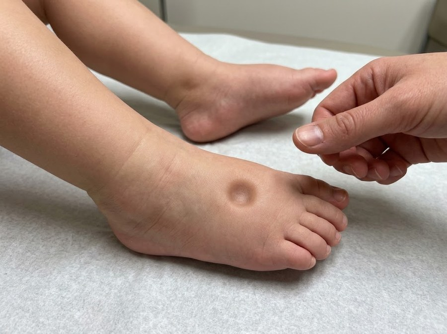
Pitting oedema on the dorsum of the foot
Causes of oedema: low albumin (low oncotic pressure) · leaky capillaries (free radicals, infection) · salt and water retention (renin–angiotensin–aldosterone, ADH)
Fatty liver: low apolipoprotein → fat cannot leave the liver
Oedema with severe wasting (marasmic kwashiorkor): the sickest group
Exam trap
SAM with oedema (kwashiorkor) is not caused by calorie deficiency alone: protein deficiency and infection play the main part. SAM without oedema (marasmus) is the adaptation to starvation.
Serum albumin is low in SAM with oedema, never raised.
The large liver of SAM with oedema is due to fatty infiltration, and it is a bad sign.
Poor prognostic signs: hypoglycaemia, hypothermia, jaundice, large liver, purpura, deep corneal ulcer, very low albumin, shock
Refeeding syndrome: feeding too fast → low phosphate, potassium and magnesium → heart failure, death
Exam trap
A child with SAM who has an infection often has no fever; hypothermia and hypoglycaemia are signs of infection, so every child gets antibiotics.
Skin pinch and sunken eyes overestimate dehydration in SAM without oedema; treating them as normal children gives fluid overload and heart failure.
6. Where to treat (CMAM)
Stabilisation centre (admit)
OTP (outpatient)
Medical complication: pneumonia, severe dehydration, shock, hypoglycaemia, hypothermia, severe anaemia, convulsions, lethargy · failed appetite test · oedema +++ · oedema with severe wasting · infant under 6 months who is not feeding well, has oedema or a complication
SAM that is alert, has no medical complication, oedema + or ++, and passes the appetite test · RUTF at home with visits every week
Best next step · a child with SAM and no complication
Do the appetite test: give the child a sachet of RUTF in a quiet place with water to drink.
The child eats at least the test amount for his weight (on the CMAM chart) within 30 minutes → passes → OTP. The child refuses or eats less → fails → admit.
Chapter 2 · 2.2 Severe Acute MalnutritionInpatient Management: Stabilisation28
8. Steps 1–4: emergency treatment
Hypoglycaemia
Conscious: 50 ml of 10% glucose (or sugar water) orally or by NGT, then F-75 · Unconscious: 10% glucose 5 ml/kg IV, then 50 ml by NGT · antibiotics · prevent: feed 2-hourly day and night
Hypothermia
Feed at once · skin-to-skin (kangaroo) with the mother, cover the head, warm room or heater · no hot-water bottles · antibiotics · check temperature every 30 minutes
Dehydration (no shock)
ReSoMal orally or by NGT, slowly: 5 ml/kg every 30 min for 2 h, then 5–10 ml/kg/h for 4–10 h, alternating with F-75 · after each loose stool 50–100 ml · stop if pulse and breathing rise, eyelids puffy or oedema increases
Shock
The only indication for IV fluid: 15 ml/kg over 1 h of Ringer's lactate with 5% glucose (or half-strength saline with 5% glucose) · improves → repeat, then ReSoMal · no improvement → septic shock: maintenance fluid + blood 10 ml/kg over 3 h
Electrolytes
Extra potassium and magnesium (mineral mix in F-75, ReSoMal) · low-sodium feeds · never diuretics for the oedema
Severe anaemia
Hb < 4 g/dL (or < 6 g/dL with distress) → packed cells or whole blood 10 ml/kg over 3 h in the first 24 h
Exam trap
Standard ORS is not used in SAM: it has too much sodium and too little potassium. ReSoMal has Na 45 and K 40 mmol/L (ORS: Na 75, K 20).
IV fluid only for shock; the oedema is not treated with diuretics and not a reason for IV albumin.
Ampicillin 50 mg/kg IV/IM 6-hourly for 2 days, then oral amoxicillin to complete 7 days · plusgentamicin 7.5 mg/kg IV/IM once daily for 7 days · no improvement in 48 h → ceftriaxone
Vaccine
Measles vaccine if 6 months or older and not vaccinated
Vitamin A
F-75, F-100 and RUTF already contain it · high dose only with eye signs or measles: < 6 m 50,000 IU · 6–12 m 100,000 IU · > 12 m 200,000 IU orally on day 1, day 2 and day 14
Folic acid, zinc, copper
Folic acid 5 mg on day 1, then 1 mg daily · zinc, copper, potassium and magnesium from the mineral mix
Iron
Not in the stabilisation phase (worsens infection) · start when the child gains weight (week 2): 3 mg/kg/day (RUTF already contains iron)
10. Outpatient therapeutic programme (OTP)
RUTF (ready-to-use therapeutic food): peanut paste with milk, sugar, oil, vitamins and minerals · 500 kcal per sachet (92 g) · energy like F-100
Needs no water or cooking → no contamination at home
Dose: about 200 kcal/kg/day (sachets by weight band) · give with plenty of clean water · continue breastfeeding
On admission: amoxicillin 15 mg/kg 8-hourly for 5 days · measles vaccine · deworming (albendazole) at the second visit
Weekly visits: weight, MUAC, oedema, appetite test, health check
Refer to the stabilisation centre: complication, failed appetite test, increasing oedema, weight loss
Chapter 2 · 2.2 Severe Acute MalnutritionInfection, Micronutrients & Feeding29
11. Steps 7–8: feeding
F-75 (stabilisation)
Feeds a day
Volume per feed
Days 1–2
2-hourly (12 feeds)
11 ml/kg
Days 3–5
3-hourly (8 feeds)
16 ml/kg
Days 6–7
4-hourly (6 feeds)
22 ml/kg
F-75: 75 kcal and 0.9 g protein per 100 ml · total 130 ml/kg/day (100 ml/kg/day with oedema +++) · by cup; NGT if the child takes less than 80%
Low protein and sodium: the liver, gut and heart cannot handle more at first
Transition when appetite returns and oedema is reducing: replace F-75 by the same volume of F-100 (100 kcal, 2.9 g protein per 100 ml) or RUTF for 2 days, then increase
Catch-up: F-100 150–220 ml/kg/day or RUTF · target gain > 10 g/kg/day
Best next step · during transition the pulse rises by 25/min and breathing by 5/min
This warns of heart failure: reduce the feed volume, then increase slowly again.
Weight gain below 5 g/kg/day is poor: look for infection (TB, HIV, UTI) and check the feeding.
12. Discharge and follow-up
Stabilisation centre → OTP
Appetite returned (passes the appetite test) · oedema reducing · complications treated · clinically well
Cured (discharge from SAM care)
The criterion used at admission is normal: MUAC ≥ 12.5 cm and/or weight-for-height ≥ −2 SD · no oedema · both on 2 consecutive visits
Recovery order
Appetite and smile return first (days 3–4) · oedema goes · skin heals (about 10 days) · weight gain
Step 9–10
Play and emotional stimulation, mother stays with the child · teach the mother feeding, hygiene and vaccination · follow up in the community
13. Moderate acute malnutrition (MAM)
MUAC 11.5 to < 12.5 cm or weight-for-height −3 to < −2 SD, no oedema
Chapter 2 · 2.3 RicketsDefinition, Vitamin D & Causes30
2.3Rickets
Rickets is defective mineralisation of the growing bone (growth plate and osteoid) in children; the same defect after the growth plates close is osteomalacia. The commonest cause is nutritional rickets from vitamin D deficiency, low calcium intake, or both. Treatment and prevention follow the Global Consensus on Nutritional Rickets.
1. Vitamin D metabolism
25(OH)D is the storage form and the test of vitamin D status · 1,25(OH)2D is the active form
2. Classification of rickets
Calcipenic (low calcium, PTH high)
Nutritional: vitamin D deficiency and/or low calcium intake (commonest) · malabsorption (coeliac disease) · chronic liver disease · anticonvulsants (phenytoin, phenobarbitone: faster breakdown of vitamin D) · chronic kidney disease (renal osteodystrophy) · vitamin D-dependent rickets type 1 (no 1α-hydroxylase) and type 2 (receptor resistance, alopecia)
Phosphopenic (low phosphate, PTH normal)
X-linked hypophosphataemic rickets (renal phosphate loss; the commonest inherited form) · Fanconi syndrome, renal tubular acidosis · rickets of prematurity
3. Risk factors for nutritional rickets
Age 6 months to 2 years (fastest bone growth)
Exclusive breastfeeding beyond 6 months without vitamin D supplement (breast milk is low in vitamin D)
Little sunlight: kept indoors, fully wrapped, covered mother · dark skin
Mother vitamin D deficient in pregnancy
Low-calcium diet: cereals rich in phytate, little milk
Preterm and twins (rapid growth) · a child with SAM develops rickets during catch-up growth
Chapter 2 · 2.3 RicketsClinical Features & Investigations31
4. Clinical features
Early
Irritability, sweating of the head · craniotabes (soft skull: the parietal or occipital bone yields like a ping-pong ball; the earliest sign, in the first year) · rachitic rosary
Chapter 2 · 2.4 Vitamin & Micronutrient DeficienciesVitamin A Deficiency33
2.4Vitamin & Micronutrient Deficiencies
Micronutrients are vitamins and minerals needed in small amounts. Their deficiency is common with poor diet, SAM, diarrhoea and measles. Vitamin A, zinc, iodine and iron are the important deficiencies in children; supplementation follows WHO and the EPI.
1. Vitamin A: function and causes of deficiency
Vision: forms rhodopsin for dim-light vision
Epithelium: keeps the conjunctiva, cornea, skin and gut lining healthy
Immunity: deficiency raises death from measles and diarrhoea
Poor diet: no milk, eggs, liver, dark-green or orange vegetables
The earliest symptom; the child cannot see at dusk
X1A
Conjunctival xerosis
Dry, wrinkled, dull conjunctiva
X1B
Bitot spots
Foamy grey-white patches on the temporal bulbar conjunctiva
X2
Corneal xerosis
Dry, hazy cornea
X3A / X3B
Corneal ulcer / keratomalacia
Under or over one third of the cornea; melting cornea → blindness (an emergency)
XS · XF
Corneal scar · xerophthalmic fundus
Permanent damage · white retinal spots
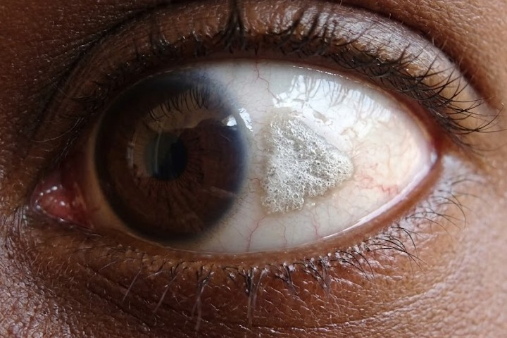
Bitot spot: foamy patch on the temporal conjunctiva
Outside the eye: dry, rough skin (follicular hyperkeratosis) · more respiratory, gut and urinary infections · growth failure.
3. Treatment and supplementation
Age
Treatment dose
Supplement (WHO, EPI)
Under 6 months
50,000 IU
None routinely
6–11 months
100,000 IU
100,000 IU once
12 months and over
200,000 IU
200,000 IU every 6 months to 5 years
Xerophthalmia: the treatment dose orally on day 1, day 2 and day 14 · corneal ulcer: also antibiotic eye drops and an eye shield
Measles: the treatment dose on day 1 and day 2 for every child (lowers death and blindness); third dose at 2–4 weeks if eye signs
Exam trap
Night blindness is the earliest symptom; Bitot spots are the earliest sign seen on examination.
Too much vitamin A: acute → raised intracranial pressure (bulging fontanelle, vomiting); chronic → hair loss, dry itchy skin, bone pain, large liver. It is teratogenic in pregnancy.
Night blindness is due to vitamin A, never vitamin C.
Poor growth, poor appetite · diarrhoea · frequent infections · slow wound healing · skin rash around the mouth and anus · hair loss
Acrodermatitis enteropathica
Autosomal recessive defect of zinc absorption · starts at weaning from breast milk · triad: red scaly rash around the mouth, anus and on the hands and feet + diarrhoea + hair loss · candida superinfection · treatment: oral zinc for life (dramatic response)
Zinc in diarrhoea (WHO, IMCI)
Under 6 months 10 mg daily · 6 months and over 20 mg daily, for 10–14 days · shortens the episode and prevents new episodes for 2–3 months
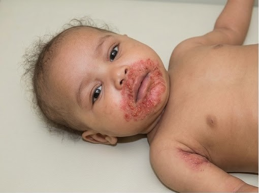
Acrodermatitis enteropathica: crusted rash around the mouth
5. Iodine
Needed for thyroid hormone · deficiency is the commonest preventable cause of intellectual disability in the world
In pregnancy: miscarriage, stillbirth, endemic cretinism (deaf-mutism, intellectual disability, short stature, spasticity)
In children: goitre, hypothyroidism, poor school performance
Prevention: iodised salt for every household · iodised oil capsules where salt is not iodised
6. Iron and other minerals
Iron
The commonest micronutrient deficiency · whole cow's milk before 1 year, late weaning, hookworm, preterm birth · pallor, pica, poor attention · treatment in Anaemia (8.1)
Anaemia and neutropenia in preterm infants and malnutrition
Selenium
Cardiomyopathy (Keshan disease)
Fluoride
Too little → dental caries · too much → mottled teeth (fluorosis)
Exam trap
A napkin rash that spreads around the mouth with diarrhoea and hair loss after weaning is acrodermatitis enteropathica (zinc), not simple ammoniacal dermatitis.
ALP is a zinc-dependent enzyme: it may stay low in rickets with malnutrition or zinc deficiency.
Infant seizures · peripheral neuropathy on isoniazid · microcytic anaemia
100 mg IV for seizures · give with isoniazid to prevent neuropathy
B12, folate
Megaloblastic anaemia
B12: breastfed infant of a vegan mother, ileal disease (also neurological signs) · folate: goat's milk, malabsorption
IM vitamin B12 · oral folic acid
C ascorbic acid
Scurvy
Painful legs (subperiosteal bleeding) with pseudoparalysis (frog position) · bleeding gums (teeth present) · scorbutic rosary · poor wound healing
Vitamin C 100–200 mg daily + citrus fruits
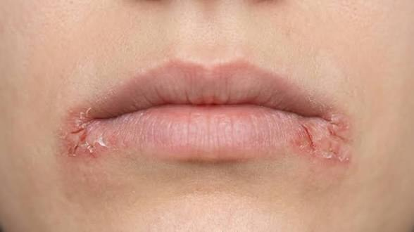
Angular stomatitis (riboflavin, B2)
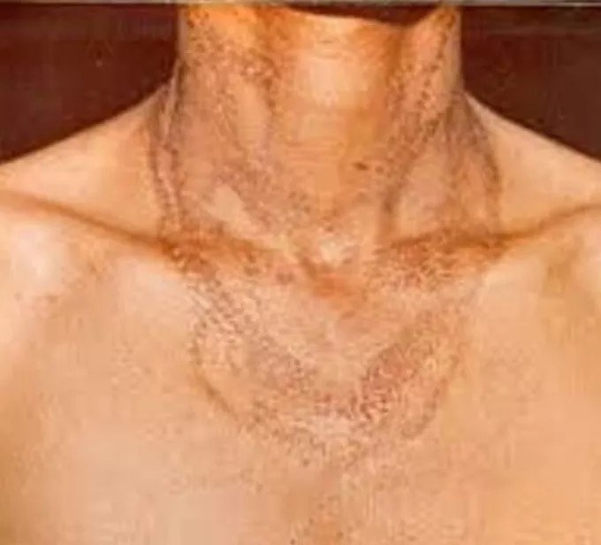
Casal necklace (pellagra, niacin)
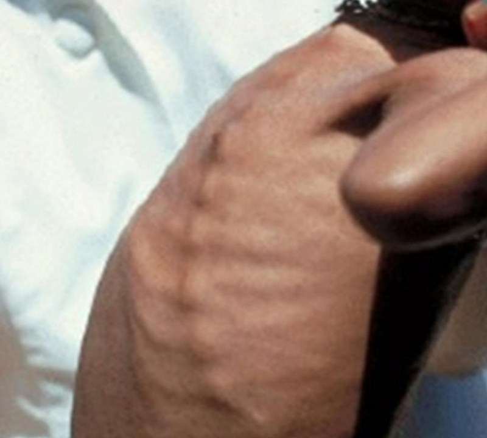
Scorbutic rosary (scurvy, vitamin C)
8. Fat-soluble vitamins (A, D, E, K)
A, D
Vitamin A: first page of this topic · vitamin D: Rickets (2.3)
E
Antioxidant · deficiency in preterm infants (haemolytic anaemia) and fat malabsorption (ataxia, neuropathy)
K
Clotting factors II, VII, IX, X · newborns are low → vitamin K deficiency bleeding · prevented by vitamin K 1 mg IM at birth · also in liver disease and fat malabsorption
Exam trap
Vitamin and disease pairs: B1 → beriberi · B3 → pellagra · B6 → peripheral neuritis · C → scurvy · K → raised prothrombin time. "B12 → pellagra" is the false pair.
Fat-soluble vitamins (A, D) are stored and can be toxic; water-soluble vitamins are not stored and rarely toxic.
Bleeding gums are seen in scurvy only when teeth have erupted.
Chapter 3 · 3.1 The Normal NewbornDefinitions & Normal Values36
3.1The Normal Newborn
The neonatal period is the first 28 days of life: early (days 0–7) and late (days 8–28). Most neonatal deaths happen in the first week, from prematurity, birth asphyxia and infection.
Chapter 3 · 3.1 The Normal NewbornExamination: Normal & Abnormal Findings37
3. Normal findings that need only reassurance
Erythema toxicum
Commonest rash (50%): red blotches with small pustules on the trunk and face, days 2–3 · baby well · pustules contain eosinophils · fades in days
Milia · miliaria
Milia: tiny white papules on the nose (blocked sebaceous glands) · miliaria: sweat rash from overheating
Mongolian spots
Blue-grey patches over the lower back and buttocks · common in dark-skinned babies · fade in years · not bruises
Salmon patch
Pink macules on the eyelids, forehead ("angel's kiss") and nape ("stork bite") · fade
Others
Acrocyanosis (blue hands and feet) in the first day · caput succedaneum · moulding of the skull · breast enlargement and witch's milk in both sexes · vaginal mucus or small bleed (maternal hormone withdrawal) · Epstein pearls on the palate · umbilical hernia · liver 1–2 cm below the costal margin · innocent soft murmur in the first day
Best next step · a girl newborn has bilateral breast swelling with a little milk
Reassure: it is due to maternal hormones and settles in a few weeks.
Do not squeeze the breasts: squeezing causes mastitis and abscess.
4. Abnormal findings that need action
Central cyanosis
Blue tongue and lips at any time · look for heart or lung disease
Jaundice in the first 24 h
Always pathological (haemolysis, infection)
Sacral dimple, tuft of hair
Midline lesion over the spine: spina bifida occulta, tethered cord → ultrasound
Present from birth, does not fade · on the face (ophthalmic area) → Sturge–Weber syndrome
Strawberry naevus
Infantile haemangioma: appears in the first weeks, grows to about 1 year, then regresses · propranolol if near the eye or airway
Other
Cleft palate (feel the palate) · choanal atresia (cyanosis at rest, pink when crying; NGT will not pass) · single umbilical artery (renal anomalies) · weak femoral pulses (coarctation) · unstable hip (DDH) · ambiguous genitalia
5. Routine care at birth (WHO essential newborn care)
Dry and skin-to-skin with the mother · keep warm
Delayed cord clamping (at least 1 minute) · cut with a sterile blade
Breastfeeding within the first hour, exclusive
Vitamin K 1 mg IM (prevents vitamin K deficiency bleeding)
Eye prophylaxis: tetracycline 1% or erythromycin ointment (ophthalmia neonatorum)
Dry cord care; chlorhexidine 7.1% to the cord stump where home births and cord infection are common
BCG, OPV 0 and hepatitis B at birth (EPI)
Full examination within 24 h · weight
Bath delayed to 24 hours
Teach the mother the danger signs
6. Primitive reflexes at birth
Present at birth: Moro, rooting, sucking, palmar and plantar grasp, stepping, placing, ATNR · parachute is not present (appears at 8–9 months)
Moro absent on both sides: CNS depression (HIE, sepsis, kernicterus, drugs) · absent on one side: Erb palsy or fractured clavicle or humerus (details in 1.2 Development)
Chapter 3 · 3.2 Neonatal ResuscitationPreparation, Apgar & the Golden Minute39
3.2Neonatal Resuscitation
About 1 in 10 newborns needs help to start breathing and fewer than 1 in 100 needs chest compressions or drugs. Ventilation of the lungs is the single most important step. The steps follow the 2025 neonatal resuscitation guidelines (ILCOR, AHA–AAP, ERC) and Helping Babies Breathe.
1. Deliveries that need a person trained in resuscitation
Known fetal anomaly (diaphragmatic hernia, hydrops)
Prepare: a warm room and radiant warmer, dry towels, a bag and mask (sizes 0 and 1), suction, oxygen with a blender, pulse oximeter, laryngoscope and tubes (2.5–3.5 mm), umbilical catheter, adrenaline 1:10,000.
2. Apgar score
Sign
0
1
2
Appearance (colour)
Blue or pale
Body pink, extremities blue
Pink all over
Pulse (heart rate)
Absent
< 100/min
≥ 100/min
Grimace (reflex)
None
Grimace
Cry, cough, sneeze
Activity (tone)
Limp
Some flexion
Active movement
Respiration
Absent
Slow, irregular, gasping
Good, crying
Scored at 1 and 5 minutes, then every 5 minutes while resuscitation continues · 7–10 normal, 4–6 moderately low, 0–3 low
Resuscitation never waits for the 1-minute Apgar: decide on breathing, heart rate and tone
Helping Babies Breathe · the golden minute
Dry the baby thoroughly and keep warm; clear the airway only if secretions block it; rub the back to stimulate.
Not breathing or gasping by 60 seconds → start bag-and-mask ventilation at 40–60 breaths per minute.
Key numbers
1 · 5 min
Times of the Apgar score
60 seconds
The golden minute
≥ 60 s
Delayed cord clamping
5
Inflation breaths
3 : 1
Compressions to breaths
< 60/min
HR to start compressions
20 min
No HR: consider stopping
10–30 µg/kg
Adrenaline IV (0.1–0.3 ml/kg of 1:10,000)
10 ml/kg
Saline or blood for volume
85–95 %
SpO2 target at 10 minutes
3. Oxygen saturation targets after birth (right hand)
Meconium-stained liquor: a vigorous baby gets routine care; a non-vigorous baby gets ventilation within the first minute. Routine tracheal suction is no longer done; suction only if the airway is blocked.
Term babies are resuscitated in air (21%), not 100% oxygen; oxygen goes up to 100% only with chest compressions.
The compression ratio in the newborn is 3 : 1 (90 compressions + 30 breaths per minute), not 15 : 2.
5. Drugs in neonatal resuscitation
Drug
Dose and route
Indication
Adrenaline 1:10,000
0.1–0.3 ml/kg (10–30 µg/kg) IV via umbilical vein or IO, every 3–5 min · down the tube 0.5–1 ml/kg only while IV access is being placed
HR < 60/min despite 30 s of good ventilation and compressions
Volume
0.9% saline 10 ml/kg IV over 5–10 min, may repeat · O-negative blood if major blood loss
Suspected blood loss, shock, poor response
Glucose 10%
2 ml/kg IV, then an infusion
Low blood glucose after prolonged resuscitation
Sodium bicarbonate is not used routinely. The umbilical vein is the quickest IV route in the delivery room.
Chapter 3 · 3.3 Preterm, Small & Large BabiesPrematurity: Causes, Features & Care42
3.3Preterm, Small & Large Babies
A preterm baby is born before 37 completed weeks (about 10% of births). Grades: extremely preterm < 28 weeks · very preterm 28 to < 32 weeks · moderate to late preterm 32 to < 37 weeks. Prematurity is the leading cause of neonatal death.
1. Causes
Idiopathic spontaneous preterm labour (the commonest)
The New Ballard score estimates gestation (± 2 weeks) from 6 physical and 6 neuromuscular signs (posture, square window, arm recoil, popliteal angle, scarf sign, heel to ear).
3. Care of the preterm baby
Before birth
Antenatal corticosteroids (dexamethasone or betamethasone) at 24–34 weeks when preterm birth is expected (WHO) · magnesium sulfate before 32 weeks (brain protection) · antibiotics for preterm rupture of membranes
Warmth
Kangaroo mother care (KMC): continuous skin-to-skin on the mother's chest, started immediately after birth for every baby < 2000 g once able to breathe (WHO 2022) · incubator if unstable
Feeding
Mother's own breast milk (donor milk next) · by NGT before 32–34 weeks, cup or breast later · small trophic feeds first, increase daily · human milk fortifier for < 1500 g
Fluids
10% glucose 60–80 ml/kg/day on day 1, increase by 20 ml/kg/day to 150 ml/kg/day · add sodium and potassium from day 2–3
Supplements
Vitamin D · iron from 2–6 weeks · vitamin K at birth
Discharge
Feeding well by breast or cup · gaining weight · stable temperature · mother confident (usually about 1800 g)
Chapter 3 · 3.3 Preterm, Small & Large BabiesComplications of Prematurity43
4. Complications by system
Respiratory
RDS (surfactant deficiency, see 3.4) · apnoea of prematurity (pause ≥ 20 s, or shorter with bradycardia or cyanosis; treat with caffeine citrate 20 mg/kg load, then 5–10 mg/kg once daily) · bronchopulmonary dysplasia (still needs oxygen at 36 weeks' corrected age)
Temperature
Hypothermia: large surface area, thin skin, little brown fat · cold stress 36–36.4 °C · moderate 32–35.9 °C · severe < 32 °C
Brain
Intraventricular haemorrhage (fragile germinal matrix; in the first 72 h; cranial ultrasound) · periventricular leukomalacia → spastic diplegia
Heart
Patent ductus arteriosus: bounding pulses, continuous murmur, heart failure · echo · ibuprofen or paracetamol, surgery if they fail
Retinopathy of prematurity: abnormal retinal vessels (immaturity + too much oxygen) → detachment, blindness · screen every baby < 32 weeks or < 1500 g · laser or anti-VEGF injection
Metabolic, blood
Hypoglycaemia, jaundice (immature liver), anaemia of prematurity, osteopenia (low calcium and phosphate), vitamin K deficiency
Infection
Low maternal IgG (crosses after 32 weeks), immature immunity, lines and tubes · early (GBS) and late (staphylococci, Gram-negatives) sepsis
Bowel wall necrosis in preterm babies, usually 1–2 weeks after starting feeds · risk: prematurity, formula feeds, fast feed increase, asphyxia, polycythaemia, PDA
Features: feed intolerance, bile-stained vomiting, abdominal distension, blood in the stool, then shock, apnoea, abdominal wall redness
Abdominal X-ray: pneumatosis intestinalis (gas in the bowel wall) · gas in the portal vein · free air (perforation)
Treatment: nil by mouth, NGT on free drainage, IV fluids, IV antibiotics (ampicillin + gentamicin + metronidazole) for 7–14 days · surgery for perforation
Prevention: breast milk, antenatal steroids, careful feed increase
6. Intrauterine growth restriction (IUGR) and SGA
Symmetrical
Asymmetrical (head sparing)
Measurements
Weight, length and head all small
Weight mainly small · head and length nearly normal
Timing
Early pregnancy
Late pregnancy (third trimester)
Causes
Chromosomal (trisomy 13, 18, 21), congenital infection (TORCH), constitutionally small
Chapter 3 · 3.4 Respiratory Distress & Cyanosis in the NewbornCauses & Respiratory Distress Syndrome45
3.4Respiratory Distress & Cyanosis in the Newborn
Respiratory distress in a newborn means RR > 60/min with any of: grunting, nasal flaring, chest recession (subcostal, intercostal, sternal) or cyanosis. The cause is often outside the lungs.
1. Causes of respiratory distress in the newborn
Lungs
TTN (the commonest at term) · RDS (the commonest in preterm) · meconium aspiration · pneumonia · pneumothorax · pulmonary hypoplasia
Airway
Bilateral choanal atresia · Pierre Robin sequence · oesophageal atresia with fistula (frothy saliva, NGT coils in the pouch)
Give 100% oxygen for 10 minutes and measure right radial PaO2 · PaO2 rises above 150 mmHg → lung disease · stays below 100 mmHg → cyanotic heart disease (or severe PPHN) → echocardiography
Clues to heart disease
Cyanosis without much distress · murmur, weak femoral pulses · no rise in SpO2 with oxygen · baby gets worse as the duct closes (day 2–5)
Duct-dependent lesion
Prostaglandin E1 infusion5–10 ng/kg/min (higher if the duct is closing) keeps the duct open · side effect: apnoea (be ready to ventilate) · refer to a cardiac centre
PPHN
High pulmonary pressure after birth → right-to-left shunt · after MAS, asphyxia, sepsis, CDH · labile oxygen, pre-ductal SpO2 higher than post-ductal · ventilation, inhaled nitric oxide
Jaundice is seen in the newborn when serum bilirubin is above 5 mg/dL (85 µmol/L); it affects about 60% of term and 80% of preterm babies. Most is unconjugated and harmless, but high levels cross the brain and cause kernicterus. Management follows the AAP 2022 hour-specific charts.
1. Why newborns become jaundiced
More bilirubin made: high red cell mass (Hb 14–20 g/dL) and shorter red cell life (70–90 days)
Less cleared: low glucuronyl transferase activity in the immature liver · more enterohepatic circulation (sterile gut, slow feeding)
2. Physiological compared with pathological jaundice
Physiological
Pathological (any one)
Onset
After 24 hours (day 2–3)
In the first 24 hours
Peak level
Term ≤ 12 mg/dL on day 3–4 · preterm ≤ 15 mg/dL on day 5–7
Above the phototherapy line for age
Rate of rise
< 5 mg/dL per day
> 5 mg/dL per day (or > 0.2 mg/dL per hour)
Type
Unconjugated only
Conjugated > 1–2 mg/dL (or > 20% of total)
Duration
Gone by day 10 (term), 14 (preterm)
> 14 days term, > 21 days preterm
Baby
Well, feeding
Ill, pale, large liver or spleen, dark urine, pale stools
Biliary atresia: progressive obliteration of the bile ducts · well baby with prolonged jaundice, pale stools, firm liver
Ultrasound (small or absent gallbladder), HIDA scan (no excretion), cholangiogram, liver biopsy
Kasai portoenterostomy before 60 days (best before 45) · liver transplant if it fails
Best next step · a baby still jaundiced at 2 weeks
Look at the stool and urine colour and measure total and conjugated (split) bilirubin.
Conjugated jaundice is never normal: refer at once to exclude biliary atresia.
7. Assessment
Look at the skin in daylight, pressing it: jaundice spreads from head to feet as it rises · palms and soles = severe (IMCI)
Measure total serum bilirubin (or transcutaneous) in every visibly jaundiced baby in the first 24 h, and when it looks marked
Plot the level on the hour-specific chart for gestation and neurotoxicity risk factors (gestation < 38 weeks, haemolysis, sepsis, acidosis, albumin < 3 g/dL, instability)
Pathological jaundice: blood groups of mother and baby, direct Coombs test, Hb, reticulocytes, film, G6PD, conjugated bilirubin, septic screen, thyroid
8. Phototherapy
Blue light (460–490 nm) changes unconjugated bilirubin into water-soluble isomers excreted in bile and urine
Started when bilirubin is above the phototherapy line for the baby's age in hours (term, no risk factors, after day 3: about 18–22 mg/dL)
Baby naked, eyes covered, maximum skin exposed, turned · continue breastfeeding · check bilirubin every 4–12 h
Side effects: dehydration (↑ water loss), loose green stools, rash, temperature instability, separation from the mother
Bronze baby syndrome if used in conjugated jaundice · conjugated jaundice is a contraindication
Bilirubin above the exchange line despite intensive phototherapy · any signs of acute bilirubin encephalopathy · severe haemolytic anaemia
Method
Double volume (2 × 80–90 ml/kg) of fresh O Rh-negative blood (cross-matched with the mother) via the umbilical vein in small aliquots · removes bilirubin and antibodies, corrects anaemia
Neonatal sepsis is a systemic bacterial infection in the first 28 days and a leading cause of neonatal death. Signs are non-specific, so every sick newborn is treated as septic until proved otherwise. Treatment follows the WHO 2024 recommendations for young infants.
1. Early-onset compared with late-onset sepsis
Early-onset (first 72 h)
Late-onset (after 72 h)
Source
Mother: birth canal, ascending infection
Hospital (lines, tubes, hands) or community
Risk factors
Prolonged rupture of membranes > 18 h, maternal fever or chorioamnionitis, maternal GBS or UTI, preterm labour
Prematurity, long admission, IV lines, ventilation, poor hand hygiene, poor cord care
Organisms
Group B streptococcus, E. coli, Klebsiella, Listeria
Staph. aureus, coagulase-negative staph, Klebsiella, Pseudomonas, E. coli, Candida
Main picture
Pneumonia, respiratory distress, shock
Bacteraemia with meningitis, osteomyelitis, UTI
2. Clinical features
Poor feeding, lethargy, irritability, weak Moro and suck
Temperature instability: fever or hypothermia (commoner in preterm)
Vomiting, distension · jaundice · hypo- or hyperglycaemia
Meningitis: bulging fontanelle, seizures, high-pitched cry (neck stiffness is rare)
Late: petechiae, bleeding (DIC), sclerema (hard skin, bad sign), shock
3. Investigations (septic screen) and treatment
Septic screen
Blood culture (before antibiotics) · CBC (WBC < 5000 or > 20,000, low platelets) · CRP · lumbar puncture in every baby with suspected sepsis who is stable enough · urine culture after 72 h · chest X-ray if distress · glucose
First choice
Ampicillin 50 mg/kg IV/IM (12-hourly in week 1, 8-hourly after) + gentamicin 5 mg/kg once daily (7.5 mg/kg after week 1), for at least 10 days (WHO 2024)
Meningitis
Cefotaxime (or ceftriaxone after the first week, not in jaundice) + ampicillin (Listeria) or gentamicin, for at least 3 weeks
Worst in the first trimester · triad: cataract, sensorineural deafness, congenital heart disease (PDA, pulmonary artery stenosis) · blueberry muffin rash · prevented by vaccinating girls before pregnancy
Cytomegalovirus
The commonest congenital infection · 90% silent at birth · periventricular calcification, microcephaly, petechiae · commonest infectious cause of sensorineural deafness · oral valganciclovir for 6 months if symptomatic
Herpes simplex
Caught during delivery from genital herpes · days 5–21: skin, eye and mouth vesicles, encephalitis or disseminated disease · IV aciclovir · caesarean section if the mother has active lesions
Syphilis
Early: snuffles (bloody nasal discharge), rash on palms and soles, hepatosplenomegaly, osteochondritis (pseudoparalysis) · late: Hutchinson teeth, saddle nose, sabre shins, interstitial keratitis · benzylpenicillin for 10 days · screen every pregnant woman
Varicella
Before 20 weeks: limb hypoplasia and zig-zag skin scars · maternal chickenpox 5 days before to 2 days after delivery → severe neonatal varicella: give VZIG, aciclovir if ill
Hepatitis B, HIV
Hepatitis B: vaccine within 24 h + HBIG if the mother is HBsAg positive · HIV: maternal ART, infant nevirapine prophylaxis, exclusive breastfeeding on ART
Exam trap
Calcification around the ventricles = CMV · scattered (diffuse) calcification with hydrocephalus = toxoplasmosis.
Rubella risk is highest in early pregnancy; toxoplasma transmission rises with gestation, but early infection is more severe.
6. Local infections
Gonococcal conjunctivitis
Days 2–5: severe purulent discharge, swollen lids · can perforate the cornea · ceftriaxone 50 mg/kg IM once (max 125 mg) + frequent eye washing · treat the parents
Chlamydial conjunctivitis
Days 5–14: milder discharge · may cause pneumonia at 1–3 months · oral erythromycin for 14 days (or azithromycin 3 days)
Omphalitis
Redness spreading from the cord to the skin, pus, foul smell · cloxacillin + gentamicin IV · a red stump with pus only: clean and local antiseptic
Skin pustules
Few: local antiseptic · many (10 or more) or with sick baby: systemic antibiotics (Staph. aureus)
Oral thrush
White plaques that do not wipe off · nystatin drops · treat the mother's nipples
Clostridium tetani spores enter the umbilical stump (unclean cutting or dressing of the cord) in a baby whose mother was not vaccinated
Day 3–14: a baby who sucked well stops sucking (trismus), then generalised spasms on touch or noise, opisthotonus, clenched fists · baby is conscious, no fever at first
Death from laryngeal spasm, apnoea, aspiration pneumonia, sepsis
Quiet, dark room, minimal handling · feed expressed breast milk by NGT · IV fluids
Tetanus immunoglobulin500 IU IM once (or antitoxin) · metronidazole (or benzylpenicillin) for 7–10 days · diazepam for spasms · clean the cord
Prevention: Td vaccine to every woman of child-bearing age and in pregnancy, clean delivery and clean cord care
Best next step · a 7-day-old home-delivered baby stops sucking and has spasms when touched
Diagnose neonatal tetanus: admit to a quiet room, give tetanus immunoglobulin, metronidazole and diazepam, and feed by NGT.
Give the mother Td vaccine and report the case to the EPI.
Perinatal asphyxia is failure of gas exchange around birth → hypoxaemia, hypercapnia and acidosis. Brain injury from it is hypoxic–ischaemic encephalopathy (HIE), a major cause of neonatal death and of cerebral palsy.
1. Causes and diagnosis
Before or during labour (90%): placental abruption, cord prolapse or compression, obstructed or prolonged labour, uterine rupture, maternal hypotension or eclampsia
After birth: failure to breathe, severe heart or lung disease, severe blood loss
Evidence: cord arterial pH < 7.0 or base deficit ≥ 12 · Apgar ≤ 5 at 10 minutes or still needing ventilation · encephalopathy starting in the first 24–48 h · multi-organ dysfunction
Criteria: ≥ 36 weeks, evidence of asphyxia, and moderate or severe encephalopathy
Started within 6 hours of birth · core temperature 33.5 °C for 72 hours, then slow rewarming
Lowers death and disability in moderate–severe HIE
Done only in a NICU able to ventilate, monitor and give full intensive care; otherwise keep normal temperature and avoid fever
6. Prognosis and follow-up
Good signs: normal examination and feeding by 1–2 weeks, normal EEG and MRI · bad signs: severe stage, seizures > 24 h, abnormal EEG (burst suppression), basal ganglia injury on MRI
Follow up development, hearing and vision · early physiotherapy
Exam trap
Cooling is for babies of 36 weeks or more with moderate or severe HIE, started within 6 hours; mild HIE is not cooled.
After asphyxia, give less fluid, not more: the kidneys and ADH limit water excretion.
7. Causes
Brain
HIE (the commonest, first 24–48 h) · intracranial haemorrhage, stroke · meningitis, TORCH · brain malformations · kernicterus
Maternal drug withdrawal · benign familial neonatal seizures · neonatal tetanus (spasms, not true seizures)
8. Types and jitteriness
Subtle (the commonest): eye deviation, blinking, lip smacking, sucking, cycling movements, apnoea with tachycardia
Clonic (focal or multifocal, rhythmic) · tonic (posturing, common in preterm) · myoclonic (bad prognosis)
Jitteriness
Seizure
Provoked by touch
Yes
No
Stops when limb held
Yes
No
Eye signs, apnoea, HR change
No
Yes
EEG
Normal
Abnormal
9. Management (ILAE 2023)
ABC, oxygen · check glucose at once, then calcium, magnesium, sodium, blood gas, septic screen (LP), cranial ultrasound, EEG
Treat the cause: 10% glucose 2 ml/kg IV then infusion · 10% calcium gluconate 2 ml/kg IV over 10 min with ECG · magnesium sulfate 50% 0.2 ml/kg · antibiotics if meningitis
First-line anticonvulsant: phenobarbital 20 mg/kg IV over 20 min (a further 10–20 mg/kg if needed)
Second line: phenytoin 20 mg/kg IV, levetiracetam (40–60 mg/kg), or midazolam · resistant: pyridoxine 100 mg IV
Stop anticonvulsants before discharge when seizures were due to an acute cause (such as HIE) and have stopped
Chapter 3 · 3.8 Infant of a Diabetic Mother & Metabolic ProblemsInfant of a Diabetic Mother56
3.8Infant of a Diabetic Mother & Metabolic Problems
In an infant of a diabetic mother (IDM), maternal hyperglycaemia crosses the placenta → fetal hyperglycaemia → fetal hyperinsulinism. Insulin is a growth hormone in the fetus (macrosomia) and keeps acting after birth when maternal glucose stops (hypoglycaemia). Risk depends on maternal glucose control.
Hypertrophic cardiomyopathy (thick septum), usually resolves in weeks
Congenital anomalies
Raised 3–4 times with poor control around conception: heart (TGA, VSD), neural tube defects, renal agenesis, small left colon, caudal regression (sacral agenesis, the most specific)
Growth
Usually large; IUGR when the mother has diabetic vascular disease
2. Management
Good maternal control before conception and in pregnancy · deliver where a neonatal unit is available
Feed within the first hour and every 2–3 hours
Check blood glucose before the second feed and regularly for 24–48 h · treat hypoglycaemia (next page)
Watch for jaundice, RD, polycythaemia · echo if murmur or heart failure
3. Neonatal hypoglycaemia
Treat when glucose is < 2.6 mmol/L (47 mg/dL) after the first hours, or any low value with symptoms
At risk: IDM, SGA and IUGR, preterm, large babies, hypothermia, sepsis, asphyxia, polycythaemia, delayed feeding
Symptoms: jitteriness, poor feeding, lethargy, hypotonia, high-pitched cry, apnoea, cyanosis, seizures · many have none
Untreated it causes permanent brain injury (occipital), so screen babies at risk
No symptoms, can feed
Breastfeed (or expressed milk) · 40% dextrose gel 0.5 ml/kg to the inside of the cheek · recheck in 30–60 min
Symptoms, or still low
10% glucose 2 ml/kg IV over a few minutes, then an infusion of 10% glucose 60–90 ml/kg/day (glucose 4–6 mg/kg/min) · check glucose 30 min later and then regularly
Persistent
Needs > 8 mg/kg/min of glucose → think hyperinsulinism, hypopituitarism, inborn errors · glucagon, hydrocortisone, diazoxide · send insulin and cortisol during hypoglycaemia
Cow's milk or high-phosphate feeds, hypoparathyroidism (DiGeorge), hypomagnesaemia, vitamin D deficiency
Features
Total calcium < 2 mmol/L (8 mg/dL) or ionised < 1 mmol/L · jitteriness, high-pitched cry, tetany, laryngospasm, seizures · long QT on ECG
Treatment
10% calcium gluconate 2 ml/kg IV slowly over 10 min with ECG monitoring (bradycardia, skin necrosis if it leaks), then oral calcium · correct magnesium
Exam trap
A jittery newborn needs a blood glucose first, then calcium.
Seizures that do not respond to calcium suggest low magnesium.
Plethoric; may cause jaundice, hypoglycaemia, RD, lethargy, seizures, NEC, renal vein thrombosis
Most need only good hydration and feeds
Partial exchange transfusion with 0.9% saline when symptomatic and haematocrit > 65%, or haematocrit > 70–75% without symptoms
6. Anaemia
Physiological anaemia: Hb falls to 10–11 g/dL at 8–12 weeks (earlier and lower in preterm) as erythropoietin falls after birth · no treatment in term babies · iron for preterm
Pathological: blood loss (feto-maternal, placental, cephalhaematoma, subgaleal), haemolysis (Rh, ABO, G6PD, spherocytosis), infection · transfuse if severe
7. Vitamin K deficiency bleeding (haemorrhagic disease of the newborn)
Form
Timing
Cause and features
Early
First 24 h
Mother on anticonvulsants (phenytoin, phenobarbital), warfarin, rifampicin · may be severe (intracranial)
Classic
Day 2–7
No vitamin K at birth, exclusive breastfeeding (milk low in vitamin K) · bleeding from gut, cord, circumcision, injection sites · baby otherwise well
Late
2–12 weeks
Cholestasis (biliary atresia), malabsorption · often intracranial bleeding
Tests: PT (and APTT) prolonged, platelets and fibrinogen normal
Prevention: vitamin K 1 mg IM at birth · treatment: vitamin K 1 mg IV + fresh frozen plasma 10–15 ml/kg if bleeding is serious
Swallowed maternal blood (bloody vomit in a well baby): Apt test (fetal Hb resists alkali and stays pink)
Birth injuries follow a difficult delivery. Risk factors: macrosomia (IDM), shoulder dystocia, breech and malpresentation, prolonged or precipitate labour, small pelvis, instrumental delivery (forceps, vacuum), prematurity.
1. Scalp swellings
Caput succedaneum
Cephalhaematoma
Subgaleal haemorrhage
What it is
Oedema of the scalp over the presenting part
Blood under the periosteum
Blood under the scalp aponeurosis (often after vacuum)
Onset
At birth
Hours after birth
Hours to days
Sutures
Crosses the sutures
Does not cross (one bone, usually parietal)
Crosses, from forehead to neck
Feel
Soft, pitting, bruised skin
Firm, fluctuant, clear edges
Boggy, enlarging
Course
Gone in a few days
Weeks to months · jaundice, anaemia · linear fracture in 10–25%
Dangerous: large blood loss → shock, DIC
Treatment
Reassure
Reassure · do not aspirate (infection)
Monitor Hb and head size, transfuse, treat shock
2. Nerve injuries
Erb palsy (C5–C6)
The commonest · arm adducted, internally rotated, elbow extended, forearm pronated, wrist flexed: "waiter's tip" · Moro absent on that side, grasp present · may have phrenic palsy (C4)
Klumpke palsy (C8–T1)
Rare · claw hand, weak small hand muscles · grasp absent, Moro present · Horner syndrome (ptosis, small pupil) if T1 is injured
Management
Gentle passive physiotherapy from 1 week (after swelling settles) to prevent contractures · most recover by 3 months · refer for nerve surgery if no recovery of biceps by 3–6 months
Facial palsy
Pressure from forceps or the sacrum · the eye does not close, flat nasolabial fold, the mouth pulls to the normal side when crying · artificial tears, recovers in weeks
Phrenic nerve (C3–C5)
Respiratory distress · raised hemidiaphragm on X-ray (paradoxical movement on ultrasound)
3. Fractures and other injuries
Clavicle: the commonest fracture (shoulder dystocia) · baby does not move the arm, Moro absent on that side, crepitus, a lump (callus) at 1 week · heals alone: gentle handling or pin the sleeve to the vest for 1–2 weeks
Humerus or femur fracture (breech) · skull fracture, intracranial haemorrhage (subdural, subarachnoid) after difficult delivery
Sternomastoid tumour: firm lump in the sternomastoid at 2–3 weeks → torticollis (head tilts to the same side) · stretching physiotherapy
Chapter 4 · 4.1 The Febrile ChildFever: Definition & Approach60
4.1The Febrile Child
Fever is a core temperature ≥ 38 °C (axillary ≥ 37.5 °C). It is the commonest reason children come to hospital. Most fevers are viral and self-limiting; the task is to find the child with serious bacterial infection or malaria. Assessment follows IMCI.
1. Measuring temperature
Axillary (electronic or digital thermometer) under 4 weeks · axillary or tympanic after · rectal is not routine
Parents' report of fever counts · height of fever alone does not show how serious the illness is (except ≥ 39 °C at 3–6 months)
2. Assessment of a febrile child
Danger signs (IMCI)
Not able to drink or breastfeed · vomits everything · convulsions · lethargic or unconscious → "very severe febrile disease": first dose of antibiotic and antimalarial (in malaria areas), treat low glucose, refer urgently
Pale, mottled or blue · no response to social cues, hard to wake · grunting, RR > 60, severe chest indrawing · reduced skin turgor · non-blanching rash · bulging fontanelle, neck stiffness · status epilepticus, focal signs · age < 3 months with ≥ 38 °C
Tests for every febrile child in a malaria area
Malaria RDT or blood film · then by findings: CBC, CRP, urine dipstick and culture (especially < 3 years with no focus), blood culture, chest X-ray, LP
3. Fever without a focus
Under 1 month: always admit, full septic screen (blood, urine, LP), IV antibiotics
1–3 months: full assessment, urine, blood tests · IV antibiotics if unwell, high CRP or abnormal urine
Older child: commonest hidden cause is UTI (test the urine), then malaria, early pneumonia, occult bacteraemia
Viral illness is diagnosed only when the child is well and tests are normal; review in 24–48 h
4. Treatment of fever
Treat the cause; antipyretics are for discomfort, not to bring the number down
Paracetamol 15 mg/kg every 6 hours (max 4 doses a day) · or ibuprofen 10 mg/kg every 6–8 hours (over 3 months; not in dehydration or kidney disease)
Plenty of fluids, light clothing · no cold-water sponging or alcohol rubs
Antipyretics do not prevent febrile seizures · no aspirin (Reye syndrome)
Chapter 4 · 4.1 The Febrile ChildTreatment & Prolonged Fever61
5. Prolonged fever and fever of unknown origin
Prolonged fever: lasting more than 7 days · fever of unknown origin: ≥ 38 °C on most days for more than 2–3 weeks with no cause after a week of investigation. Most are common infections with an unusual course.
Chapter 4 · 4.2 MalariaParasite, Clinical Features & Diagnosis62
4.2Malaria
Malaria is caused by Plasmodium parasites spread by the female Anopheles mosquito. P. falciparum causes about 90% of cases in Sudan and almost all severe malaria; P. vivax causes most of the rest. Children under 5 years carry most of the deaths. Treatment follows the WHO 2025 malaria guidelines and the national malaria treatment protocol.
1. Life cycle and how it causes disease
Sporozoites (mosquito bite) → liver → merozoites → red cells: each cycle of red cell rupture causes fever with rigors · some become gametocytes (taken up by mosquitoes)
Falciparum: infected red cells stick to vessel walls (cytoadherence, sequestration) in brain, kidney, gut → cerebral malaria, acidosis · vivax and ovale leave hypnozoites in the liver → relapses
Protection: sickle cell trait, HbF in young infants, maternal antibodies in the first months
2. Uncomplicated malaria
Fever (any pattern in children), chills, headache, vomiting, diarrhoea, cough, poor feeding, febrile convulsion · pallor and a palpable spleen · in a malaria area every febrile child is tested.
3. Diagnosis
Blood film (microscopy)
Thick film to find parasites and count them · thin film to name the species (falciparum: small ring forms, several per cell, banana-shaped gametocytes) · shows parasite density and response to treatment · the gold standard
Rapid diagnostic test (RDT)
Detects parasite antigen (HRP2 for falciparum, pLDH) in 15 minutes · no microscope needed · stays positive for weeks after treatment (HRP2), so cannot follow response
Other tests
CBC (anaemia, low platelets) · blood glucose · creatinine, bilirubin, lactate in severe malaria · LP if meningitis cannot be excluded
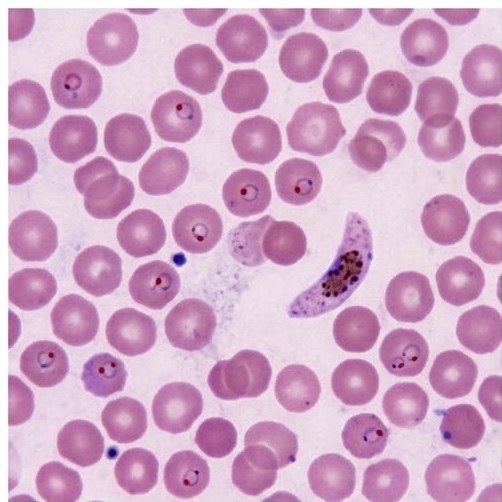
Falciparum: ring forms and a banana-shaped gametocyte
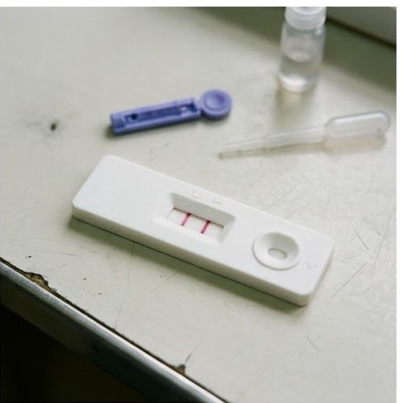
Malaria RDT: control and test lines both positive
Exam trap
Treat for malaria only after a positive test (RDT or film); a negative test means look for another cause.
A child with sickle cell trait is partly protected against severe falciparum malaria; a child with sickle cell disease is at great risk from it.
4. Prevention
Insecticide-treated bed nets · indoor spraying · drain stagnant water
Malaria vaccine (RTS,S or R21) from 5 months, 4 doses, in moderate–high transmission areas (WHO)
Intermittent preventive treatment in pregnancy (sulfadoxine–pyrimethamine) · seasonal chemoprevention where used
Artemisinin-based combination (ACT): artemether–lumefantrine (first line), 6 doses over 3 days (0, 8, 24, 36, 48, 60 h) with milk or fatty food · by weight: 5–14 kg 1 tablet, 15–24 kg 2, 25–34 kg 3, ≥ 35 kg 4 per dose · second line: dihydroartemisinin–piperaquine
Vivax
ACT, then primaquine0.25–0.5 mg/kg daily for 14 days (radical cure) after a G6PD test · not under 6 months
Severe malaria
IV (or IM) artesunate: 3 mg/kg if < 20 kg · 2.4 mg/kg if ≥ 20 kg at 0, 12 and 24 h, then daily · for at least 24 h and until the child can take oral drugs, then a full 3-day ACT · if not available: IM artemether or quinine (20 mg/kg loading, then 10 mg/kg 8-hourly)
Before referral
Rectal artesunate 10 mg/kg (children under 6 years) or IM artesunate, then refer
Supportive
Check glucose (10% glucose 5 ml/kg IV if low) · transfuse if Hb < 4 g/dL, or < 6 g/dL with distress or shock (10 ml/kg packed cells) · treat convulsions (diazepam) · careful fluids (no fluid overload) · antibiotics if bacterial infection is possible · paracetamol
Best next step · a febrile child with a positive malaria test becomes unconscious
Check blood glucose at once and correct it; give IV artesunate without waiting for other results.
Treat convulsions, and consider meningitis: give antibiotics too, and do an LP when it is safe.
Bacterial meningitis is a medical emergency: untreated it kills, and survivors may be left deaf or brain-damaged. Sudan lies in the African meningitis belt with epidemics in the dry season. Treatment follows the WHO 2025 meningitis guidelines.
1. Causes by age
Newborn (< 1 month)
Group B streptococcus, E. coli, Listeria (see 3.6)
1 month – 5 years
Pneumococcus, meningococcus, Hib (rare after vaccination)
Older child
Meningococcus (epidemics: serogroups A, C, W, X) and pneumococcus
Others
TB meningitis (subacute) · viral (enteroviruses, mumps) · cryptococcus in HIV
2. Clinical features
Infants: fever or hypothermia, poor feeding, vomiting, irritability, high-pitched cry, bulging fontanelle, seizures · neck stiffness often absent
Normal CSF: clear, ≤ 5 lymphocytes, protein 0.15–0.4 g/L, glucose about 2/3 of blood glucose (take a blood glucose at the same time). Send Gram stain, culture, latex or PCR; blood culture as well.
Best next step · a drowsy child with signs of raised ICP or a purpuric rash
Do not delay antibiotics: take a blood culture and give ceftriaxone at once; the LP waits.
Delay LP when there is reduced consciousness (GCS < 9) or falling GCS, focal signs, papilloedema, shock, a bleeding disorder or skin infection at the site.
Ceftriaxone100 mg/kg/day IV (once daily or 12-hourly, max 4 g) or cefotaxime, as soon as possible · add ampicillin under 3 months (Listeria) · add vancomycin where penicillin-resistant pneumococcus is common
Duration
Meningococcus 5–7 days · Hib 7–10 days · pneumococcus 10–14 days · unknown cause 10 days · newborn 3 weeks · in epidemics WHO uses ceftriaxone for 5 days
Dexamethasone
0.15 mg/kg IV 6-hourly for 4 days, started with or before the first antibiotic dose (non-epidemic setting) · reduces deafness · not in newborns
Supportive
ABC, treat shock (fluid boluses) · head up 30° · treat seizures · check glucose and sodium (SIADH) · normal maintenance fluids once perfusion is restored · feed early
Contacts
Meningococcus: close contacts get ciprofloxacin single dose (or rifampicin 2 days, or ceftriaxone IM once) · vaccinate in outbreaks
Late: sensorineural deafness (the commonest; hearing test for every survivor), hydrocephalus, epilepsy, cerebral palsy, learning difficulty, limb loss after purpura fulminans
6. Prevention
Vaccines: Hib and pneumococcal conjugate (in the pentavalent and PCV of the EPI) · meningococcal A conjugate (MenAfriVac) and multivalent vaccines in the meningitis belt.
7. Encephalitis
Inflammation of the brain: fever + altered behaviour or consciousness, seizures, focal signs
Causes: herpes simplex (the most important to treat), enteroviruses, measles (acute or SSPE years later), mumps, arboviruses
Measles is a highly contagious RNA virus (paramyxovirus) spread by droplets and air, infectious from 4 days before to 4 days after the rash. It kills through pneumonia, diarrhoea and malnutrition, mainly in unvaccinated and malnourished children. Prevented by measles vaccine (MR) at 9 and 18 months (EPI).
1. Clinical stages
Prodrome (3–4 days)
High fever + the 3 Cs: cough, coryza, conjunctivitis · Koplik spots: grey-white dots on red buccal mucosa opposite the lower molars (pathognomonic), gone when the rash appears
Rash (day 4)
Red maculopapular rash starting behind the ears and on the face, spreading down to the trunk and limbs over 3 days, becoming blotchy · fever peaks with the rash
Recovery
Rash fades in the same order, leaving brown staining and fine peeling · fever falls by day 3 of the rash (persisting fever = complication)
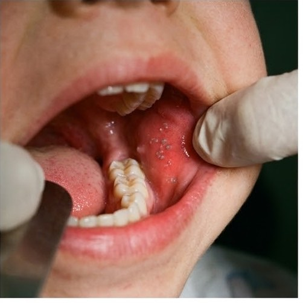
Koplik spots opposite the lower molars
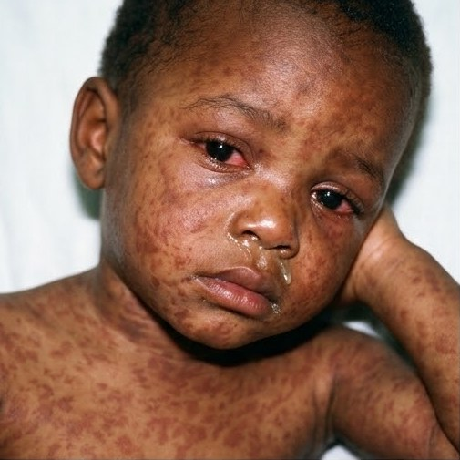
Measles: blotchy rash, red eyes, coryza
2. Complications
Pneumonia (viral or bacterial; the commonest cause of death) · otitis media (commonest) · laryngotracheobronchitis
Eye: corneal ulcer, blindness (vitamin A deficiency)
Acute encephalitis (1 in 1000) · SSPE: fatal degenerative brain disease 7–10 years later (high measles antibody in CSF)
Immune suppression for weeks (TB flares, false-negative Mantoux) · myocarditis
3. Management (WHO, IMCI)
Vitamin A to every child with measles on day 1 and day 2: < 6 m 50,000 IU · 6–11 m 100,000 IU · ≥ 12 m 200,000 IU (third dose after 2–4 weeks if eye signs)
Supportive: fluids, feeding, eye and mouth care (tetracycline eye ointment, gentian violet for mouth ulcers) · antibiotics for pneumonia, ear or eye infection · isolate
Severe complicated measles (clouding of cornea, deep mouth ulcers, pneumonia, not able to drink): admit
Mild fever · post-auricular and occipital nodes · pink rash from the face, gone in 3 days · arthralgia · danger: congenital rubella in pregnancy
Chickenpox
Varicella-zoster virus
Itchy rash in crops: macule → papule → vesicle → crust, all stages together, mainly on the trunk (centripetal), mouth too · infectious until all lesions crust
Roseola infantum
HHV-6
Infant 6–24 months · high fever for 3 days (febrile seizures) · rash appears as the fever falls
Erythema infectiosum
Parvovirus B19
Slapped cheeks, then lacy rash on limbs · aplastic crisis in sickle cell disease · fetal hydrops
Hand, foot and mouth
Coxsackie A
Painful mouth ulcers + oval vesicles on palms and soles · mild
Scarlet fever
Group A streptococcus
Sore throat, fever · fine sandpaper rash in skin folds (Pastia lines) · flushed cheeks with circumoral pallor · strawberry tongue · peeling of fingers · penicillin 10 days (prevents rheumatic fever)
Meningococcaemia
N. meningitidis
Non-blanching purpura, ill child, shock → ceftriaxone now
Tuberculosis (Mycobacterium tuberculosis) is caught from an adult with infectious pulmonary TB, usually in the household. Young children (under 5 years) and those with HIV or malnutrition progress quickly to severe disease (miliary, meningitis). Management follows the WHO 2022 guidelines for children and adolescents.
1. Forms of childhood TB
TB infection
Positive Mantoux or IGRA, no symptoms, normal X-ray → TB preventive treatment
Primary pulmonary TB
Ghon focus + enlarged hilar nodes (primary complex) · nodes may compress a bronchus (wheeze, collapse)
Miliary TB
Blood spread: very ill child, fever, hepatosplenomegaly, tiny nodules all over both lungs, often with meningitis
TB meningitis
Slow onset over 2–3 weeks: irritability, vomiting, headache → neck stiffness, cranial nerve palsy, coma · CSF: lymphocytes, very high protein, low glucose
Lymph node TB
Commonest extrapulmonary form: painless, matted cervical nodes, may discharge (scrofula)
Others
Spine (Pott disease: gibbus, paraplegia) · bone and joint · abdominal (ascites, doughy abdomen) · pericardial
2. When to suspect TB
Cough > 2 weeks, fever, weight loss or failure to thrive (SAM not recovering), night sweats, fatigue
Contact with an adult with TB · pneumonia not responding to antibiotics · a lump in the neck
3. Investigations
Bacteriology
Xpert MTB/RIF Ultra (rapid PCR, also shows rifampicin resistance) on sputum, gastric aspirate, induced sputum, nasopharyngeal aspirate or stool · smear and culture · only 30–40% of children are confirmed
Tuberculin skin test
Mantoux 5 TU intradermal, read at 48–72 h · positive: induration ≥ 10 mm (≥ 5 mm in HIV or SAM) · shows infection, not disease · false negative in SAM, HIV, measles, severe TB
Chest X-ray
Hilar or mediastinal nodes, miliary pattern, consolidation, cavity, effusion
Others
Node biopsy or FNA · CSF in suspected meningitis · HIV test for every child with TB · treatment-decision algorithms (WHO) allow treatment without confirmation
4 months: 2HRZ(E) / 2HR · non-severe = peripheral node TB, or lung TB in one lobe without cavity or miliary pattern, not complicated
Severe pulmonary or other TB
6 months: 2HRZE / 4HR
TB meningitis, bone and joint TB
12 months: 2HRZE / 10HR (or a 6-month intensive regimen) · dexamethasone or prednisolone for 4–8 weeks in TB meningitis and pericarditis
Daily doses
Isoniazid (H) 10 mg/kg · rifampicin (R) 15 mg/kg · pyrazinamide (Z) 35 mg/kg · ethambutol (E) 20 mg/kg · child-friendly dispersible fixed-dose tablets by weight band · pyridoxine with isoniazid in malnourished or HIV-positive children
Drug side effects
Isoniazid: hepatitis, peripheral neuropathy · rifampicin: orange urine and tears, hepatitis, drug interactions · pyrazinamide: hepatitis, arthralgia · ethambutol: optic neuritis (safe at the right dose)
Give treatment under direct observation (DOT) · weigh monthly and adjust doses · test for HIV · treat malnutrition · rifampicin-resistant TB: refer for second-line drugs.
5. Prevention
BCG at birth: protects against TB meningitis and miliary TB in young children, less against lung TB
Contact tracing: screen every child living with an adult with TB
TB preventive treatment for exposed children with no disease (especially < 5 years and HIV-positive): 3HR (3 months isoniazid + rifampicin) or 6H (6 months isoniazid)
Exam trap
Exclude active TB (symptoms, X-ray) before giving preventive treatment, or resistance will develop.
Orange urine on rifampicin is harmless; warn the family.
Chapter 4 · 4.6 HIV in ChildrenTransmission, PMTCT & Diagnosis70
4.6HIV in Children
Most children with HIV are infected from their mother: in pregnancy, at delivery or by breastfeeding. Without treatment, half of infected infants die before age 2. With testing and ART in pregnancy, transmission falls to under 2%. Care follows the WHO consolidated HIV guidelines.
1. Prevention of mother-to-child transmission (PMTCT)
Mother
Test every pregnant woman · lifelong ART (dolutegravir-based) from diagnosis · aim for an undetectable viral load by delivery
Delivery
Avoid prolonged rupture of membranes and unnecessary procedures · caesarean only for obstetric reasons
Infant prophylaxis
Low risk (mother suppressed): nevirapine for 6 weeks · high risk (mother not on ART or high viral load): zidovudine + nevirapine for 6 weeks, nevirapine continued while breastfeeding · cotrimoxazole from 6 weeks until HIV is excluded
Feeding
Exclusive breastfeeding for 6 months, then complementary food, breastfeeding to 12–24 months, while the mother takes ART
2. Diagnosis in children
Under 18 months: nucleic acid test (HIV DNA/RNA PCR) at birth (where used) and 6 weeks, again at 9 months and after breastfeeding stops · antibody tests are not diagnostic (maternal antibody lasts up to 18 months)
18 months and over: antibody tests (two rapid tests) as in adults
Test every child with TB, SAM, recurrent pneumonia, persistent diarrhoea or an HIV-positive mother
Exam trap
A positive HIV antibody test in a 9-month-old may be maternal antibody; a PCR is needed to diagnose infection.
HIV-positive mothers on ART are advised to breastfeed, not to stop.
3. Clinical features suggesting HIV
Failure to thrive, SAM not responding to treatment · persistent diarrhoea
Recurrent or severe pneumonia · Pneumocystis pneumonia (infant 2–6 months, severe hypoxia, few chest signs)
Oral thrush after 6 weeks, or persistent · oesophageal candida
Chapter 4 · 4.6 HIV in ChildrenClinical Features & Treatment71
4. Treatment (WHO)
When
Start ART in every child with HIV, whatever the CD4 count, as soon as possible after diagnosis
First line
Dolutegravir (DTG) + abacavir + lamivudine (dispersible DTG from 4 weeks and 3 kg) · newborns under 4 weeks: zidovudine + lamivudine + raltegravir (or nevirapine), then switch to DTG
Prophylaxis
Cotrimoxazole daily (PCP, toxoplasma, bacterial infections, malaria) · TB screening and isoniazid preventive therapy · all EPI vaccines (no BCG if already symptomatic)
Monitoring
Viral load at 6 and 12 months, then yearly (target undetectable) · growth, development, adherence counselling, disclosure
PCP treatment
High-dose cotrimoxazole IV or oral for 21 days + prednisolone if hypoxic
Exam trap
Treatment failure is most often due to poor adherence; check it before changing drugs.
Abacavir can cause a hypersensitivity reaction; stop and never restart it.
Visceral leishmaniasis (kala-azar) is caused by Leishmania donovani, spread by the sandfly (Phlebotomus). Eastern Sudan (Gedaref, Sennar, Blue Nile) is one of the main foci in the world, and children are most often affected. Untreated, it is almost always fatal. Treatment follows the WHO guidelines for East Africa (2026 update).
1. Clinical features
Prolonged fever (> 2 weeks), often with two peaks a day · weight loss, wasting
Pallor, bleeding (epistaxis, gums) · darkening of the skin ("black fever")
Labs: pancytopenia (anaemia, leucopenia, low platelets) · high ESR · hypergammaglobulinaemia with low albumin
Deaths from bleeding, secondary infection (pneumonia, TB), severe anaemia, malnutrition
HIV co-infection: atypical, more relapses
2. Diagnosis
Clinical case
Fever > 2 weeks + splenomegaly (or lymphadenopathy) + weight loss in a person from an endemic area
Serology
rK39 rapid test (first test) · DAT (direct agglutination) · stay positive after cure, so they cannot diagnose relapse
Parasitology
Leishman–Donovan bodies in an aspirate: spleen (most sensitive, ~95%; risk of bleeding — check platelets and clotting), bone marrow (~70%), lymph node · needed for relapse and test of cure
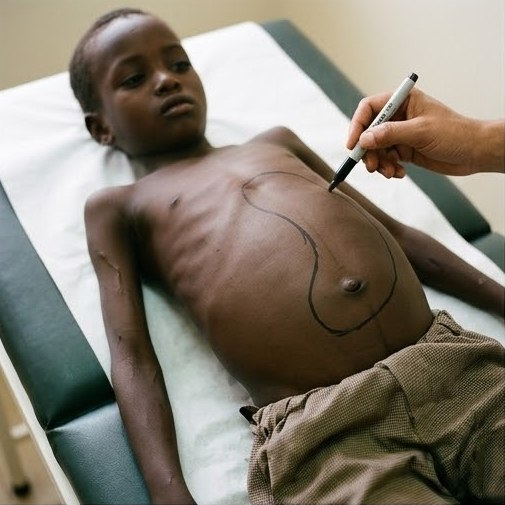
Kala-azar: massive spleen, wasting
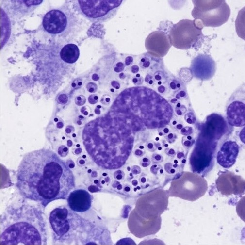
LD bodies in a marrow macrophage
3. Treatment (WHO, East Africa)
Primary VL, age ≥ 4 years
Paromomycin20 mg/kg/day IM + oral miltefosine (dose by weight band), both for 14 days · not in pregnancy
Primary VL, others
Sodium stibogluconate (SSG)20 mg/kg/day IM or IV + paromomycin15 mg/kg/day IM for 17 days · ECG (SSG cardiotoxicity), pancreatitis, renal and hearing checks (paromomycin)
Severe disease, relapse, HIV, very young
Liposomal amphotericin B (AmBisome) by IV infusion (total about 30 mg/kg) · with miltefosine in HIV co-infection
Supportive
Nutrition (RUTF), blood transfusion, treat infections (TB, pneumonia), treat malaria, iron and folate
Cure: no fever, spleen smaller, weight gain, Hb rising · follow up at 6 months for relapse
Post-kala-azar dermal leishmaniasis (PKDL): pale or raised papules starting around the mouth, spreading to face and body, during or after treatment · most heal alone · severe or lasting: paromomycin + miltefosine
Prevention: insecticide-treated bed nets, early diagnosis and treatment
Typhoid fever is caused by Salmonella Typhi (and Paratyphi A, B, C), spread by the faeco-oral route from cases and carriers through food and water. Incubation about 2 weeks. Increasing drug resistance has changed treatment: azithromycin and ceftriaxone are now the main drugs (WHO).
1. Clinical features
Week 1
Fever rising step-wise to 39–40 °C, headache, malaise, abdominal pain, dry cough · diarrhoea (young children) or constipation (older)
Week 2
Sustained high fever, toxic, apathetic ("typhoid state") · coated tongue · relative bradycardia · tender soft splenomegaly, hepatomegaly · rose spots on the trunk (hard to see on dark skin)
Non-specific fever, vomiting, diarrhoea, like gastroenteritis or sepsis
2. Investigations
Blood culture: the test of choice in the first week (positive in 40–60%) · bone marrow culture is the most sensitive (positive even after antibiotics) · stool and urine culture from the second week
Widal test: poor value in endemic areas (false positives and negatives); never diagnose typhoid on Widal alone
3. Treatment (WHO)
Uncomplicated
Oral azithromycin 20 mg/kg once daily (max 1 g) for 7 days · cefixime where sensitive
Severe or complicated
Ceftriaxone 80 mg/kg/day IV (max 4 g) for 10–14 days · meropenem for extensively drug-resistant typhoid · dexamethasone for typhoid encephalopathy or shock
Perforation
Resuscitation, broad-spectrum antibiotics (add metronidazole), urgent surgery
Prevention
Safe water, sanitation, hand washing, food hygiene · typhoid conjugate vaccine (TCV), one dose from 6 months
These diseases are prevented by the EPI (pentavalent: diphtheria, tetanus, pertussis, hepatitis B, Hib; polio vaccines). They return wherever vaccination coverage falls, so every case is notified to the EPI.
1. Diphtheria
Corynebacterium diphtheriae · exotoxin damages heart and nerves · droplets · incubation 2–5 days
Faucial (pharyngeal): low fever, sore throat, grey adherent membrane over tonsils and palate that bleeds when removed · bull neck (nodes and oedema) · nasal: bloody discharge · laryngeal: stridor, obstruction
Complications: myocarditis (week 2–3; arrhythmia, heart failure: the main cause of death) · neuritis: palatal palsy (nasal regurgitation), eye accommodation, limbs
Treat on clinical suspicion: throat swab culture
Diphtheria antitoxin (DAT) at once (20,000–100,000 units by severity) · penicillin (or erythromycin) for 14 days
Airway support (tracheostomy for laryngeal) · bed rest · ECG monitoring · isolate
Contacts: throat swab, erythromycin, vaccine
2. Pertussis (whooping cough)
Bordetella pertussis · most severe under 6 months (before 3 vaccine doses)
Catarrhal (1–2 weeks, most infectious): cold-like · paroxysmal (2–6 weeks): bouts of coughing, inspiratory whoop, vomiting after cough, red face · infants: apnoea and cyanosis instead of whoop · convalescent: weeks to months ("100-day cough")
CBC: marked lymphocytosis · nasopharyngeal swab PCR or culture
Azithromycin10 mg/kg on day 1, then 5 mg/kg days 2–5 (under 1 month: 10 mg/kg daily for 5 days) · or erythromycin 14 days · shortens infectivity, not the cough
Admit infants under 6 months: oxygen, suction, small frequent feeds, apnoea monitoring
Same antibiotic for household contacts
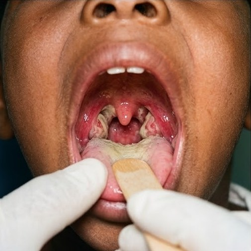
Diphtheria: grey membrane on the tonsils
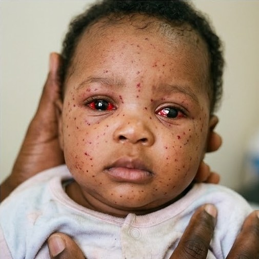
Pertussis: subconjunctival haemorrhages
3. Tetanus (older children)
Clostridium tetani spores in wounds (soil, rusty nails, burns, ear infection) · toxin blocks inhibitory nerves · incubation 3–21 days · neonatal tetanus: see 3.6
Trismus (lockjaw), risus sardonicus, neck and back stiffness, opisthotonus, board-like abdomen · painful spasms set off by noise, light or touch · fully conscious, no fever at first
Poliovirus (enterovirus) · faeco-oral · most infections silent · 1% get paralytic polio: fever, muscle pain, then asymmetric flaccid paralysis of the legs, no sensory loss, absent reflexes, later wasting
Bulbar polio: swallowing and breathing paralysis · CSF: lymphocytes
No antiviral: rest, avoid injections, physiotherapy, ventilation if needed
Acute flaccid paralysis (AFP) surveillance: every child under 15 years with sudden weakness → notify and send 2 stool samples 24 h apart within 14 days of onset
Prevention: OPV and IPV (EPI) · vaccine-derived poliovirus where coverage is low
Intestinal parasites cause anaemia, poor growth, malnutrition and poor school performance. WHO recommends regular deworming of preschool and school children where worms are common: albendazole 400 mg (200 mg at 12–23 months) or mebendazole 500 mg once, every 6–12 months.
1. Worms (helminths)
Worm
Spread · features
Treatment
Ascaris (roundworm)
Eggs swallowed · larvae pass through the lungs (Löffler syndrome: cough, wheeze, eosinophilia) · worms in stool or vomit · bowel obstruction (worm bolus), biliary obstruction, malnutrition
Albendazole 400 mg once
Hookworm
Larvae through the skin of bare feet · ground itch · blood sucking → iron deficiency anaemia, low protein, eosinophilia
Albendazole 400 mg once · iron
Enterobius (pinworm)
Hand to mouth · night-time perianal itch, poor sleep, vulvovaginitis · sticky tape test
Albendazole or mebendazole, repeat after 2 weeks, treat the whole family
Hymenolepis nana, Taenia
Dwarf tapeworm (person to person) · beef or pork tapeworm (undercooked meat; pork → cysticercosis, seizures)
Praziquantel
Strongyloides
Skin penetration · diarrhoea, larva currens · massive hyperinfection with steroids or HIV
Ivermectin
2. Protozoa
Giardia lamblia
Cysts in water · persistent watery, greasy, foul-smelling diarrhoea, bloating, malabsorption and failure to thrive · cysts or trophozoites in stool, stool antigen · metronidazole 15 mg/kg/day in 3 doses for 5–7 days or tinidazole 50 mg/kg once
Entamoeba histolytica
Amoebic dysentery: bloody mucoid stool with tenesmus · amoebic liver abscess (fever, tender liver, right shoulder pain) · metronidazole 30–50 mg/kg/day in 3 doses for 7–10 days, then a luminal drug (paromomycin or diloxanide)
Key numbers
400 mg
Albendazole single dose (≥ 2 years)
200 mg
Albendazole at 12–23 months
2 weeks
Repeat treatment for pinworm
40 mg/kg
Praziquantel single dose
3. Hydatid disease
Echinococcus granulosus eggs from dog faeces · cysts in the liver (commonest) and lung
Often silent; a mass or cough · rupture → anaphylaxis and spread
Ultrasound (cyst with daughter cysts), CT, serology
Albendazole + surgery or PAIR (puncture, aspiration, injection, re-aspiration)
Exam trap
Haematuria in a schoolboy who swims in canals is S. haematobium until proved otherwise: examine midday urine.
Portal hypertension from S. mansoni has normal liver function; cirrhosis does not.
Larvae (cercariae) from snails in fresh water enter the skin during swimming, washing or farming (Gezira irrigation canals) · swimmer's itch, then fever and eosinophilia (Katayama fever) · adult worms live in veins and lay eggs that cause granulomas and fibrosis.
S. haematobium (urinary)
S. mansoni (intestinal)
Main features
Terminal haematuria, dysuria, frequency · later bladder fibrosis, calcification, hydronephrosis, bladder cancer
Abdominal pain, bloody diarrhoea · periportal fibrosis → portal hypertension: splenomegaly, varices, haematemesis · liver function stays normal
Egg
Terminal spine · in midday urine (filtered)
Lateral spine · in stool (Kato–Katz)
Imaging
Ultrasound: thick bladder wall, hydronephrosis
Ultrasound: periportal ("pipe-stem") fibrosis
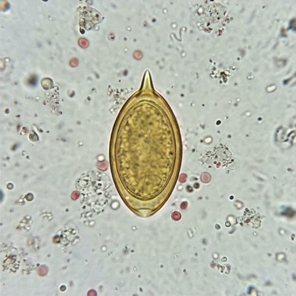
S. haematobium: terminal spine (urine)
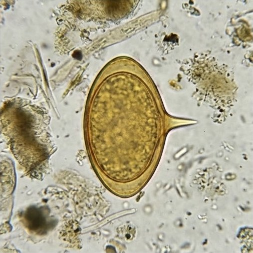
S. mansoni: lateral spine (stool)
Treatment: praziquantel 40 mg/kg single dose (from 2 years; WHO also allows younger children) · repeat after 2–4 weeks if needed
Prevention: avoid canal water, latrines, snail control, school mass treatment with praziquantel
Diarrhoea is the passage of 3 or more loose or watery stools in 24 hours (or more often than is normal for the child). Frequent passing of formed stools, or the soft stools of a breastfed baby, is not diarrhoea. Diarrhoea is a leading cause of death under 5 years, and the killer is dehydration, not the infection. Management follows IMCI and the WHO 2024 guideline on pneumonia and diarrhoea.
1. Types of diarrhoea (IMCI)
Acute watery diarrhoea
Lasts less than 14 days · the main danger is dehydration · most are viral
Dysentery
Visible blood in the stool · the main dangers are damage to the gut wall, sepsis and malnutrition
Persistent diarrhoea
Starts acutely and lasts 14 days or more · the main danger is malnutrition (see 5.3)
Diarrhoea with SAM
Dehydration is hard to assess and rehydration is different (ReSoMal, see 2.2)
2. Causes
Organism
Clue
Viruses (most cases)
Rotavirus
The commonest cause of severe dehydrating diarrhoea in children under 2 · vomiting first, then watery stools, low fever · prevented by vaccine
Norovirus, adenovirus 40/41
Outbreaks · short illness · mild fever
Bacteria
E. coli: enterotoxigenic (ETEC)
The commonest bacterial cause of watery diarrhoea (and traveller's diarrhoea)
Shigella
The commonest cause of dysentery · high fever, tenesmus · may cause convulsions
E. coli O157:H7 (enterohaemorrhagic)
Bloody diarrhoea followed by haemolytic uraemic syndrome
Campylobacter, non-typhoid Salmonella
Fever, abdominal pain, watery then bloody · Campylobacter → later Guillain–Barré syndrome
Vibrio cholerae
Profuse painless "rice-water" stools, rapid severe dehydration · outbreaks
Parasites
Giardia, Entamoeba histolytica, Cryptosporidium
Giardia: watery, offensive, bloating · amoeba: bloody with mucus, older children · Cryptosporidium: severe in HIV
Secretory diarrhoea: toxins (cholera, ETEC) make the gut secrete salt and water · large volume · continues when fasting
Inflammatory (invasive) diarrhoea: organisms invade the wall (Shigella, Campylobacter, amoeba) → blood, mucus, pus cells in the stool, fever
Osmotic diarrhoea: unabsorbed sugar holds water in the gut (lactose after rotavirus, sorbitol) · stops when fasting · acidic stool
Why ORS works: glucose and sodium are absorbed together (co-transport), and water follows, even when the gut is damaged
Exam trap
The commonest cause of acute gastroenteritis in children is a virus (rotavirus), not bacteria; rotavirus stools are watery, not bloody.
The main cause of death in acute diarrhoea is dehydration.
4. History
Duration (≥ 14 days = persistent) · blood in the stool (dysentery) · number of stools and vomits · urine output (last urine) · fluids and feeds given, drugs
Fever, cough (other infections) · contacts, water source · vaccines (rotavirus, measles) · nutrition and growth
5. Classification of dehydration (IMCI)
Look at the child, offer a drink, and do the skin pinch on the abdomen halfway between the umbilicus and the side, for 1 second, then release. Two or more signs in a row decide the class.
Sign
Severe dehydration
Some dehydration
No dehydration
General condition
Lethargic or unconscious
Restless, irritable
Well, alert
Eyes
Sunken
Sunken
Normal
Offered a drink
Not able to drink or drinks poorly
Drinks eagerly, thirsty
Drinks normally
Skin pinch goes back
Very slowly (longer than 2 seconds)
Slowly
Immediately
Treatment
Plan C (IV fluids)
Plan B (ORS in the health facility)
Plan A (home)
Other signs: dry mouth, no tears, sunken fontanelle, fast weak pulse, cold hands, capillary refill > 3 s, deep (acidotic) breathing, little urine
Shock (cold hands + capillary refill > 3 s + weak fast pulse, or lethargy) is treated first (ETAT)
Fluid deficit by weight loss: infants: mild 5%, moderate 10%, severe 15% · older children: 3%, 6%, 9%
Deficit (ml) = % dehydration × weight (kg) × 10 · e.g. 6% in a 20 kg child = 1200 ml
Chapter 5 · 5.1 Acute Gastroenteritis & DehydrationAssessment of Dehydration82
6. Investigations
None are needed in simple watery diarrhoea with no or some dehydration
Severe dehydration or IV fluids: serum sodium, potassium, urea and creatinine, blood glucose, blood gas (acidosis) · CBC
Stool: microscopy for blood, pus cells, amoeba, Giardia · culture in dysentery, outbreaks (cholera) or very ill children · malaria test if fever
Exam trap
Shock is a sign of severe dehydration; a child with only dry mouth, no tears and a sunken fontanelle has some (moderate) dehydration.
In SAM the skin pinch and sunken eyes are unreliable (wasting gives the same signs); diagnose dehydration from the history of watery stools and recent change in look.
Hypernatraemic dehydration hides: the skin feels doughy and the child looks less dry than the child really is.
7. The four rules of home treatment (Plan A, no dehydration)
1. Extra fluid
ORS after each loose stool: under 2 years 50–100 ml · 2 years or more 100–200 ml · plus breast milk, soup, rice water, clean water · give 2 packets of ORS to take home
2. Zinc
under 6 months 10 mg · 6 months or more 20 mg once daily for 10–14 days · shortens the illness and prevents new episodes for 2–3 months
3. Continue feeding
Never stop breastfeeding · usual food, small frequent meals · an extra meal a day for 2 weeks after
4. When to return
At once if: not able to drink or breastfeed, becomes sicker, fever, blood in the stool, drinking poorly
8. Plan B (some dehydration): ORS in the health facility
ORS 75 ml/kg over 4 hours (give more if the child wants more) · by spoon or cup, a spoonful every 1–2 minutes; not by bottle
Vomiting: wait 10 minutes, then continue more slowly · continue breastfeeding · give zinc
Reassess after 4 hours: no dehydration → Plan A · still some → repeat Plan B and start food · severe → Plan C
Persistent vomiting, refusal or abdominal distension: ORS by nasogastric tube (20 ml/kg/hour) or IV
Chapter 5 · 5.1 Acute Gastroenteritis & DehydrationTreatment Plans A, B & C83
10. Plan C (severe dehydration): IV fluids at once
Ringer lactate 100 ml/kg (or 0.9% saline)
First 30 ml/kg in
Then 70 ml/kg in
Infants under 12 months
1 hour
5 hours
Children 12 months and older
30 minutes
2½ hours
Repeat the first 30 ml/kg once if the radial pulse is still weak · reassess every 1–2 hours; if hydration is not improving, give the IV drip faster
Give ORS 5 ml/kg/hour as soon as the child can drink (after 3–4 hours in infants, 1–2 hours in children)
Reclassify after 6 hours (infant) or 3 hours (child) and choose Plan A, B or C · no IV possible: ORS by NGT 20 ml/kg/hour for 6 hours or refer urgently
ETAT · shock, SAM and the very young
Shock with diarrhoea: Ringer lactate 20 ml/kg as fast as possible, then continue Plan C.
SAM: no Plan C unless in shock (then 15 ml/kg over 1 hour of half-strength Darrow's with 5% glucose or Ringer lactate with 5% glucose); otherwise ReSoMal by mouth (2.2).
11. Drugs: what to give and what not to give
Antibiotics
Not for watery diarrhoea (WHO 2024) · give only for dysentery, suspected cholera with severe dehydration, or another infection (pneumonia, otitis)
Dysentery
Ciprofloxacin 15 mg/kg twice daily for 3 days · severe or young infant: ceftriaxone 50–80 mg/kg once daily for 3 days · review after 2 days
Cholera
Azithromycin 20 mg/kg single dose (or doxycycline in older children) · rehydration is the life-saving treatment
Amoebiasis, giardiasis
Metronidazole 10 mg/kg three times daily for 5 days (amoeba; only if seen on microscopy) · 5 mg/kg three times daily for 5 days (Giardia)
Children dehydrate faster than adults: more of their body is water, they need more water per kg, they lose more through the skin (large surface area for their weight), their kidneys concentrate urine poorly, and they depend on others to drink. IV fluids are given as three parts: resuscitation (shock), deficit and maintenance, plus ongoing losses.
1. Body water
Age
Total body water
Preterm
About 80% of weight
Term newborn
About 75%
1 year to adult
About 60%
Two thirds inside cells (main ion: potassium), one third outside cells (main ion: sodium)
Sodium decides the water shift between them: serum sodium is the main part of plasma osmolality
2. Maintenance fluid (Holliday–Segar)
Body weight
Fluid per 24 hours
Per hour
First 10 kg
100 ml/kg
4 ml/kg/h
Second 10 kg (11–20 kg)
+ 50 ml/kg
+ 2 ml/kg/h
Each kg above 20
+ 20 ml/kg
+ 1 ml/kg/h
16 kg: 1000 + (6 × 50) = 1300 ml/day
30 kg: 1000 + 500 + (10 × 20) = 1700 ml/day
Newborns: their own scale by day of life (3.3)
Fluid type: isotonic fluid with glucose: 0.9% sodium chloride with 5% glucose (AAP 2018) ± potassium 20 mmol/L once urine is passed
Hypotonic fluids (0.18% saline) cause hyponatraemia and brain swelling
3. Deficit and ongoing losses
Deficit (ml) = % dehydration × weight (kg) × 10 · iso- or hyponatraemic: give deficit + maintenance over 24 hours · hypernatraemic: over 48 hours
Ongoing losses: add about 10 ml/kg for each watery stool and 2 ml/kg for each vomit (or ORS as in Plan A)
Shock first: 0.9% saline or Ringer lactate 20 ml/kg fast, repeat if needed (10 ml/kg in heart disease or DKA) · bolus volumes are not taken from the deficit
Monitor: weight, input and output (urine ≥ 1 ml/kg/h), sodium and glucose at least daily on IV fluids
Exam trap
Holliday–Segar is for maintenance only; a dehydrated child needs the deficit as well.
Reduce maintenance (about two thirds) when ADH is high: meningitis, pneumonia, bronchiolitis, after surgery, heart failure, kidney failure.
Danger of fast correction: brain cells have made extra solutes to protect themselves; if sodium falls fast, water rushes in → cerebral oedema and seizures
Treat shock first, then give the deficit + maintenance over 48 hours with 0.9% sodium chloride with 5% glucose (NICE) · lower sodium by no more than 10–12 mmol/L per 24 hours (0.5 mmol/L per hour) · check sodium every 4–6 hours
Seizure during correction: slow the fluids, give 3% saline, check calcium and glucose
6. Hyponatraemia (sodium < 135 mmol/L)
Causes: diarrhoea replaced with water, hypotonic IV fluids, SIADH (meningitis, pneumonia), nephrotic syndrome, heart failure, adrenal insufficiency (with high potassium)
Features: nausea, headache, lethargy, seizures and coma when < 120 mmol/L or falling fast
Seizures or coma: 3% sodium chloride 3–5 ml/kg over 15–30 minutes (raises sodium by 3–5 mmol/L), repeat until seizures stop
Then raise sodium no more than 8–10 mmol/L in 24 hours (osmotic demyelination) · dehydration: isotonic fluid · SIADH: fluid restriction
Exam trap
Drowsiness out of proportion to the dehydration signs suggests hypernatraemic dehydration.
Shock comes early in hyponatraemic and late in hypernatraemic dehydration.
Haematocrit is raised (haemoconcentration) in dehydration, not low.
7. Calcium and acid–base
Hypocalcaemia: tetany, carpopedal spasm, laryngospasm, seizures, long QT · after correcting acidosis (ionised calcium falls) · calcium gluconate 10% 0.5 ml/kg (max 20 ml) slowly IV with ECG monitoring; never mixed with bicarbonate
Hypomagnesaemia: hypocalcaemia that does not correct
Metabolic acidosis (diarrhoea, shock, DKA, kidney failure): deep rapid (Kussmaul) breathing · treat the cause with fluids · bicarbonate rarely needed
Metabolic alkalosis with low chloride and low potassium: vomiting (pyloric stenosis, 5.4)
Best next step
Potassium 7.2 mmol/L with peaked T waves → IV calcium gluconate first, then shift potassium into cells (salbutamol, insulin with glucose).
Low potassium in a dehydrated child with no urine yet → rehydrate first; add potassium once urine is passed.
Persistent diarrhoea starts as acute diarrhoea and lasts 14 days or more; it usually follows an infection and leads to malnutrition. Chronic diarrhoea lasts more than 4 weeks or keeps coming back, usually from a non-infectious cause (malabsorption, food intolerance).
1. Persistent diarrhoea (IMCI)
Causes
Damaged gut lining after infection → secondary lactose intolerance · continuing infection (Giardia, Cryptosporidium, Shigella) · malnutrition, HIV, zinc deficiency · early animal milk
Severe persistent diarrhoea
Persistent diarrhoea with any dehydration (or a young infant) → treat dehydration and refer / admit
Persistent diarrhoea (no dehydration)
Treat at home: continue breastfeeding · replace half of animal milk with yoghurt or porridge, or limit animal milk to 50 ml/kg/day · 6 small meals a day · zinc 10–14 days · vitamin A · multivitamin · review in 5 days
Look for
SAM (2.2) · HIV test · stool for Giardia, amoeba, blood · other infections (pneumonia, urinary infection)
2. Two kinds of diarrhoea
Osmotic
Secretory
Mechanism
Unabsorbed sugar draws water
Gut secretes salt and water
When fasting
Stops
Continues
Stool
Acidic (pH < 5.5), reducing substances positive, sore red buttocks
Large volume, pH > 6, high sodium
Examples
Lactose intolerance, laxatives
Cholera, ETEC, neuroblastoma (VIP)
3. Causes of chronic diarrhoea by clue
Well toddler, normal growth
Toddler's diarrhoea (chronic non-specific diarrhoea): loose stools with undigested food (peas and carrots), only by day · too much juice · normal growth · resolves by school age; reassure, cut juice
Stool: microscopy for ova, cysts (Giardia), blood, fat globules · pH and reducing substances (sugar malabsorption) · calprotectin (gut inflammation)
Blood: CBC (iron or folate deficiency anaemia), albumin, ESR, CRP, electrolytes · tTG-IgA with total IgA (coeliac) · HIV test · sweat test if steatorrhoea
Endoscopy with biopsy when coeliac disease or IBD is likely
An immune (T-cell) reaction to gluten in genetically prone people (HLA-DQ2, DQ8) damages the small-bowel lining: villous atrophy, crypt hyperplasia and many intraepithelial lymphocytes. Gluten is in wheat, barley and rye; rice and maize are safe.
Classic (6 months–2 years)
Starts some months after wheat is introduced · chronic diarrhoea with pale, bulky, offensive stools (steatorrhoea) · abdominal distension with wasted buttocks and limbs · failure to thrive, irritability, anorexia
Older child
Short stature, iron deficiency anaemia not responding to iron, delayed puberty, abdominal pain, constipation, mouth ulcers, osteoporosis, raised liver enzymes · dermatitis herpetiformis (itchy blisters)
At-risk groups (screen)
Type 1 diabetes, Down, Turner and Williams syndromes, autoimmune thyroiditis, IgA deficiency, first-degree relatives
ESPGHAN 2020 · diagnosis of coeliac disease
Test while the child still eats gluten: tTG-IgA with total IgA (IgA deficiency gives a false negative; then use IgG tests).
tTG-IgA ≥ 10 times the upper limit and positive EMA in a second sample → diagnosis without biopsy.
Lower positive tTG → duodenal biopsy (at least 4 from the duodenum and 1 from the bulb).
Treatment: a lifelong strict gluten-free diet (dietitian) · correct iron, folate, calcium and vitamin D · symptoms improve in weeks; tTG falls within a year (checks adherence) · untreated disease raises the risk of small-bowel lymphoma.
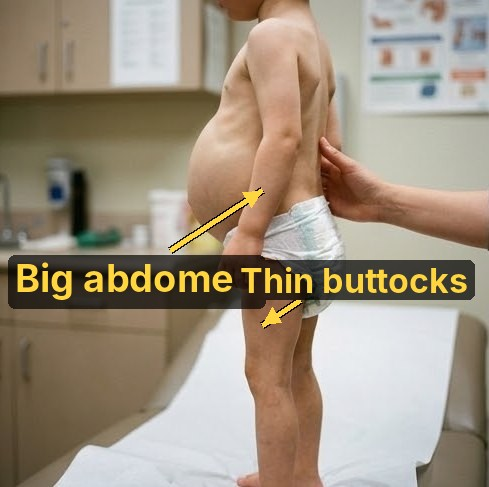
Coeliac disease: distended abdomen, thin limbs and buttocks
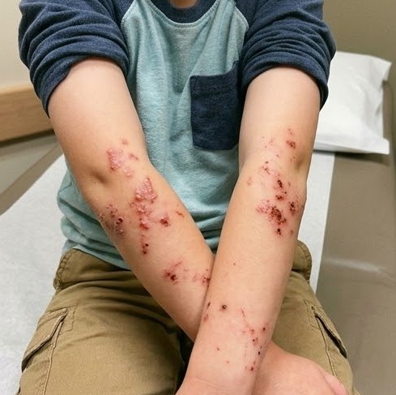
Dermatitis herpetiformis: itchy blisters on the extensor surfaces
Key numbers
≥ 14 days
Persistent diarrhoea
> 4 weeks
Chronic diarrhoea
< 5.5
Acidic stool pH (sugar malabsorption)
≥ 10 × ULN
tTG-IgA for no-biopsy diagnosis
6–8 weeks
Exclusive enteral nutrition (Crohn)
2–4 weeks
Lactose-free formula after GE
3–5 years
Most outgrow cow's milk allergy
6. Lactose intolerance
Secondary (common): the lactase enzyme on damaged villi is lost after gastroenteritis (rotavirus), Giardia, SAM, coeliac disease · temporary
Primary: congenital (very rare) or late-onset in older children and adults
Unabsorbed lactose is fermented → watery, frothy, acidic stools, gas, distension, colic, sore red buttocks · worse after milk
Stool pH < 5.5 and reducing substances positive · hydrogen breath test (older children)
Continue breastfeeding · formula-fed: lactose-free formula for 2–4 weeks, then back to normal milk · yoghurt is tolerated
Bloody diarrhoea with mucus, urgency, tenesmus · less weight loss
Complications
Strictures, fistulae, abscess, obstruction
Toxic megacolon, colon cancer (long term)
Biopsy
Granulomas, cobblestone mucosa
Crypt abscesses
Both: raised CRP, ESR, platelets and faecal calprotectin, low albumin and Hb · extra-intestinal: arthritis, uveitis, erythema nodosum · diagnosis by colonoscopy with biopsy · treatment by a specialist: Crohn: exclusive enteral nutrition first (6–8 weeks) or steroids, then azathioprine, anti-TNF; UC: aminosalicylates (mesalazine), steroids for flares.
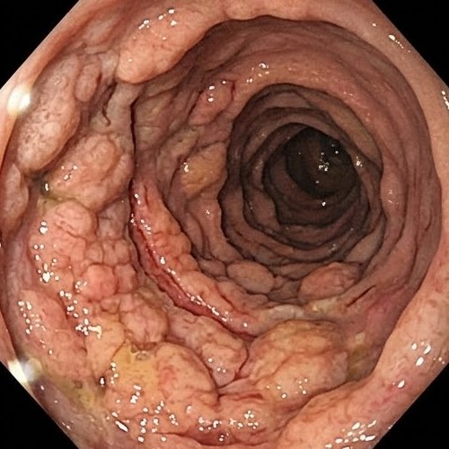
Crohn: cobblestone mucosa
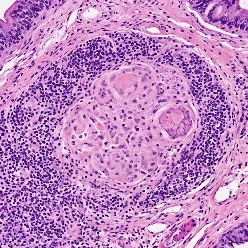
Crohn biopsy: granuloma
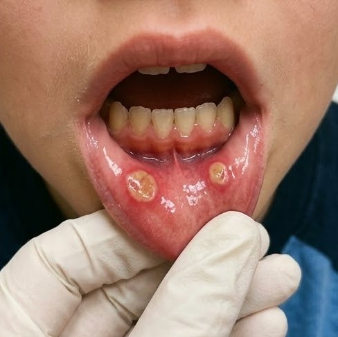
Aphthous ulcers (Crohn)
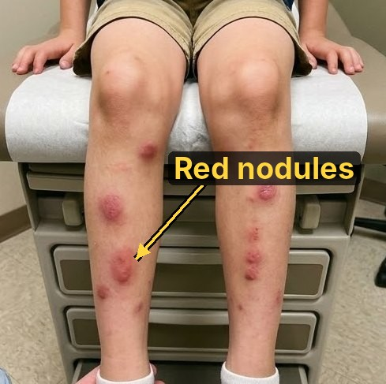
Erythema nodosum
8. Cow's milk protein allergy
Who
Infants, usually in the first months, after formula or cow's milk starts (rarely through breast milk) · family history of allergy
Features
Gut: vomiting, reflux, diarrhoea, blood-streaked mucoid stools in a well baby (proctocolitis), poor weight gain · skin: eczema, urticaria · chest: wheeze · rarely anaphylaxis
Diagnosis
Elimination of cow's milk for 2–4 weeks with improvement, then re-introduction (challenge) brings symptoms back · specific IgE or skin-prick test only for immediate reactions
Treatment
Formula-fed: extensively hydrolysed formula (amino-acid formula if severe) · breastfed: continue breastfeeding, mother avoids all dairy and takes calcium · not goat's milk; soy milk not under 6 months · most outgrow it by 3–5 years (re-challenge at 9–12 months)
9. Giardiasis
Giardia lamblia cysts in water and food · flattens the villi · watery, offensive, greasy stools, bloating, cramps, no blood, no fever · weight loss and persistent diarrhoea
Stool microscopy for cysts or trophozoites (3 samples raise the yield) or stool antigen · treatment: metronidazole 5 mg/kg three times daily for 5 days (or tinidazole single dose)
Exam trap
Lactose intolerance is an enzyme deficiency (sugar); cow's milk allergy is an immune reaction to protein. A lactose-free formula does not help cow's milk allergy.
Blood in the stool of a well, thriving breastfed infant is usually cow's milk protein proctocolitis (from the mother's diet) or an anal fissure, not infection.
Chapter 5 · 5.4 The Vomiting InfantApproach & Gastro-oesophageal Reflux90
5.4The Vomiting Infant
Most vomiting in infants is harmless reflux or part of an infection (gastroenteritis, urinary infection, otitis, meningitis). The colour of the vomit is the first clue: green (bilious) vomiting means obstruction below the duodenal papilla and is a surgical emergency until proven otherwise.
1. Causes by clue
Newborn, bilious
Malrotation with volvulus, duodenal atresia (double bubble, Down syndrome), jejunal atresia, meconium ileus, Hirschsprung disease, NEC (3.3)
Nil by mouth, nasogastric tube on free drainage, IV fluids, surgical review, then an upper GI contrast study (malrotation) the same day.
2. Gastro-oesophageal reflux and reflux disease
Reflux (GOR) is normal in infants: short abdominal oesophagus, liquid feeds, lying flat · effortless spitting after feeds, peaks at 4 months, gone by 12–18 months · baby is happy and growing ("happy spitter")
Reflux disease (GORD): reflux with complications: poor weight gain, feed refusal, crying and arching (oesophagitis), haematemesis, iron deficiency, aspiration pneumonia, wheeze, apnoea · Sandifer syndrome (neck twisting)
More common in cerebral palsy, Down syndrome, preterm, after oesophageal atresia repair
Diagnosis is clinical · tests only for complications or doubt: 24-hour pH-impedance study (best test), endoscopy with biopsy (oesophagitis) · barium meal to exclude malrotation, not to diagnose reflux
Treatment (NASPGHAN–ESPGHAN 2018): reassure · avoid overfeeding, smaller frequent feeds · thickened feeds · trial of extensively hydrolysed formula 2–4 weeks (cow's milk allergy mimics reflux) · PPI (omeprazole) 4–8 weeks only for proven oesophagitis · no prokinetics
Sleep on the back (supine) despite reflux · fundoplication for failed medical treatment with severe complications
Chapter 5 · 5.4 The Vomiting InfantPyloric Stenosis & Malrotation91
3. Infantile hypertrophic pyloric stenosis
Thickening of the pyloric muscle blocks the stomach outlet. Commonest in first-born boys (male : female 4 : 1), with a family history · erythromycin or azithromycin in the first 2 weeks raises the risk.
Vomiting
Starts at 2–8 weeks (peak 3–6 weeks) · projectile, after every feed, never bilious (the block is above the duodenum) · may contain altered blood · baby is hungry right after
Examination
Dehydration, weight loss · visible peristalsis from left to right across the upper abdomen · olive-shaped mass right of the epigastrium, felt during a test feed · constipation (little reaches the gut) · may have unconjugated jaundice
Blood gas
Hypochloraemic, hypokalaemic metabolic alkalosis (loss of acid from the stomach) · low sodium in late cases · paradoxical acid urine
Imaging
Ultrasound is the test of choice: muscle ≥ 3 mm thick, canal ≥ 15 mm long · barium meal (if no ultrasound): string sign, shoulder sign
Treatment
Not an emergency operation: first correct dehydration and alkalosis with 0.9% saline + 5% glucose, add KCl once urine is passed · NGT · then Ramstedt pyloromyotomy (open or laparoscopic) · feeds within hours · cure is complete
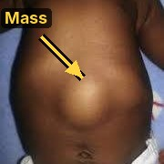
Mass in the upper abdomen
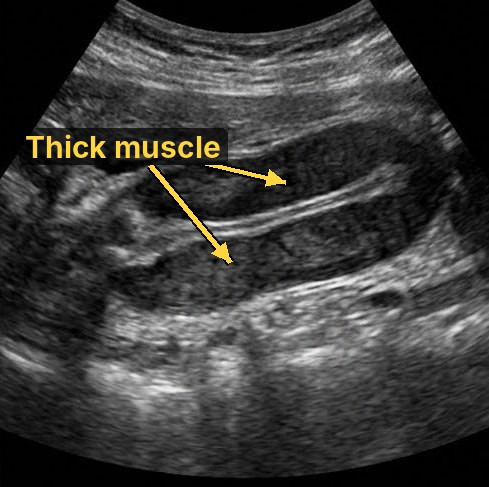
Ultrasound, long axis: thick, long muscle
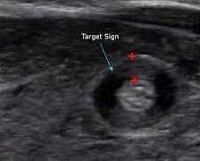
Ultrasound, cross-section: target sign
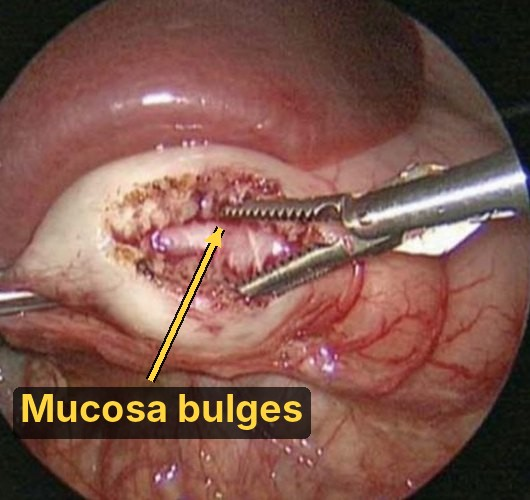
Pyloromyotomy: muscle split, mucosa intact
4. Malrotation with midgut volvulus
Gut fails to rotate and fix normally in fetal life → narrow mesentery twists around the superior mesenteric artery → midgut ischaemia within hours
Usually in the first month: sudden bilious vomiting in a baby who fed well · later distension, tenderness, blood per rectum, shock (necrotic gut)
Abdominal X-ray may be normal · upper GI contrast study is the test of choice: duodenojejunal flexure right of the midline, corkscrew duodenum · ultrasound: whirlpool sign
Resuscitate, NGT, antibiotics → emergency laparotomy: untwist the gut, Ladd procedure, remove dead bowel (risk of short bowel)
Exam trap
Pyloric stenosis gives metabolic alkalosis with low potassium; acidosis with high potassium in a vomiting infant points to salt-losing CAH.
In pyloric stenosis the infant is hungry, the vomit is not bile-stained and the stools are small and infrequent (constipation), not diarrhoea.
Intussusception is the telescoping of one part of the bowel into the next, usually the ileum into the colon (ileocolic). The mesentery is squeezed → venous congestion → bleeding mucus (redcurrant jelly stool) → gangrene and perforation if not reduced. It is the commonest cause of intestinal obstruction from 3 months to 3 years (peak 5–10 months).
1. Causes
Under 2 years: no lead point; swollen lymphoid tissue (Peyer patches) after a viral infection (adenovirus) or at weaning
Over 2 years: look for a lead point: Meckel diverticulum, polyp, lymphoma, Henoch–Schönlein purpura (ileo-ileal), duplication cyst, cystic fibrosis
2. Clinical features
Pain
Sudden attacks of colicky pain: screams, draws up the legs, goes pale, every 15–20 minutes · quiet, pale and lethargic between attacks
Vomiting
Early, then bilious as obstruction develops
Stool
Redcurrant jelly stool (blood and mucus): a late sign, seen in only about half · blood on the finger after rectal examination
Abdomen
Sausage-shaped mass in the right upper abdomen, curved along the colon · empty right iliac fossa · later distension, peritonitis, shock
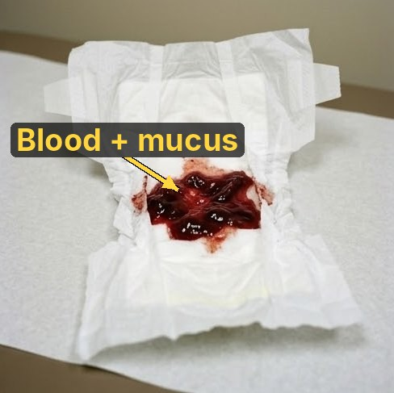
Redcurrant jelly stool (late sign)
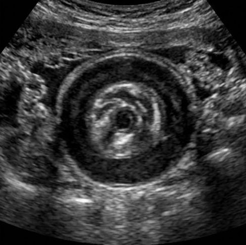
Ultrasound: target (doughnut) sign
3. Investigations and treatment
Ultrasound: the test of choice: target (doughnut) sign in cross-section, pseudokidney in long section
Abdominal X-ray: obstruction, empty right iliac fossa, free air (perforation)
CBC, electrolytes, group and save
Resuscitate: IV fluids (20 ml/kg bolus if shocked), NGT, analgesia, antibiotics
Air (pneumatic) or saline enema reduction under imaging: first-line, succeeds in about 80–90%
Surgery if peritonitis, perforation, shock not responding, failed enema or a lead point · recurrence about 10%
Exam trap
Abdominal distension is not an early finding; the early picture is colicky pain with pallor and lethargy between attacks.
Do not wait for redcurrant jelly stool: a late sign of gut ischaemia.
Enema reduction is contraindicated with peritonitis, perforation or uncorrected shock.
Rotavirus vaccine carries a very small risk of intussusception; the benefit far outweighs it.
Commonest surgical emergency over 5 years · pain around the umbilicus, then moves to the right iliac fossa · anorexia, vomiting after the pain, low fever
Tender at McBurney point, guarding, rebound, pain on hopping or coughing · rising WBC and CRP
Under 5 years: vague picture, often perforated at diagnosis (thin omentum)
Ultrasound first: non-compressible appendix > 6 mm · urine test to exclude UTI
IV fluids, analgesia (morphine does not hide the signs), antibiotics (ceftriaxone + metronidazole) → appendicectomy (laparoscopic or open)
Appendix mass: antibiotics, later surgery
6. Recurrent (functional) abdominal pain
At least 4 episodes in 2 months in a child usually over 4 years; about 90% are functional (no disease found), often linked to stress, school or family problems.
Favours functional pain
Red flags: look for disease
Pain around the umbilicus, vague, short
Pain away from the umbilicus or radiating to the back
Normal growth and examination
Weight loss, growth failure, delayed puberty
No pain at night, normal activity between attacks
Pain that wakes the child from sleep
Normal stool and urine
Blood in stool, persistent vomiting, chronic diarrhoea, fever, joint pain
Family stress, school avoidance
Family history of IBD or coeliac disease · abnormal tests (anaemia, high ESR)
Organic causes to exclude: constipation, worms and giardiasis, urinary infection, lactose intolerance, coeliac disease, IBD, H. pylori gastritis, renal stones, sickle cell disease. Functional pain: CBC, ESR, urine and stool tests; explain and reassure (the pain is real), keep the child at school, treat stress.
7. Words used
Haematemesis: vomiting blood (fresh or "coffee grounds") → bleeding above the duodenojejunal flexure
Melaena: black, tarry, sticky, offensive stool → digested blood from the upper gut
Haematochezia: fresh red or maroon blood per rectum → lower gut (or a fast upper bleed)
Red stools that are not blood: beetroot, red drinks, rifampicin
Remnant of the vitello-intestinal duct on the ileum · the "rule of 2": 2% of people, 2 feet (60 cm) from the ileocaecal valve, about 2 inches long, 2 types of ectopic tissue (gastric, pancreatic), symptoms usually under 2 years
Painless, massive rectal bleeding (bright or brick-red) from an ulcer caused by acid from the gastric tissue · can cause shock and anaemia
Other presentations: intussusception (lead point), volvulus, diverticulitis (like appendicitis)
Technetium-99m pertechnetate scan (Meckel scan): the test of choice (takes up in gastric tissue) · surgical resection
Best next step · a child with a large GI bleed
ABC, two IV lines, 0.9% saline 20 ml/kg, cross-match, blood transfusion · CBC, clotting, urea (raised in upper GI bleeds) · then find the source: endoscopy (upper), Meckel scan, colonoscopy (lower).
Constipation is the passage of hard, painful or infrequent stools (fewer than 3 a week). It is about frequency and consistency: a breastfed baby may pass soft stool only once in several days and be normal. In over 90% of children it is functional (no disease): the child holds stool back because passing it hurts.
1. The cycle of functional constipation
2. Causes
Functional (most)
Painful stool, change of diet (weaning, cow's milk), low fluid and fibre, toilet training, school toilets, illness
Red flags (organic cause): meconium passed after 48 hours · started in the first weeks · ribbon stools · failure to thrive · bilious vomiting, severe distension · abnormal legs, reflexes, sacral dimple or hair tuft · abnormal anus
Anal fissure: a tear at the anal margin from hard stool · pain on defecation, streaks of fresh blood on the stool surface or tissue · seen by parting the buttocks · stool softener, warm baths, petroleum jelly; heals when constipation is treated
3. Treatment of functional constipation (ESPGHAN–NASPGHAN)
Explain the cycle; no blame · toilet sitting for 5 minutes after meals (gastrocolic reflex) · star chart, feet supported
Disimpaction if a faecal mass is felt: PEG 1–1.5 g/kg/day for 3–6 days by mouth · enemas only if oral treatment fails
Maintenance: PEG 0.4 g/kg/day (or lactulose 1–2 ml/kg/day) for at least 2 months and 1 month after symptoms settle; stop slowly
Diet: enough fluid, fruit and fibre, normal milk intake (too much cow's milk worsens constipation) · regular follow-up
Nerve (ganglion) cells fail to reach the end of the bowel in fetal life, so the aganglionic segment cannot relax and acts as a functional obstruction; the normal bowel above it dilates. It always starts at the anus and runs upwards: rectosigmoid in 75%, whole colon in about 10%. Boys 4 : 1 · associated with Down syndrome.
Newborn (most)
Delayed meconium beyond 48 hours (90% of affected term babies) · abdominal distension · bilious vomiting · rectal examination → explosive gush of stool and gas with relief
Older child
Chronic constipation from birth, needs laxatives or washouts · huge distended abdomen, faecal masses · empty rectum on examination · failure to thrive · no soiling
Enterocolitis
The dangerous complication: fever, explosive offensive diarrhoea, distension, shock · can kill · IV fluids, antibiotics (metronidazole + others), rectal washouts
Diagnosis
Rectal suction biopsy: the gold standard: no ganglion cells, thick nerve fibres, raised acetylcholinesterase
Treatment
Rectal washouts with saline until surgery · pull-through operation (remove the aganglionic bowel and bring normal bowel down to the anus), sometimes after a colostomy
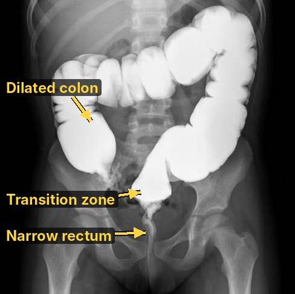
Contrast enema in Hirschsprung disease
Contrast enema: narrow distal segment (rectum), a cone-shaped transition zone, and dilated colon above it
The enema supports the diagnosis and shows the length of the segment; the biopsy confirms it
Anorectal manometry: the internal sphincter does not relax when the rectum is distended
5. Functional constipation compared with Hirschsprung disease
Functional constipation
Hirschsprung disease
Onset
After weaning or toilet training (> 1–2 years)
From birth, late meconium
Soiling (encopresis)
Common (overflow)
Rare
Withholding behaviour
Yes
No
Growth
Normal
Poor
Rectum
Full of hard stool
Empty (stool above)
Enterocolitis
No
Yes
Encopresis: passing stool in the underwear after 4 years of age · usually overflow of liquid stool around a hard faecal mass (not laziness) · treat the constipation (disimpaction, maintenance laxative, toilet routine) and support the child.
Chapter 5 · 5.7 Viral Hepatitis & Liver DiseaseLiver Tests & Hepatitis A and E97
5.7Viral Hepatitis & Liver Disease
The liver makes proteins (albumin, clotting factors), stores glucose, clears bilirubin and ammonia. Hepatitis is inflammation of the liver; in children it is most often viral. Liver tests tell the pattern of damage and, more importantly, whether the liver is failing.
1. Reading liver tests
Hepatocellular damage
ALT (more liver-specific) and AST high, often in thousands in acute hepatitis · the height does not predict the outcome
Cholestasis (bile flow blocked)
Conjugated (direct) bilirubin, ALP and GGT high · pale stools, dark urine, itching
Liver function (synthesis)
Prothrombin time / INR: the best guide to severity (rises within a day) · albumin (falls slowly: chronic disease) · glucose (hypoglycaemia in failure)
2. Causes of hepatitis in children
Hepatitis viruses: A and E (faeco-oral), B, C and D (blood, mother to baby)
Other infections: EBV, CMV, malaria, typhoid, brucellosis, leptospirosis, sepsis
Metabolic and autoimmune: Wilson disease, autoimmune hepatitis
3. Hepatitis A and E
Spread
Faeco-oral (water, food, close contact) · common in crowded areas with poor sanitation · hepatitis E: large water-borne outbreaks (camps for displaced people)
Incubation
Hepatitis A 2–6 weeks (average 4) · infectious for 2 weeks before and 1 week after the jaundice
Course
Young children: often no symptoms or no jaundice · pre-icteric: fever, malaise, anorexia, nausea, vomiting, right upper pain · icteric: jaundice, dark urine, pale stools, tender hepatomegaly; the child feels better when jaundice appears
Diagnosis
Anti-HAV IgM (recent infection) · anti-HAV IgG = past infection or vaccine (immune) · anti-HEV IgM
Outcome
Full recovery, never chronic, no carrier state · rare: acute liver failure, prolonged cholestasis (itching), relapse · hepatitis E is dangerous in pregnancy (high maternal death)
Treatment
Supportive: rest, fluids, normal diet (no need to avoid fat), no paracetamol in excess, no sedatives · admit if vomiting, drowsiness, bleeding or prolonged INR · stay off school 1 week after jaundice starts
Prevention
Hand washing, safe water, sanitation · hepatitis A vaccine (inactivated, 2 doses 6 months apart)
Key numbers
2–6 weeks
Incubation of hepatitis A
1 week
Off school after jaundice starts
90 %
Chronic HBV if infected at birth
< 24 h
Hepatitis B birth dose
0.5 ml
HBIG for the newborn (within 12 h)
> 6 months
HBsAg = chronic hepatitis B
≥ 1.5 · ≥ 2
INR in acute liver failure (with · without encephalopathy)
DNA virus in blood and body fluids · in children mostly from the mother at birth (highest risk if she is HBeAg-positive), also household contact, unsafe injections, transfusion · incubation 2–6 months
Chronic infection depends on age: about 90% if infected at birth, 30% at 1–5 years, under 5% in adults · chronic infection → cirrhosis and hepatocellular carcinoma
Extra-hepatic: arthritis and rash (prodrome), membranous glomerulonephritis, aplastic anaemia
Marker
Meaning
HBsAg
Infection now · present > 6 months = chronic
Anti-HBc IgM
Acute (recent) infection
HBeAg
Active replication, highly infectious
Anti-HBs alone
Vaccinated (immune)
Anti-HBs + anti-HBc IgG
Past infection, recovered
WHO 2024 · preventing mother-to-child hepatitis B
Every baby: hepatitis B birth dose within 24 hours, then the pentavalent doses (EPI).
Baby of an HBsAg-positive mother: also HBIG 0.5 ml IM within 12 hours (other thigh) · test the baby for HBsAg and anti-HBs at 9–12 months.
Mother with high viral load or HBeAg-positive: tenofovir from the second trimester · breastfeeding is allowed.
Treatment: acute hepatitis B is supportive · chronic hepatitis B with active disease (raised ALT, high viral load, fibrosis): specialist care, tenofovir or entecavir (WHO 2024) · test the household and vaccinate contacts.
5. Hepatitis C and D
Hepatitis C
RNA virus · blood: transfusion, unsafe injections, dialysis, mother to baby (about 5%) · usually silent; chronic in most (60–80%) · anti-HCV, then HCV RNA (PCR) to confirm active infection (baby of an infected mother: PCR in infancy, anti-HCV after 18 months) · no vaccine · direct-acting antivirals for all from 3 years (WHO 2022): sofosbuvir-based tablets for 12 weeks, cure > 95%
Hepatitis D (delta)
Defective virus that needs HBsAg to infect · only with hepatitis B · makes the disease more severe (liver failure, rapid cirrhosis) · prevented by hepatitis B vaccine
6. Acute liver failure
Sudden loss of liver function in a child with no known liver disease: INR ≥ 1.5 with encephalopathy, or INR ≥ 2 even without it, not corrected by vitamin K
Causes: hepatitis A (commonest where it is endemic), hepatitis B, paracetamol overdose, drugs (isoniazid, valproate), Wilson disease, herbal remedies
Features: deepening jaundice, bleeding, encephalopathy (sleep change, confusion, coma), shrinking liver, ascites · ALT may fall as the liver dies
Treatment (ICU): glucose infusion (hypoglycaemia) · vitamin K · FFP only for bleeding · lactulose · protein moderated · head up, treat raised ICP (mannitol) · no sedatives · N-acetylcysteine for paracetamol · antibiotics for infection · liver transplant
Low albumin, prolonged INR, rising bilirubin, ascites · enzymes may be normal or only mildly raised (few cells left)
Portal hypertension
Cirrhosis, or pre-hepatic: portal vein thrombosis (umbilical catheter, neonatal sepsis) and schistosomal periportal fibrosis (S. mansoni): big spleen and varices with normal liver function · variceal bleeding: resuscitate, transfuse carefully, octreotide, antibiotics, endoscopic band ligation · prevention: propranolol, praziquantel for schistosomiasis
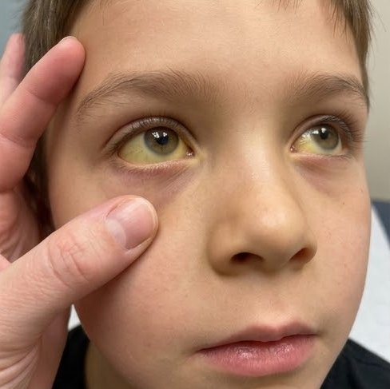
Jaundice (yellow sclerae)
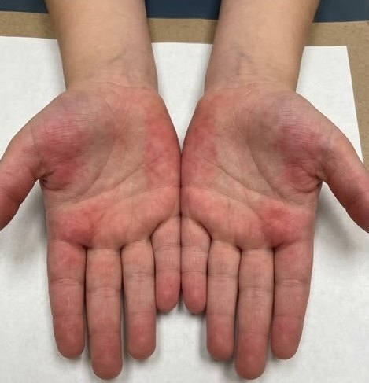
Palmar erythema
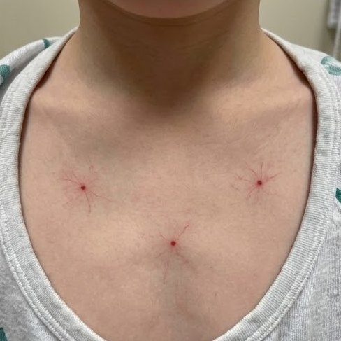
Spider naevi
Ascites and dilated abdominal veins
8. Wilson disease (hepatolenticular degeneration)
Kayser–Fleischer ring
Autosomal recessive (ATP7B): copper is not excreted in bile → builds up in the liver, brain, cornea, kidney
Low caeruloplasmin (< 20 mg/dl) · high 24-hour urine copper · liver copper on biopsy · genetic test · screen all siblings
Chelation: penicillamine or trientine (with pyridoxine for penicillamine) · zinc for maintenance · low-copper diet · transplant for liver failure · lifelong
Exam trap
Aspirin is not given to children under 16 with a viral illness (varicella, influenza): Reye syndrome: vomiting, encephalopathy and fatty liver without jaundice.
Any child with unexplained liver disease from 3–5 years should be tested for Wilson disease.
Upper respiratory tract infections (nose, throat, ears and sinuses) are the commonest infections of childhood; a young child has 6–8 colds a year. Most are viral and need no antibiotic. The skill is to pick out the few that are bacterial (streptococcal tonsillitis, acute otitis media) or dangerous (epiglottitis, severe croup). Breathing is assessed by counting the respiratory rate: a normal rate with no chest indrawing means the infection is in the upper airway, not the lungs.
Features: sneezing, watery then thick nasal discharge, blocked nose, mild fever, cough · the infant feeds poorly because the nose is blocked · fever settles in 2–3 days, the nose clears in about 7–10 days
Treatment: paracetamol for fever, saline nose drops before feeds, continue breastfeeding · no antibiotics, no cough or cold medicines under 6 years
Complications: acute otitis media (commonest), sinusitis, lower respiratory infection (bronchiolitis, pneumonia), asthma attack in an asthmatic child, febrile convulsion
2. Acute pharyngitis and tonsillitis
Viral (most cases, all ages)
Group A streptococcus (GAS)
Age
Any age · most sore throats under 3 years are viral
Amoxicillin 50 mg/kg once daily (max 1 g) or penicillin V for 10 days · or one IM benzathine penicillin 600 000 units (< 27 kg) or 1.2 million units (≥ 27 kg) · penicillin allergy: azithromycin 5 days
Why treat GAS? To prevent rheumatic fever (7.5): treatment started within 9 days of the sore throat prevents it · it does not prevent post-streptococcal glomerulonephritis (9.2)
Diagnosis: clinical; throat swab culture or rapid antigen test where available · scarlet fever = GAS tonsillitis with a sandpaper rash and strawberry tongue (4.4)
Infectious mononucleosis (EBV): exudative tonsillitis, big neck nodes, splenomegaly, teenager · amoxicillin causes a rash · diagnosis: atypical lymphocytes, Monospot test
Diphtheria: grey membrane that bleeds when removed, bull neck, unvaccinated child (4.9)
Peritonsillar abscess (quinsy): older child, severe one-sided throat pain, trismus, muffled "hot potato" voice, uvula pushed to the other side → drainage + IV penicillin
Retropharyngeal abscess: child under 5, fever, neck stiffness or refusal to move the neck, drooling · lateral neck X-ray: widened prevertebral space → drainage + IV antibiotics
Obstructive sleep apnoea from big tonsils and adenoids (commonest indication): snoring, pauses in breathing, daytime sleepiness
Recurrent tonsillitis: ≥ 7 episodes in 1 year, ≥ 5 a year for 2 years, or ≥ 3 a year for 3 years
Recurrent quinsy
Exam trap
Most sore throats are viral; a sore throat with cough, runny nose and conjunctivitis needs no antibiotic.
Do not give amoxicillin when glandular fever (EBV) is likely: it causes a widespread rash.
Penicillin for streptococcal tonsillitis is given for the full 10 days to clear the organism and prevent rheumatic fever.
4. Acute otitis media (AOM)
Infection of the middle ear, commonest at 6–24 months, usually after a cold: the child's Eustachian tube is short, wide and horizontal, so secretions reach the middle ear easily. Risk is higher with bottle feeding lying down, smoking at home, day care and cleft palate.
Ear pain (infant: crying, rubbing or pulling the ear, poor sleep), fever, irritability · ear discharge if the drum perforates (pain then improves)
Otoscopy
Red, bulging drum, loss of light reflex, poor mobility · perforation with pus
Treatment (IMCI)
Paracetamol or ibuprofen for pain · amoxicillin 40 mg/kg twice daily for 5 days · ear discharge: dry the ear by wicking with clean cloth 3 times a day · nothing inside the ear · review in 5 days
Complications
Acute mastoiditis: tender swelling behind the ear, ear pushed forward → admit, IV antibiotics · meningitis, brain abscess, facial nerve palsy · chronic suppurative otitis media · otitis media with effusion
Red, bulging drum
IMCI · ear problem
Mastoiditis (tender swelling behind the ear): first dose of antibiotic and paracetamol, then urgent referral.
Acute ear infection (pus seen draining for less than 14 days, or ear pain): amoxicillin 5 days, dry the ear by wicking.
Chronic ear infection (pus draining for 14 days or more): dry by wicking and topical quinolone ear drops for 2 weeks.
Fluid in the middle ear without signs of acute infection · age 2–7 years · after AOM or with big adenoids, cleft palate, Down syndrome
The commonest cause of conductive hearing loss in children → delayed speech, poor school performance, inattention
Dull, retracted drum with a fluid level · tympanometry: flat trace · hearing test
Most clear within 3 months (watch and wait) · persistent with hearing loss: grommets (ventilation tubes), with adenoidectomy if adenoids are big · antibiotics, antihistamines and decongestants do not help
6. Acute sinusitis
Maxillary and ethmoid sinuses are present at birth; the frontal sinus develops after about 6–10 years, so frontal sinusitis is rare in young children
Suspect bacterial sinusitis when a cold lasts more than 10 days without improvement, or worsens again, or there is high fever with purulent discharge
Features: purulent discharge, night cough (post-nasal drip), facial pain, bad breath
Periorbital swelling = orbital cellulitis risk (ethmoid) → admit, IV antibiotics
Stridor is a harsh, high-pitched sound made by narrowing of the larynx or trachea (upper airway); it is mainly inspiratory. Wheeze is a musical, mainly expiratory sound from narrowed small airways (lower airway). A child's airway is narrowest at the cricoid (subglottis), so a little swelling causes a large fall in airflow.
Parainfluenza virus (commonest), RSV, influenza, adenovirus · 6 months–6 years (peak 1–2 years) · autumn and winter
Features
1–3 days of cold, then barking ("seal-like") cough, hoarse voice, inspiratory stridor, low fever · worse at night and with crying · the child is not toxic and can drink
Diagnosis
Clinical · do not upset the child (no throat examination if severe) · neck X-ray is not needed; if done (doubtful diagnosis): steeple sign on AP view (subglottic narrowing)
Severity
Mild: barking cough, no stridor at rest · moderate: stridor at rest, some chest indrawing · severe: marked indrawing, agitation, reduced air entry · impending failure: lethargy, cyanosis, quieter stridor with poor air entry
9. Bacterial tracheitis
Staphylococcus aureus infection of the trachea, usually after viral croup · now commoner than epiglottitis
Croup that gets worse instead of better: high fever, toxic, thick pus in the airway, stridor not helped by adrenaline · can lie flat, no drooling
Intubation in most, suction of pus · IV cloxacillin (or vancomycin) + ceftriaxone
Keep the child calm on the parent's lap · oxygen if SpO2 < 92% · no sedatives
All grades: dexamethasone 0.15 mg/kg orally, one dose (0.6 mg/kg in severe croup; IM if vomiting) · or nebulised budesonide 2 mg · effect starts in 1–2 hours
Stridor at rest or severe: nebulised adrenaline 1:1000, 0.5 ml/kg (max 5 ml) · works in 10–30 minutes, lasts about 2 hours → observe at least 2–4 hours for rebound
No improvement or exhaustion: intubation with a smaller tube by an experienced doctor (rare)
Not useful: antibiotics (viral), steam or mist, cough syrups, salbutamol
Spasmodic croup: sudden barking cough and stridor at night, no fever, settles quickly, recurs (atopic child)
Steeple sign: subglottic narrowing shaped like a church steeple
Exam trap
Croup is viral; antibiotics are not part of treatment, but corticosteroids are effective in all grades.
A croup child who becomes quieter, with less stridor and poor air entry, is getting worse, not better.
After nebulised adrenaline, do not send the child home at once: the effect lasts only about 2 hours.
11. Acute epiglottitis (supraglottitis)
Cause
Haemophilus influenzae type b · now rare where Hib vaccine (pentavalent, EPI) is given · others: streptococci, S. aureus
Features
Age 2–7 years · sudden onset over hours, no preceding cold · high fever, toxic · drooling (cannot swallow saliva), muffled voice, soft stridor, little or no cough · sits upright, leaning forward, mouth open, neck extended (tripod position)
Diagnosis
Clinical · the swollen cherry-red epiglottis is seen at laryngoscopy in theatre · lateral neck X-ray (only if the child is stable and accompanied): thumb sign · blood culture after the airway is safe
Tripod position, drooling
Best next step · suspected epiglottitis
Do not upset the child: no throat examination with a tongue depressor, no lying down, no cannula or blood test first; the epiglottis can block the airway completely.
Keep the child on the parent's lap, give oxygen without force, call the senior anaesthetist and ENT surgeon.
Secure the airway first: intubation under gas anaesthesia in theatre (tracheostomy ready); then IV ceftriaxone for 7–10 days.
Household contacts with an under-4 child not fully vaccinated: rifampicin 20 mg/kg once daily for 4 days (max 600 mg).
Chapter 6 · 6.2 PneumoniaCauses, Clinical Features & WHO Classification105
6.2Pneumonia
Pneumonia is infection of the lung tissue (alveoli). It is the leading infectious cause of death in children under 5 years. The most useful sign is fast breathing; the sign of severity is chest indrawing and, above all, the general danger signs. Management follows IMCI and the WHO 2024 guideline on pneumonia and diarrhoea.
1. Causes by age
Newborn
Group B streptococcus, E. coli and other Gram-negative bacilli, Listeria (3.6)
SAM and HIV: S. aureus, Gram-negatives, Pneumocystis jirovecii (HIV infant under 1 year, 4.6), TB · after measles: S. aureus, adenovirus · sickle cell: pneumococcus (acute chest syndrome)
2. Clinical features
Cough and fever (fever may be absent in young infants and in SAM)
Fast breathing (the most sensitive sign), chest indrawing, nasal flaring, grunting (severe), head nodding, cyanosis
Chapter 6 · 6.2 PneumoniaCauses, Clinical Features & WHO Classification106
3. Classification and treatment of cough or difficult breathing (2–59 months)
Count the breaths for a full minute while the child is calm. Fast breathing: ≥ 50/min at 2–11 months, ≥ 40/min at 12 months–5 years (≥ 60/min under 2 months).
Class
Signs
Treatment
Severe pneumonia or very severe disease
Cough or difficult breathing with any general danger sign (not able to drink or breastfeed, vomits everything, convulsions, lethargic or unconscious), or central cyanosis or SpO2 < 90%, or severe respiratory distress (grunting, very severe chest indrawing)
Admit · oxygen · first dose of antibiotic and urgent referral · IV ampicillin + gentamicin (next page)
Pneumonia
Fast breathing and/or chest indrawing, no danger sign
Oralamoxicillin 40 mg/kgtwice daily at home · 5 days if chest indrawing · 3 days if fast breathing only · follow up in 2–3 days
Cough or cold
No fast breathing, no chest indrawing, no danger sign
No antibiotic · soothe the throat, clear the nose, feed · return if breathing becomes fast or difficult · cough over 14 days → assess for TB, asthma
WHO 2024 · pneumonia in children 2–59 months
Chest indrawing pneumonia without danger signs is treated with oral amoxicillin for 5 days at home, not with injections in hospital.
Fast-breathing pneumonia (no chest indrawing): oral amoxicillin for 3 days in areas of low HIV prevalence (5 days otherwise).
A child with wheeze and fast breathing first gets a rapid-acting bronchodilator (salbutamol) and is reassessed before being classified.
Exam trap
The single best sign of pneumonia in a young child is fast breathing, not crackles.
In current WHO practice, chest indrawing alone is "pneumonia" (oral amoxicillin at home); the child is "severe" only with a danger sign, cyanosis or SpO2 < 90%.
4. Investigations
Pulse oximetry
In every child with pneumonia: the most useful test for deciding on oxygen and admission
Chest X-ray
Not needed for simple pneumonia · do it if severe, not improving, or a complication is suspected · lobar consolidation (pneumococcus) · patchy bilateral shadows (bronchopneumonia) · perihilar streaky shadows with hyperinflation (viral, mycoplasma) · pneumatoceles, effusion (S. aureus)
Blood tests
CBC (high neutrophils in bacterial, lymphocytes in viral), CRP · blood culture (positive in only 10–20%) · glucose in very sick children · malaria test in fever · HIV test
Others
Pleural tap if effusion · gastric aspirate or sputum GeneXpert for TB (4.5) · nasal swab PCR for viruses
Oxygen by nasal prongs when SpO2 < 90% (or central cyanosis, grunting, inability to drink): aim for 90% or more
Ampicillin 50 mg/kg IV or IM every 6 hours (or benzylpenicillin 50 000 units/kg) plusgentamicin 7.5 mg/kg once daily, for at least 5 days · when better, change to oral amoxicillin
No improvement in 48 hours or meningitis possible: ceftriaxone 80 mg/kg once daily
Suspected S. aureus (pneumatoceles, empyema, skin boils, after measles, rapid worsening): cloxacillin 50 mg/kg every 6 hours + gentamicin, for 3 weeks
Paracetamol for fever · feed (nasogastric tube if needed) · IV fluids only if the child cannot drink, at 70–80% of maintenance (risk of SIADH) · salbutamol if wheeze
Severe pneumonia in an HIV-exposed infant: add high-dose cotrimoxazole for Pneumocystis pneumonia (4.6)
Pneumonia with fever persisting beyond 48 hours of good antibiotics, pleuritic chest pain, stony dull percussion, absent breath sounds
Causes
S. pneumoniae (commonest) · S. aureus · H. influenzae · TB (lymphocytic effusion, 4.5)
Imaging
X-ray: homogeneous opacity, meniscus rising to the axilla, lost costophrenic angle · ultrasound: confirms fluid, shows loculations, guides the tap
Empyema means
Pus in the pleura, or fluid with organisms on Gram stain, pH < 7.2, low glucose, high LDH
Treatment
IV antibiotics (ceftriaxone + cloxacillin) for 3–4 weeks in total · chest drain for empyema or a large effusion with distress · loculated pus: fibrinolytics through the drain or VATS (thoracoscopic surgery) · most children recover fully
Large left pleural effusion
10. Recurrent or non-resolving pneumonia
Same lobe every time → a local cause: inhaled foreign body, enlarged TB node pressing on a bronchus, congenital lung malformation, bronchiectasis
Different lobes → a general cause: aspiration (GOR, cerebral palsy, H-type tracheo-oesophageal fistula), cystic fibrosis, immunodeficiency (HIV), sickle cell disease, primary ciliary dyskinesia, CHD with a left-to-right shunt
Not improving: wrong drug or dose, resistant organism, empyema or abscess, TB, foreign body, HIV, malnutrition, a wrong diagnosis (heart failure)
Chapter 6 · 6.3 Bronchiolitis & the Wheezy InfantAcute Bronchiolitis109
6.3Bronchiolitis & the Wheezy Infant
Acute bronchiolitis is a viral infection of the small airways (bronchioles) in children under 2 years, with a peak at 3–6 months. It is the commonest cause of wheeze and hospital admission in infants. Inflammation, mucus and dead cells block the bronchioles, so air is trapped (hyperinflation) and oxygen falls. Treatment is supportive: oxygen, feeding and fluids.
1. Cause and risk factors
Respiratory syncytial virus (RSV): the commonest cause (about 70%) · others: human metapneumovirus, rhinovirus, parainfluenza, adenovirus (bronchiolitis obliterans, a severe late complication)
Epidemics in the cold or rainy season · spread by droplets and hands
Severe disease in: age under 3 months, preterm birth, chronic lung disease (bronchopulmonary dysplasia), congenital heart disease, immunodeficiency, neuromuscular disease
Also: not breastfed, smoking at home, crowding
2. Clinical features
Course
1–3 days of cold (runny nose, mild fever) → cough, fast breathing, wheeze, poor feeding · worst on days 3–5 · cough lasts up to 3 weeks
Signs
Tachypnoea, chest indrawing, nasal flaring · hyperinflated chest, hyper-resonant percussion, liver pushed down · fine inspiratory crackles and/or expiratory wheeze on both sides, prolonged expiration
Young infants
Under 6 weeks (and preterm babies) may present with apnoea alone, before chest signs
Severe
Grunting, marked indrawing, RR > 70/min, cyanosis, SpO2 low, not feeding (less than half of usual), apnoea, exhaustion
Chest indrawing on oxygen
3. Investigations
Diagnosis is clinical · pulse oximetry in every infant
No routine chest X-ray, blood tests or antibiotics · X-ray (if severe or diagnosis doubtful): hyperinflation (flat diaphragm, more than 8 posterior ribs), patchy collapse · CBC and CRP usually normal
Nasal swab PCR or antigen test for RSV: for isolation (cohorting) in hospital · blood gas if exhausted
Chapter 6 · 6.3 Bronchiolitis & the Wheezy InfantAcute Bronchiolitis110
4. Management
Admit if
Apnoea · SpO2 persistently < 90% in air (< 92% if under 6 weeks or with an underlying condition) · poor feeding (less than 50–75% of usual) or dehydration · severe distress (grunting, RR > 70) · age under 3 months or risk factors, home far away
Supportive care
Oxygen by nasal cannula to keep SpO2 at or above these levels · gentle nasal suction of secretions · small frequent feeds or nasogastric feeding · IV fluids if NG feeds fail (isotonic, at 2/3 maintenance) · head up 30° · CPAP or high-flow oxygen for respiratory failure or apnoea
Do not give
Salbutamol, steroids, antibiotics, adrenaline, montelukast, ipratropium, chest physiotherapy, cough syrups (they do not change the course)
Discharge
Feeding well, SpO2 stable in air for some hours, no apnoea · tell parents the cough may last 3–4 weeks
NICE · bronchiolitis
Do not use antibiotics, hypertonic saline, adrenaline, salbutamol, montelukast, ipratropium or corticosteroids.
Give oxygen if SpO2 stays below 90% (below 92% in babies under 6 weeks or with underlying conditions).
WHO 2025 · RSV prevention in infants
Either a maternal RSV vaccine in the third trimester (from 28 weeks) or one dose of the long-acting monoclonal antibody nirsevimab to the baby at birth or before the first RSV season.
Palivizumab (monthly injections in the season) is used for high-risk infants (preterm, chronic lung disease, CHD) where nirsevimab is not available.
Prognosis: most recover in 1–2 weeks · death < 1% (apnoea, respiratory failure) · recurrent wheeze in later childhood is common
Exam trap
Bronchiolitis is caused by RSV, not parainfluenza (which causes croup); salbutamol and steroids are not recommended.
Wheeze in bronchiolitis is expiratory; the chest is hyperinflated; asthma is a differential diagnosis.
Wheeze is a continuous musical sound, mainly on expiration, from narrowing of the intrathoracic airways (bronchi and bronchioles). It must be heard with the stethoscope: parents often call any noisy breathing (rattle, snoring, stridor) "wheeze".
Eczema, allergic rhinitis, family history of asthma
Outlook
Most outgrow it by school age
May persist
7. Approach to a wheezy child
History: age at onset, since birth?, sudden choking, relation to colds, exercise, feeding (vomiting, coughing with feeds), night cough, atopy and family history, growth, oily stools (CF)
Examination: growth, clubbing (CF, bronchiectasis — not asthma), signs of heart failure (big liver, murmur), unilateral signs (foreign body), eczema
Red flags for another cause: wheeze since birth, failure to thrive, clubbing, persistent wet cough, vomiting with feeds, focal signs, no response to bronchodilator
Treatment of an episode (over 1 year, not bronchiolitis): salbutamol by inhaler and spacer with mask · oral prednisolone only if severe or admitted
Clubbing: never asthma
Best next step · wheeze with red flags
Chest X-ray first; then according to the clue: sweat test (poor growth, oily stools), bronchoscopy (sudden choking, one-sided signs), echocardiography (murmur, big liver), barium swallow (vascular ring, GOR).
Asthma is a chronic inflammatory disease of the airways with variable, reversible airflow obstruction: the airways are hyper-responsive and narrow with triggers (smooth-muscle spasm, swelling of the lining, thick mucus). It is the commonest chronic disease of childhood; boys are affected more before puberty. It cannot be cured but can be controlled: daily anti-inflammatory treatment prevents attacks and deaths. Management follows GINA 2026.
1. Risk factors and triggers
Risk factors: atopy (eczema, allergic rhinitis, food allergy) · parental asthma (the strongest risk factor) · smoking in pregnancy and at home · prematurity · obesity
Recurrent episodes of wheeze, cough, shortness of breath, chest tightness · worse at night and early morning · with triggers · relieved by salbutamol · night cough may be the only symptom (cough-variant asthma)
During an attack
Tachypnoea, indrawing, prolonged expiration, bilateral expiratory wheeze, hyper-resonant chest · severe: inspiratory and expiratory wheeze or a silent chest
Between attacks
Often normal · long-standing poor control: Harrison sulcus, pigeon chest, barrel chest · eczema, allergic "salute" · no clubbing (clubbing points to CF or bronchiectasis)
3. Diagnosis
Clinical: typical history + response to treatment · the examination is often normal between attacks
Spirometry (from about 5–6 years): low FEV1/FVC (< 0.9 in children) = obstruction · reversibility: FEV1 rises by ≥ 12% 15 minutes after salbutamol
Peak expiratory flow (PEF): variability > 13% over 2 weeks (morning and evening readings) · also used for home monitoring
Exercise test: fall in FEV1 ≥ 12% (or PEF ≥ 15%) after 6–8 minutes of running
Supporting: blood eosinophilia, high IgE, skin-prick tests (allergens) · chest X-ray is not needed for diagnosis (hyperinflation in an attack; used to exclude pneumothorax, pneumonia, foreign body)
Under 5 years: spirometry is not possible; diagnose by the pattern (wheeze with triggers other than colds, night symptoms, atopy) and a trial of controller treatment for 2–3 months
Exam trap
A normal chest examination does not exclude asthma: the child is often normal between attacks.
Clubbing is not a feature of asthma; look for cystic fibrosis, bronchiectasis or cyanotic heart disease.
The most important risk factor for childhood asthma is atopy with parental asthma, not pets or social background.
Salbutamol: reliever, acts in minutes, lasts 4–6 hours · side effects: tremor, tachycardia, hypokalaemia · using it more than twice a week = poor control
Inhaled corticosteroid (ICS)
Budesonide, beclometasone, fluticasone: the main controller, treats the inflammation · side effects: oral thrush, hoarse voice (use a spacer, rinse the mouth) · high doses: slight slowing of growth
Long-acting β2-agonist (LABA)
Formoterol, salmeterol: never alone, only combined with ICS in one inhaler · formoterol acts fast, so budesonide–formoterol can be both reliever and controller (MART)
Leukotriene receptor antagonist
Montelukast (oral, once daily): add-on or alternative · may cause mood and sleep changes
Others
Oral prednisolone (short courses for attacks) · ipratropium (attacks) · theophylline (narrow safety margin: vomiting, arrhythmia, seizures) · biologics such as omalizumab (anti-IgE, specialist)
5. Stepwise long-term treatment
Step
Children 6–11 years
Children 5 years and under
1
Low-dose ICS taken whenever salbutamol is taken (SABA alone is no longer advised)
Salbutamol as needed (viral wheeze, few symptoms) · consider a short ICS course at the start of a cold
2
Daily low-dose ICS + salbutamol as needed (or montelukast)
Low-dose ICS–LABA, or medium-dose ICS, or very-low-dose budesonide–formoterol MART
Double the low dose of ICS
4
Medium-dose ICS–LABA or low-dose MART · refer to a specialist
Continue and refer
5
Specialist: add-on (anti-IgE, other biologics), lowest dose of oral steroid only as a last resort
—
Before stepping up, check inhaler technique, adherence, triggers (smoke at home) and the diagnosis · review in 4–6 weeks
Step down after 3 months of good control · well controlled = daytime symptoms ≤ 2 a week, no night waking, reliever ≤ 2 a week, no limitation of activity
6. Inhaler devices by age
MDI + spacer + mask
0–3 years: metered-dose inhaler (MDI) + spacer + face mask
4–5 years: MDI + spacer with a mouthpiece
6 years and over: MDI + spacer, or a dry-powder inhaler (needs a fast, deep breath)
An MDI with a spacer works as well as a nebuliser in attacks
Spacer technique: shake, one puff into the spacer, 5–6 breaths (or one slow deep breath held for 10 seconds), wait 30 seconds before the next puff
Education: avoid smoke and dust, cover mattresses, no pets in the bedroom, annual influenza vaccine, a written asthma action plan, salbutamol before exercise
GINA 2026 · children 6–11 years
Children 6–11 years should not be treated with salbutamol alone: every child with asthma needs an ICS-containing treatment, because SABA-only treatment raises the risk of severe attacks and death.
Every child needs a written asthma action plan and an inhaler technique check at every visit.
Oxygen by mask to keep SpO294–98% · sit the child up
Salbutamol by MDI + spacer: 2–10 puffs (100 μg each) every 20 minutes for the first hour · or nebulised 2.5 mg (under 5 y) / 5 mg (5 y and over) with oxygen
Severe: add nebulised ipratropium 250 μg every 20 minutes in the first hour
Steroid early in every moderate or severe attack: oral prednisolone 1–2 mg/kg once daily (max 40 mg; 20 mg under 2 y, 30 mg at 2–5 y) for 3–5 days · vomiting or very ill: IV hydrocortisone 4 mg/kg every 6 hours
No response: IV magnesium sulphate 40 mg/kg (max 2 g) over 20 minutes · then in PICU: IV salbutamol or aminophylline, ventilation
Blood gas and chest X-ray only if life-threatening, not improving or pneumothorax suspected · IV fluids at 2/3 maintenance if not drinking · check potassium
9. Admission and discharge
Admit: severe or life-threatening features, poor response after 1 hour of salbutamol, SpO2 < 92% after treatment, previous ICU admission
Discharge when stable on salbutamol every 4 hours or less often, SpO2 ≥ 94% in air
At discharge: finish prednisolone, start or step up ICS, check inhaler technique, written action plan, review in 1–2 weeks
Do not give: sedatives, antibiotics (unless pneumonia), mucolytics
Exam trap
A silent chest, falling wheeze, drowsiness or bradycardia means life-threatening asthma, not improvement.
A normal or rising PaCO2 in an attack is a danger sign: the child is tiring (early attacks have a low PaCO2 from fast breathing).
Pulsus paradoxus (> 10–20 mmHg) is a sign of severe asthma; the most useful bedside test of severity is SpO2.
6.5Cystic Fibrosis, Foreign Body & Chronic Lung Disease
Cystic fibrosis (CF) is an autosomal recessive disease of the CFTR chloride channel (gene on chromosome 7; commonest mutation F508del, also called ΔF508). Chloride and water cannot leave the cells, so secretions in the lungs, pancreas, gut, liver and vas deferens become thick and sticky and block the ducts, while sweat is very salty. It is commonest in white populations but occurs in Arab and African children too. Death is usually from lung disease.
Chest physiotherapy daily (airway clearance) · inhaled dornase alfa (DNase) and hypertonic saline to thin mucus · bronchodilator before physiotherapy · exercise
Infection
Oral flucloxacillin prophylaxis in young children · treat exacerbations early · Pseudomonas: inhaled tobramycin or colistin; IV ceftazidime + tobramycin for exacerbations · azithromycin long-term (anti-inflammatory) · annual influenza vaccine
Nutrition
Pancreatic enzyme capsules with every meal and snack · high-calorie, high-fat diet (120–150% of normal energy) · vitamins A, D, E, K · extra salt in hot weather
New drugs
CFTR modulators (elexacaftor–tezacaftor–ivacaftor) correct the faulty protein in most mutations: better lung function and growth
End stage
Lung transplant · genetic counselling: 25% risk in each later pregnancy
Exam trap
The best investigation for a child with recurrent chest infections, nasal polyps and malabsorption is the sweat chloride test.
The typical organism in an older child with CF is Pseudomonas aeruginosa; in infants it is S. aureus.
Nasal polyps in a child should suggest cystic fibrosis.
Commonest at 1–3 years (toddlers put things in the mouth, have no molars) · peanuts, seeds (watermelon, sunflower), small toy parts · usually lodges in the right main bronchus (wider, more vertical)
History
Sudden choking and coughing while eating or playing (often not seen) → a quiet period → later cough, wheeze, recurrent pneumonia in the same lobe
Signs
Larynx: stridor, hoarse voice · bronchus: one-sided wheeze, reduced air entry on one side, not helped by salbutamol
Chest X-ray
Often normal (most objects are not radio-opaque) · expiratory film: air trapping (hyperlucent lung, mediastinum shifts to the other side) · collapse or consolidation later
Treatment
Rigid bronchoscopy: both diagnosis and removal · do it whenever the history is suggestive, even if the X-ray is normal
On expiration the right lung stays dark (air trapping) and the heart shifts left
Best next step · choking child (paediatric basic life support)
Effective cough (crying, talking): encourage coughing, watch closely; do not put fingers blindly in the mouth.
Ineffective cough, conscious: under 1 year: 5 back blows (head down, prone), then 5 chest thrusts · over 1 year: 5 back blows, then 5 abdominal thrusts (Heimlich) · repeat.
Unconscious: open the airway, remove a visible object, 5 rescue breaths, start CPR; call for help.
5. Bronchiectasis
Permanent dilatation of bronchi with pus and chronic infection
Primary ciliary dyskinesia: wet cough from birth, chronic ear and sinus disease · Kartagener syndrome = with dextrocardia (situs inversus)
Features: daily wet cough with large amounts of foul sputum, worse lying down · clubbing · coarse crackles over the same area · haemoptysis · poor growth
Best test: high-resolution CT chest · X-ray: ring and tram-line shadows
Treatment: daily chest physiotherapy (postural drainage), antibiotics for exacerbations, treat the cause, vaccines · surgery for a localised lobe
6. Lung abscess
Cavity filled with pus · after aspiration (unconscious, poor swallowing), S. aureus or Klebsiella pneumonia, foreign body
High fever, foul sputum · X-ray: cavity with an air–fluid level · IV antibiotics (clindamycin or co-amoxiclav, cloxacillin for S. aureus) for 3–4 weeks · drainage rarely
Exam trap
A normal chest X-ray does not exclude an inhaled foreign body; the next step is bronchoscopy.
One-sided wheeze in a toddler is a foreign body until proved otherwise, not asthma.
In the fetus the placenta, not the lung, gives oxygen. Three shunts carry blood past the liver and the airless lungs: the ductus venosus, the foramen ovale and the ductus arteriosus. At birth the first breaths open the lungs, the shunts close, and the two circulations separate. Many heart diseases of the newborn appear when these shunts close.
1. Fetal circulation
2. Changes at birth
Shunt
How it closes
If it stays open
Foramen ovale
Lungs open → more blood returns to the LA → LA pressure rises above RA and closes the flap (functional closure in hours)
Patent foramen ovale (common, harmless) · ASD
Ductus arteriosus
Rise in oxygen and fall in prostaglandin E → functional closure in 1–3 days, fibrosis in 2–3 weeks
PDA (preterm, rubella) · kept open with PGE1, closed with indomethacin, ibuprofen or paracetamol
Ductus venosus
Umbilical flow stops → closes in the first week
—
Pulmonary resistance
Falls sharply in the first 24 hours, then slowly to adult level by 6–8 weeks
Persistent pulmonary hypertension of the newborn: right-to-left shunt through the duct and foramen, severe cyanosis (hypoxia, acidosis, meconium aspiration)
Why a VSD murmur and heart failure appear at 4–8 weeks, not at birth: the left-to-right shunt grows only as pulmonary resistance falls
Duct-dependent lesions present when the duct closes (days 2–7): severe cyanosis (pulmonary atresia, TGA) or shock with weak femoral pulses (coarctation, hypoplastic left heart) → PGE1 infusion saves life
3. Causes and associations of congenital heart disease
Down syndrome: screen for AVSD
About 8 per 1000 live births · most are multifactorial
Right arm and femoral pulse together: weak or delayed femoral = coarctation · collapsing (bounding) pulse = PDA, aortic regurgitation · BP in arm and leg (leg is normally higher)
Apex beat
4th space just outside the midclavicular line under 2 years · 5th space in the midclavicular line after 5 years · heaving apex = LV pressure load (AS) · hyperdynamic = volume load (VSD, PDA, mitral regurgitation) · left parasternal heave = RVH
Heart sounds
S2 splits on inspiration normally · wide fixed splitting = ASD · single S2 = tetralogy, TGA, pulmonary atresia · loud P2 = pulmonary hypertension · S3 can be normal in children; S4 is always abnormal · a thrill is a palpable murmur (grade ≥ 4) and is never innocent
5. Innocent compared with pathological murmurs
Innocent (functional)
Pathological
Timing
Systolic (except venous hum), short
Diastolic or pansystolic, or continuous (PDA)
Loudness
Soft, grade ≤ 2, no thrill
Loud, grade ≥ 3, may have a thrill
Other signs
Normal heart sounds, child well, changes with posture, louder with fever or anaemia
Still's murmur: musical, vibratory, mid-systolic at the left lower sternal edge, age 3–7 years, softer on sitting
Venous hum: continuous, under the clavicles, disappears on lying flat or pressing the neck veins
Pulmonary flow murmur: soft ejection murmur at the upper left sternal edge (also in newborns: peripheral pulmonary stenosis)
Grades: 1 very soft · 2 soft · 3 loud, no thrill · 4 with thrill · 5 heard with the edge of the stethoscope · 6 heard without touching the chest
Site of maximum loudness: lower left sternal edge = VSD · upper left sternal edge = PS, ASD flow, tetralogy · left infraclavicular = PDA (continuous) · apex = mitral regurgitation (to the axilla) · upper right sternal edge = AS (to the neck)
Best next step · murmur in a well child
A soft systolic murmur with normal heart sounds, normal pulses and a well, growing child is innocent: reassure; any red flag (diastolic, thrill, symptoms, abnormal S2, newborn) → echocardiography.
Key numbers
8 / 1000
Live births with CHD
1–3 days
Functional closure of the duct
6–8 weeks
Pulmonary resistance reaches adult level
< 95%
Newborn SpO2 screen → echo
> 0.5
Cardiothoracic ratio = cardiomegaly (> 0.6 infant)
Chronic cyanosis: polycythaemia (with relative iron deficiency), stroke, brain abscess, clubbing, gum and bleeding problems
Exam trap
Cyanotic infants are often not distressed in proportion to their cyanosis (tetralogy); breathless infants with plethoric lungs usually have a left-to-right shunt.
Brain abscess and stroke are complications of cyanotic (right-to-left) heart disease, not of VSD.
In left-to-right shunts blood passes from the high-pressure left side to the right side, so the lungs receive too much blood. The child is pink but breathless, with recurrent chest infections, poor feeding and heart failure in large defects. Obstructive lesions (coarctation, aortic and pulmonary stenosis) load the ventricle with pressure instead.
1. Ventricular septal defect (VSD)
Facts
The commonest CHD (about 30%) · perimembranous (commonest, about 70–80%) or muscular · Down syndrome, trisomy 13 and 18, fetal alcohol
Small VSD
No symptoms, normal growth · loud, harsh pansystolic murmur at the lower left sternal edge, often with a thrill · normal X-ray and ECG · the smaller the hole, the louder the murmur
Large VSD
Symptoms from 4–8 weeks (as pulmonary resistance falls): breathless and sweating on feeding, poor weight gain, recurrent chest infections, heart failure (fast breathing, big liver) · active precordium · pansystolic murmur (softer), apical mid-diastolic murmur (high flow across the mitral valve), loud P2
30–50% of small defects close by themselves (muscular more often) · large defects → pulmonary hypertension → Eisenmenger syndrome if not repaired
VSD: left-to-right shunt
2. Treatment of VSD
Small: reassure, follow up with echo, good dental hygiene (endocarditis risk) · no surgery
Large, symptomatic: heart-failure treatment (furosemide, captopril, spironolactone) · high-calorie feeds (NG if needed) · treat chest infections and anaemia
Surgical closure (patch, by 3–6 months, or catheter device for some muscular defects) if: failure to thrive or heart failure not controlled by drugs, or pulmonary hypertension
Pulmonary artery banding: temporary palliation in multiple defects
Exam trap
In VSD the smallest defects produce the loudest murmurs; as pulmonary hypertension develops the murmur becomes softer, not louder.
A large VSD causes heart failure at 6–8 weeks, not at birth; a VSD does not cause cyanosis unless Eisenmenger syndrome develops.
Secundum (commonest, about 80%, middle of the septum) · primum (lower septum, with a cleft mitral valve: part of AVSD) · sinus venosus · girls more often
Features
Usually no symptoms in childhood; found by a murmur · large: tiredness, recurrent chest infections · arrhythmias and pulmonary hypertension in adult life
Signs
Wide, fixed splitting of S2 (the key sign) · soft ejection systolic murmur at the upper left sternal edge (extra flow across the pulmonary valve, not across the ASD) · tricuspid flow mid-diastolic murmur in large shunts
Investigations
Echo · X-ray: right atrial and ventricular enlargement, prominent pulmonary arteries, plethora · ECG: right axis deviation, RVH, partial right bundle branch block (secundum) · left (superior) axis in primum
Treatment
Many small secundum defects close in the first years · large (right heart dilated): catheter device or surgical closure at 3–5 years · endocarditis is very rare (low pressure gradient)
ASD: left atrium → right atrium
4. Atrioventricular septal defect (AVSD)
Primum ASD + inlet VSD + one common AV valve · strongly linked with Down syndrome (screen every Down baby with echo)
Early heart failure and pulmonary hypertension in infancy · ECG: superior (left) axis · surgical repair at 3–6 months
AVSD: one common AV valve
5. Outflow obstruction: pulmonary and aortic stenosis
Pulmonary stenosis
Aortic stenosis
Association
Noonan syndrome, rubella (peripheral)
Bicuspid valve · Williams syndrome (supravalvular)
Features
Mostly no symptoms · severe: right heart failure, cyanosis in newborns (critical)
Mostly no symptoms · chest pain, syncope on exercise, sudden death · critical: shock in the newborn
Ejection systolic murmur, upper right sternal edge → neck, click, small slow pulse, heaving apex, thrill in the suprasternal notch
Treatment
Balloon valvuloplasty (moderate–severe)
Balloon valvuloplasty · valve surgery · avoid competitive sport when significant
Best next step · newborn in shock with weak femoral pulses
Think duct-dependent systemic circulation (coarctation, critical AS, hypoplastic left heart): start PGE1 infusion at once, then confirm by echocardiography; treat sepsis in parallel.
Preterm babies (immature duct, often closes later) · congenital rubella · girls · babies born at altitude
Signs
Continuous "machinery" murmur under the left clavicle (systolic only in the newborn) · collapsing, bounding pulses, wide pulse pressure · active precordium · large duct: heart failure, poor growth, chest infections · preterm: apnoea, difficulty weaning from the ventilator
Investigations
Echo · X-ray: cardiomegaly, plethora · ECG: LVH (RVH only with pulmonary hypertension)
Treatment
Preterm: ibuprofen or indomethacin (prostaglandin inhibitors) or paracetamol in the first weeks, fluid restriction · term baby or older child: the duct will not close on its own → catheter coil or device (or ligation), ideally in the first year, even if small (endarteritis risk)
PDA: aorta → pulmonary artery
Exam trap
The murmur of ASD is not produced by blood crossing the defect; it is a pulmonary flow murmur. The key sign is wide fixed splitting of S2.
A PDA is closed with an anti-prostaglandin; prostaglandin E1 keeps it open.
ECG in PDA shows LVH, not RVH; RVH belongs to ASD, pulmonary stenosis and tetralogy.
7. Coarctation of the aorta
Facts
Narrowing of the aorta, usually near the ductus, beyond the left subclavian artery · boys · Turner syndrome · bicuspid aortic valve in many
Newborn (severe)
Duct-dependent: well at birth → when the duct closes (days 2–7) sudden shock, heart failure, acidosis, absent femoral pulses · may have pink arms and blue legs
Older child (mild)
Often no symptoms · hypertension in the arms, weak, delayed femoral pulses (radio-femoral delay), BP lower in the legs · headache, nosebleeds, leg pain on exercise · systolic murmur at the back between the scapulae
Investigations
Echo · four-limb BP · X-ray (older child): rib notching (big collateral arteries), "3 sign" · ECG: LVH (RVH in newborns) · CT or MRI
Treatment
Newborn: PGE1 infusion to reopen the duct, inotropes, correct acidosis → surgical repair · older: balloon angioplasty with stent or surgery · treat hypertension (may persist)
Central cyanosis is a blue tongue and lips, seen when there is more than 5 g/dl of deoxygenated haemoglobin in the capillaries. In heart disease it comes from right-to-left shunting or mixing. Cyanotic heart disease is harder to see in anaemia and easier in polycythaemia; pulse oximetry confirms it.
1. Causes of cyanosis in a newborn
Heart: TGA, tetralogy, pulmonary or tricuspid atresia, TAPVR, truncus, hypoplastic left heart · no or little respiratory distress · hyperoxia test: PaO2 stays low
Other: methaemoglobinaemia (chocolate blood, normal PaO2), polycythaemia, hypoglycaemia, sepsis, shock
Peripheral cyanosis (blue hands and feet, pink tongue): cold, early newborn period (acrocyanosis), poor perfusion
2. Tetralogy of Fallot (TOF)
Four parts
1. Pulmonary (right ventricular outflow) stenosis, mainly infundibular · 2. large VSD · 3. overriding aorta · 4. right ventricular hypertrophy · DiGeorge (22q11) in some · right aortic arch in 25%
Key idea
The degree of pulmonary stenosis decides everything: severe → cyanosis at birth (duct-dependent) · moderate → cyanosis develops over months as the infundibulum thickens · mild → pink ("acyanotic") Fallot
Features
The commonest cyanotic CHD after infancy · cyanosis appearing in the first year · hypercyanotic spells · squatting after exercise (older child) · clubbing · exercise intolerance · heart failure is rare
Signs
Ejection systolic murmur at the upper left sternal edge (from the pulmonary stenosis, not the VSD) · single S2 · RV heave · normal heart size
Peak age 2–4 months (first 2 years) · often in the morning after crying, feeding or defecation, or with fever or dehydration
Infundibular spasm + fall in systemic resistance → more right-to-left shunt → deeper cyanosis, rapid deep breathing, irritability, then limpness
The murmur becomes soft or disappears (less blood crosses the pulmonary valve)
Prolonged spell → hypoxia, acidosis, convulsions, stroke, death
Treatment of a spell (in order)
Calm the child; knee–chest position (on the mother's shoulder) · oxygen
Morphine 0.1 mg/kg SC, IM or IV · 0.9% saline 10 ml/kg bolus
Sodium bicarbonate 1 mmol/kg IV for acidosis
Propranolol 0.1 mg/kg IV slowly (relaxes the infundibulum) or phenylephrine (raises systemic resistance)
Not settling: sedation, intubation and ventilation · urgent shunt surgery
4. Long-term management of tetralogy
Oral propranolol to prevent spells · treat iron deficiency (iron-deficient red cells are stiff → stroke) · avoid dehydration · dental care and endocarditis prevention
Total repair (close the VSD, relieve the outflow obstruction) at 4–12 months · modified Blalock–Taussig shunt (subclavian to pulmonary artery) if the infant is small or very cyanosed · newborn with severe obstruction: PGE1 to keep the duct open
Complications (unrepaired): spells, polycythaemia, stroke, brain abscess (headache, fever, focal signs in a child over 2 years), infective endocarditis, poor growth
5. Transposition of the great arteries (TGA)
Defect
Aorta from the right ventricle, pulmonary artery from the left → two separate circuits; life depends on mixing through the foramen ovale, duct or a VSD · boys, infant of a diabetic mother
Features
The commonest cyanotic CHD at birth · severe cyanosis in the first hours or days, worse as the duct closes · little distress at first · no murmur (intact septum), single loud S2 · acidosis, hypoglycaemia
Investigations
Echo · X-ray: "egg on its side" with a narrow mediastinum, plethoric lungs · hyperoxia test fails
Treatment
PGE1 infusion at once · balloon atrial septostomy (Rashkind) to improve mixing · arterial switch operation in the first 2–3 weeks
Chapter 7 · 7.4 Heart Failure in ChildrenCauses, Clinical Features & Treatment126
7.4Heart Failure in Children
Heart failure is the state in which the heart cannot pump enough blood for the body's needs. In infants the commonest cause is congenital heart disease with a large left-to-right shunt; in older children in Africa it is rheumatic heart disease, myocarditis and severe anaemia. In infants it shows mainly as breathlessness and sweating on feeding, a big liver and poor weight gain.
1. Causes by age
First week
Duct-dependent left-heart obstruction: hypoplastic left heart, critical coarctation or aortic stenosis · asphyxia (myocardial damage) · arrhythmia (SVT, complete heart block) · severe anaemia, sepsis, hypoglycaemia
Infancy (4–12 weeks)
Large left-to-right shunts as pulmonary resistance falls: VSD, AVSD, PDA, truncus · viral myocarditis, cardiomyopathy · SVT
Infant: breathless and sweating during feeds, takes a little and stops, poor weight gain, irritability · tachypnoea, indrawing, tachycardia, gallop rhythm · enlarged, tender liver (the most reliable sign) · cool peripheries · basal crackles, wheeze
Oedema of the eyelids and sacrum appears late; neck veins are hard to see in infants (short neck)
Older child: exercise intolerance, orthopnoea, cough, abdominal pain (liver) · raised JVP, ankle oedema, hepatomegaly · gallop, murmur of the cause · ascites in severe cases
Cardiomegaly is almost always present (displaced apex)
3. Investigations
Chest X-ray: cardiomegaly, pulmonary congestion, effusions · echocardiography: cause and ventricular function (the key test) · ECG: rhythm, hypertrophy, low voltage (effusion)
CBC (anaemia, infection), electrolytes and creatinine (before diuretics and digoxin), urine and BP (nephritis), ASO, blood culture if febrile
Key numbers
1 mg/kg
Furosemide dose
2/3
Maintenance fluid in congestion
5 μg/kg
Digoxin maintenance, twice daily (infant)
0.1 mg/kg
Adenosine, then 0.2 mg/kg
220–300
Heart rate in infant SVT
1 J/kg
Synchronised cardioversion
4. Digoxin
Action: increases contractility, slows AV conduction · narrow safety margin
Before starting: ECG, potassium, creatinine · lower doses in preterm babies and renal impairment
Toxicity (made worse by hypokalaemia, hypomagnesaemia, hypercalcaemia, myocarditis, renal failure): vomiting, poor feeding, bradycardia, any new arrhythmia or heart block, visual upset in older children
Treatment of toxicity: stop digoxin, ECG monitoring, correct potassium, atropine for bradycardia, digoxin-specific antibody (Fab) if severe
Chapter 7 · 7.4 Heart Failure in ChildrenCauses, Clinical Features & Treatment127
5. Treatment
General
Sit up (infant seat) · oxygen if hypoxic · fluid restriction to about 2/3 of maintenance in congestion · high-calorie feeds, small and frequent, NG feeding if tired · treat anaemia, infection, fever
Diuretics
Furosemide 1 mg/kg IV or orally, 1–3 times a day (oral 1–4 mg/kg/day) · add spironolactone 1 mg/kg twice daily to keep potassium · watch hypokalaemia and alkalosis
Afterload reduction
Captopril 0.1 mg/kg test dose, then up to 0.5–1 mg/kg 8-hourly (ACE inhibitor) · for shunts, regurgitant valves, cardiomyopathy · avoid in outflow obstruction (aortic stenosis) · check BP and creatinine
Inotropes
Digoxin orally for chronic failure (infant maintenance 5 μg/kg twice daily) · IV dobutamine or dopamine, milrinone in ICU for shock
Treat the cause
Surgery for the CHD · steroids and penicillin in rheumatic carditis · antihypertensives · transfusion of packed cells slowly with furosemide in severe anaemia · control the arrhythmia
Exam trap
The earliest sign of heart failure in an infant is poor feeding with breathlessness and sweating; leg oedema is not an early sign in infants.
Splenomegaly is not a sign of heart failure; an enlarged tender liver is.
Do not give digoxin in tetralogy, hypertrophic cardiomyopathy or heart block.
6. Supraventricular tachycardia (SVT)
Facts
The commonest arrhythmia in children · re-entry through the AV node or an accessory pathway (WPW: short PR, delta wave) · sudden start and stop
Features
Infant: heart rate 220–300, pallor, poor feeding, irritability, heart failure after 24–48 hours · older child: palpitations, chest discomfort, dizziness · ECG: narrow QRS, fixed rate, no variation with crying, P waves hidden
Treatment (stable)
Vagal manoeuvres: infant: ice-water bag on the face for 10–15 seconds · child: blow into a syringe (Valsalva) · do not press on the eyes
Then
Adenosine 0.1 mg/kg rapid IV push with a saline flush (then 0.2 mg/kg, max 12 mg) into a large vein near the heart
Unstable (shock)
Synchronised DC cardioversion 1 J/kg (then 2 J/kg)
Prevention
Propranolol (or digoxin if no WPW) · catheter ablation for recurrent cases
7. Congenital complete heart block
Mother with lupus (anti-Ro, anti-La antibodies cross the placenta) · fetal bradycardia, newborn heart rate 40–80, may cause hydrops or heart failure · pacemaker if symptomatic or rate very low
Best next step · infant with heart rate 260 and poor feeding
12-lead ECG, then ice-water bag to the face; if SVT continues give IV adenosine 0.1 mg/kg fast; if in shock, synchronised cardioversion.
Acute rheumatic fever (ARF) is an autoimmune reaction 2–4 weeks after group A streptococcal sore throat: antibodies against the streptococcus cross-react with the heart, joints, brain and skin. Peak age 5–15 years; it is a disease of poverty and crowding. Only the heart is damaged permanently: rheumatic heart disease (RHD) is the commonest acquired heart disease of children in Africa. Diagnosis uses the revised Jones criteria (AHA 2015), endorsed by WHO 2024.
1. Major criteria (moderate–high risk populations, as in most of Africa)
Carditis
About 50% · pancarditis · valvulitis: mitral regurgitation (apical pansystolic murmur to the axilla, the commonest), Carey Coombs mid-diastolic murmur, aortic regurgitation (early diastolic murmur) · myocarditis: tachycardia out of proportion to fever, gallop, heart failure · pericarditis: chest pain, rub, effusion · subclinical carditis (valvulitis on echo only) counts
Arthritis
The commonest (about 75%) · large joints (knee, ankle, elbow, wrist) · migratory (flitting), very painful, red, hot · dramatic response to aspirin within 48 hours · heals with no deformity · in high-risk areas monoarthritis or polyarthralgia also count as major
Sydenham chorea
About 10%, girls · late (1–6 months after the throat infection, so ASO may be normal) · jerky purposeless movements, worse with stress, gone in sleep · milkmaid grip, spooning of hands, darting tongue · emotional lability · can stand alone as diagnosis
Erythema marginatum
Pink rings with clear centres on the trunk, not itchy, come and go · rare
Subcutaneous nodules
Small, firm, painless nodules over extensor surfaces and the spine · rare · mean severe carditis
Arthritis: hot swollen knee
Erythema marginatum
Subcutaneous nodules
Choreic hands (spooning)
2. Minor criteria and diagnosis
Minor (moderate–high risk): fever ≥ 38 °C · monoarthralgia · ESR ≥ 30 mm/h or CRP ≥ 3 mg/dl · prolonged PR interval (unless carditis is a major)
Evidence of recent GAS infection (needed): raised or rising ASO or anti-DNase B · positive throat culture or rapid antigen test
First attack: 2 major, or 1 major + 2 minor, plus evidence of streptococcal infection
Recurrence: 2 major, or 1 major + 2 minor, or 3 minor, plus streptococcal evidence
Exceptions: chorea alone, or slowly developing (indolent) carditis, need no other criteria
Echocardiography with Doppler in every suspected case (finds subclinical valvulitis) · ECG (PR interval, block) · chest X-ray (cardiomegaly)
ESR, CRP, CBC · ASO, anti-DNase B · throat swab · blood culture if a murmur and fever (exclude endocarditis)
Exam trap
Fever, raised ESR and prolonged PR are minor criteria, not major; arthralgia cannot be a minor criterion when arthritis is a major one.
Rheumatic fever follows streptococcal pharyngitis, not skin infection or pneumonia; post-streptococcal GN can follow both throat and skin.
The mitral valve is affected most; acute carditis causes regurgitation, while mitral stenosis takes years to develop.
4. Treatment of the acute attack
Admit, rest
Bed rest until fever and arthritis settle; longer (weeks) with carditis and heart failure · examine the heart daily (carditis may appear later)
Eradicate GAS
Benzathine penicillin G IM once (600 000 units < 27 kg, 1.2 million units ≥ 27 kg) or oral penicillin V or amoxicillin for 10 days · penicillin allergy: erythromycin · this first dose starts secondary prophylaxis
Arthritis, mild carditis
Aspirin 50–80 mg/kg/day in 4 doses (or naproxen) until symptoms and ESR settle, usually 2–4 weeks, then taper · give after food · stop aspirin if the child gets influenza or varicella (Reye syndrome)
Moderate–severe carditis, heart failure
Prednisolone 2 mg/kg/day (max 60 mg) for 2–3 weeks, then taper; start aspirin during tapering to stop a rebound · heart-failure treatment (furosemide, ACE inhibitor; digoxin cautiously) · urgent valve surgery for severe acute regurgitation
Chorea
Quiet environment · haloperidol, carbamazepine or valproate for disabling movements · penicillin prophylaxis like any ARF
If only arthralgia or doubtful arthritis is present, give paracetamol and observe: early aspirin can hide the migratory arthritis and the diagnosis
5. Prevention
Primary prevention: treat streptococcal sore throat within 9 days (6.1): amoxicillin or penicillin V for 10 days or one IM benzathine penicillin · better housing, less crowding
Secondary prevention (the most effective measure): benzathine penicillin G IM every 4 weeks (every 3 weeks in high-risk patients) · alternative: oral penicillin V twice daily or erythromycin
Duration:
No carditis: 5 years after the last attack or until age 21 (whichever is longer)
Carditis, no residual valve disease: 10 years or until 21
Residual valve disease: 10 years or until 40, sometimes for life
WHO 2024 · rheumatic fever and rheumatic heart disease
Diagnose ARF with the revised Jones criteria and use echocardiography to look for carditis.
Give regular benzathine penicillin G injections as secondary prophylaxis to people with ARF or RHD, including children with latent (echo-detected) RHD.
Infective endocarditis (IE) is infection of the heart valves or endocardium, forming vegetations of platelets, fibrin and organisms. It needs an abnormal heart (a jet of blood damaging the endocardium) plus bacteraemia. In children it mainly affects those with congenital heart disease (VSD, tetralogy, PDA, repaired CHD) or rheumatic heart disease. Untreated it is fatal.
1. Causes
Streptococcus viridans
The commonest (about 50%) · from the mouth: dental caries, tooth extraction · subacute course
Staphylococcus aureus
Acute, destructive · after cardiac surgery, central lines, skin infection, IV drug use · S. epidermidis on prosthetic material
Others
Enterococci (after bowel or urinary procedures) · HACEK Gram-negative organisms (culture-negative) · fungi (newborns with long lines, after heart surgery)
The key test: 3 sets from separate venepunctures before antibiotics, adequate volume · positive in about 90%
Echocardiography
Shows vegetations, abscess, new regurgitation (transoesophageal if transthoracic is unclear)
Others
CBC (anaemia, leucocytosis), high ESR and CRP, urine (haematuria, protein), creatinine · rheumatoid factor may be positive
Duke criteria
Major: typical organism in 2 blood cultures · vegetation or abscess on echo (or new valve regurgitation) · minor: predisposing heart disease, fever ≥ 38 °C, vascular signs (emboli, Janeway), immune signs (Osler, Roth, GN), positive culture not meeting major · definite IE = 2 major, or 1 major + 3 minor, or 5 minor
Admit · cultures first, then IV bactericidal antibiotics for 4–6 weeks · empirical: benzylpenicillin (or ampicillin) + gentamicin; add cloxacillin if S. aureus likely · vancomycin + gentamicin if prosthetic material or MRSA · adjust to culture · fungal: amphotericin B
Treat heart failure and anaemia · surgery for uncontrolled heart failure (valve destruction), abscess, large vegetation with emboli, fungal IE, persistent infection
AHA 2021 · prevention of infective endocarditis
Good dental hygiene and regular dental care for every child with heart disease: this prevents more IE than antibiotics.
Antibiotic prophylaxis before dental procedures (gum or tooth-root work) only for the highest risk: prosthetic valve or valve repair material, previous IE, unrepaired cyanotic CHD (including shunts), CHD repaired with prosthetic material (first 6 months, or with a residual leak).
Dose: amoxicillin 50 mg/kg orally (max 2 g) once, 30–60 minutes before · penicillin allergy: azithromycin or doxycycline (clindamycin no longer advised).
Not needed for VSD, ASD, PDA, mitral valve prolapse alone, or for bowel and urinary procedures.
After a viral illness: tachycardia out of proportion to fever, breathlessness, poor feeding, chest pain · heart failure or shock · soft heart sounds, gallop, no significant murmur · arrhythmias, sudden death
Admit, rest, monitor ECG · heart-failure treatment (diuretic, ACE inhibitor; inotropes in ICU) · treat arrhythmias · IV immunoglobulin in some · most recover; some develop dilated cardiomyopathy
6. Cardiomyopathy
Dilated
Hypertrophic
Cause
After myocarditis · genetic · muscular dystrophy · anthracyclines · nutritional (thiamine, selenium), severe anaemia
Autosomal dominant (sarcomere genes) · infant of a diabetic mother (temporary) · Noonan syndrome
Anaemia is a haemoglobin (Hb) below the normal range for age and sex. It is a sign, not a diagnosis: the cause is found from the history, the red cell size (MCV) and the reticulocyte count. The commonest cause in children is iron deficiency; in Sudan think also of malaria, hookworm and schistosomiasis, sickle cell disease (western Sudan), kala-azar and SAM.
Age (WHO 2024)
Anaemia if Hb below
6–23 months
10.5 g/dl
2–4 years
11.0 g/dl
5–11 years
11.5 g/dl
12–14 years
12.0 g/dl
Newborn: Hb high at birth (14–20 g/dl, fetal HbF) because the fetus lives in low oxygen
Physiological anaemia of infancy: Hb falls to its lowest (about 10 g/dl) at 8–12 weeks in term babies, earlier and lower in preterm babies (3.3) · needs no treatment
Severe anaemia in children under 5: Hb below 7 g/dl
1. Classification by red cell size
2. Clinical features
Symptoms: tiredness, poor feeding, irritability, poor concentration · breathlessness and palpitations on effort
Pallor of palms, nail beds, conjunctiva and tongue: the most important sign · severe: tachycardia, flow (haemic) murmur, collapsing pulse, heart failure (gallop, enlarged tender liver)
Clues to the cause: jaundice and dark urine (haemolysis) · splenomegaly (haemolysis, malaria, kala-azar, leukaemia) · purpura and fever (leukaemia, aplasia) · bossing of the skull (chronic haemolysis) · absent thumb (Fanconi) · pica and spoon nails (iron deficiency)
Conjunctival pallor
Palmar pallor (left, compared with normal)
Angular stomatitis, pale tongue
IMCI · anaemia in a child 2 months to 5 years
Severe palmar pallor: severe anaemia, refer urgently to hospital.
Some palmar pallor: anaemia: give iron, test for malaria, give mebendazole if 1 year or older and none in the last 6 months, and review in 14 days.
Chapter 8 · 8.1 Anaemia & Iron DeficiencyIron Deficiency Anaemia135
Iron deficiency anaemia (IDA) is the commonest anaemia of childhood, most often at 6–24 months: the iron stores from birth last about 6 months and breast milk alone then gives too little. It is uncommon before 6 months in term babies.
Low intake
Late weaning (breast milk only after 6 months) · whole cow's or goat's milk before 1 year (little iron, poorly absorbed, occult bowel bleeding) · poor diet, SAM
Low stores
Preterm, twins, low birth weight · mother with iron deficiency · blood loss at birth
Coeliac disease, chronic diarrhoea · tea, phytates and antacids reduce absorption; vitamin C increases it
High need
Rapid growth: preterm babies, adolescents (girls with menstruation)
3. Clinical features and blood film
Pallor, irritability, poor appetite, poor attention and learning
Pica (eating soil, chalk, ice) · koilonychia (spoon nails), angular stomatitis, smooth tongue · spleen palpable in about 10%
Film: small pale (microcytic hypochromic) cells with a wide central pallor, cells of different sizes, pencil cells
Iron deficiency film
4. Investigations
Test
Iron deficiency
Thalassaemia trait
Chronic disease
Other clue
Serum ferritin
Low (< 12–15 µg/L)
Normal
High
Ferritin rises with infection
Serum iron
Low
Normal
Low
Lead: basophilic stippling
TIBC
High
Normal
Low
Sideroblastic: ring sideroblasts
RDW · RBC count
Wide · low
Normal · high
Normal
Mentzer (MCV ÷ RBC) > 13 IDA, < 13 trait
Hb electrophoresis
Normal
HbA₂ > 3.5%
Normal
Diagnoses β-thalassaemia trait
CBC: low Hb, low MCV and MCH (microcytic hypochromic), platelets often raised · reticulocytes low · stool for ova and occult blood, urine for schistosoma ova
Chapter 8 · 8.1 Anaemia & Iron DeficiencyIron Deficiency Anaemia136
5. Treatment
Oral iron 3–6 mg/kg/day of elemental iron (ferrous sulphate) in 2–3 doses between meals · continue 3 months after Hb is normal to refill stores · black stools, constipation are expected
Response: less irritable in 1–2 days · reticulocytes peak at 5–10 days · Hb rises about 1 g/dl per week
Treat the cause: mebendazole for hookworm, praziquantel for schistosomiasis · stop cow's milk under 1 year · iron-rich weaning foods (meat, beans, green leaves) from 6 months
Parenteral iron (iron sucrose IV) only for malabsorption or true intolerance; it does not raise Hb faster
Transfusion: packed cells 10 ml/kg slowly (furosemide if heart failure) when Hb is below 7 g/dl with symptoms, infection or before surgery · always when Hb is below 4 g/dl, or 4–6 g/dl with heart failure, shock, deep breathing or impaired consciousness (WHO Pocket Book) · then continue oral iron
Failure of oral iron: not taken (commonest), wrong dose, ongoing bleeding, malabsorption (coeliac), infection, wrong diagnosis (thalassaemia trait, lead)
Exam trap
A transfusion raises Hb but does not refill iron stores: every child transfused for iron deficiency still needs 3 months of oral iron and treatment of the cause.
In iron deficiency the TIBC (transferrin) is high; it is low in anaemia of chronic disease. The diagnostic test is serum ferritin, not electrophoresis.
Microcytic anaemia that does not respond to iron with a high RBC count suggests β-thalassaemia trait: do Hb electrophoresis.
6. Megaloblastic anaemia
Folate and vitamin B12 are needed for DNA synthesis: red cells grow but cannot divide, so they are large (MCV > 100 fl); neutrophils are hypersegmented (6 or more lobes); severe cases have low WBC and platelets.
Infant breastfed by a vegan mother · ileal resection or Crohn disease · juvenile pernicious anaemia (no intrinsic factor) · transcobalamin deficiency
Features
Anaemia, glossitis, diarrhoea · stores last only months
As folate plus neurological signs: developmental regression, hypotonia, ataxia, loss of vibration sense (subacute combined degeneration) · stores last years
Tests
Low serum and red cell folate
Low serum B12 · high methylmalonic acid
Treatment
Folic acid 1–5 mg orally daily for 3–4 months
Hydroxocobalamin IM (1 mg) on alternate days, then every 3 months (lifelong if malabsorption)
Never give folic acid alone when B12 deficiency is possible: the blood picture improves but the nerve damage gets worse
Pancytopenia with an empty (hypocellular) marrow · idiopathic (most), after hepatitis, drugs (chloramphenicol, sulphonamides, chemotherapy), benzene, radiation · pallor, purpura, infections · no lymph nodes, liver or spleen enlargement (unlike leukaemia) · matched sibling stem cell transplant (best) or antithymocyte globulin + ciclosporin
Fanconi anaemia
Autosomal recessive DNA repair defect · absent or abnormal thumbs and radius, short stature, café-au-lait spots, kidney anomalies · pancytopenia at 5–10 years, macrocytic · test: increased chromosome breakage · risk of AML and cancers · cure: stem cell transplant
Diamond–Blackfan anaemia
Pure red cell aplasia in the first year · macrocytic, reticulocytes very low · triphalangeal thumbs, short stature · steroids after 1 year
8. Other causes of anaemia
Lead poisoning: pica, old paint, traditional eye cosmetics (kohl) · abdominal colic, constipation, irritability, encephalopathy · microcytic anaemia with basophilic stippling, blue gum line · blood lead level · remove the source, chelation (DMSA, EDTA)
Anaemia of chronic disease: chronic infection (TB), juvenile arthritis, chronic kidney disease (low erythropoietin) · normocytic or mildly microcytic · treat the disease; erythropoietin in kidney disease
Bone marrow aspiration and biopsy: an empty marrow means aplastic anaemia; blast cells mean leukaemia (8.5); in Sudan also test for kala-azar (rK39) when the spleen is big (4.7).
Sickle cell disease (SCD) is an autosomal recessive haemoglobin disorder: valine replaces glutamic acid at position 6 of the β-globin chain (chromosome 11), making HbS. It is common in sub-Saharan Africa and in Sudan especially in the west (Kordofan, Darfur). Sickle cell anaemia (HbSS) is the homozygous, severe form; sickle cell trait (HbAS) is the carrier state. Symptoms start after 6 months, when fetal haemoglobin (HbF) falls.
1. Forms
HbSS (sickle cell anaemia)
The commonest and most severe · no HbA · HbS 80–95%, HbF 2–20%
HbSβ⁰-thalassaemia
As severe as HbSS · microcytic
HbSC, HbSβ⁺
Milder · spleen may stay enlarged · eye disease (retinopathy) more common in HbSC
HbAS (trait)
HbA > 50%, HbS 35–45% · no anaemia, no crises · protects against severe falciparum malaria
2. Clinical features
Chronic haemolysis: anaemia (Hb 6–9 g/dl, well tolerated), jaundice, frontal bossing, gallstones, growth and puberty delay
Dactylitis (hand–foot syndrome): painful swelling of the hands and feet at 6 months–2 years, often the first presentation
Spleen: enlarged in infancy, then shrinks after repeated infarcts (autosplenectomy by about 5–6 years) · a big spleen in an older child with HbSS is unusual (think sequestration, malaria, HbSC)
Infection: functional asplenia → encapsulated bacteria (pneumococcus, Hib, meningococcus) cause sepsis and meningitis · Salmonella osteomyelitis · malaria is severe
Vessel blockage: painful crises, acute chest syndrome, stroke, priapism, avascular necrosis of the femoral head, kidney damage (cannot concentrate urine → enuresis), retinopathy, leg ulcers
Hb electrophoresis (or HPLC): the diagnostic test; separates HbSS, HbAS, HbSC and HbSβ · newborn screening allows penicillin from 2 months
Sickling (solubility) test: positive in both disease and trait, so it screens but cannot diagnose · CBC: normocytic anaemia, reticulocytes high · film: sickle cells, target cells, Howell–Jolly bodies (no spleen)
Dactylitis: swollen hands of an infant
Sickle cells and target cells
Howell–Jolly bodies (no working spleen)
4. Blood transfusion in SCD
Simple transfusion (packed cells): sequestration, aplastic crisis, symptomatic anaemia, moderate acute chest syndrome, before surgery (raise Hb to 10 g/dl)
Do not raise Hb above 10–11 g/dl: thick blood causes more sickling
Exchange transfusion (removes sickle cells): stroke, severe acute chest syndrome, priapism not responding, multi-organ failure
Regular (chronic) transfusion: after stroke, abnormal transcranial Doppler · causes iron overload → chelation
Exam trap
An uncomplicated painful crisis is not an indication for transfusion; it needs analgesia and fluids.
Aplastic crisis: pallor without more jaundice and with low reticulocytes; haemolytic crisis: pallor with more jaundice and high reticulocytes.
Painful crisis and osteomyelitis look alike; blood culture and MRI (or bone aspirate) separate them, not ESR or electrophoresis.
5. Comprehensive care (every child with SCD)
Penicillin prophylaxis
Penicillin V 125 mg twice daily from 2–3 months to 3 years, 250 mg twice daily to at least 5 years · erythromycin if allergic · reduces pneumococcal deaths
Vaccines
All EPI vaccines (1.4) including pneumococcal conjugate and Hib · pneumococcal polysaccharide (PPSV23) at 2 years and 5 years later · meningococcal, influenza yearly, typhoid
Folic acid
Folic acid 1–5 mg daily: high need from constant haemolysis (prevents megaloblastic crisis)
Hydroxyurea
Raises HbF → fewer painful crises, acute chest syndrome, transfusions and deaths · offer to all children with HbSS from 9 months, even without symptoms · 20 mg/kg/day once daily, increased to the maximum tolerated dose (up to 35 mg/kg/day) · CBC every 4 weeks while increasing (neutropenia) · not for an acute crisis (works over months)
Stroke screening
Transcranial Doppler every year from 2 to 16 years · high velocity (≥ 200 cm/s) → regular transfusion
Malaria, fluids
Bed nets, prompt malaria treatment · plenty of fluids, avoid cold, dehydration, high altitude and heavy exercise
Education
Parents feel the spleen daily, measure temperature, come at once with fever, pallor, chest pain or weakness · school and psychological support
Cure
Haematopoietic stem cell transplant from a matched sibling
The commonest · bone pain in limbs, back, chest, abdomen · triggers: infection, dehydration, cold, hypoxia, exercise · may have low fever
Analgesia within 30–60 minutes: paracetamol + ibuprofen; morphine 0.1 mg/kg IV for severe pain · fluids (oral or IV) at 1–1.5 × maintenance · oxygen if SpO₂ < 95% · keep warm · no routine transfusion
Acute chest syndrome
New lung infiltrate on X-ray + fever, chest pain, cough, tachypnoea or hypoxia · infection, fat embolism, infarction · a leading cause of death
Oxygen · IV ceftriaxone + a macrolide · analgesia · incentive spirometry · simple transfusion if Hb falls; exchange transfusion if severe or worsening
Stroke
Hemiparesis, aphasia, seizures, coma · peak 2–10 years
Urgent exchange transfusion (HbS < 30%) · then regular transfusion to prevent recurrence
Splenic sequestration
Infants and young children · sudden pallor, rapidly enlarging spleen, Hb falls ≥ 2 g/dl, shock · reticulocytes high
Urgent transfusion in small volumes (5–10 ml/kg, blood returns from the spleen) · teach parents to feel the spleen · splenectomy after recurrent episodes
Aplastic crisis
Parvovirus B19 stops red cell production · severe pallor, no increase in jaundice, reticulocytes very low
Simple transfusion · recovers in 7–10 days · isolate from pregnant women
Hyperhaemolytic crisis
Faster haemolysis (infection, G6PD deficiency) · more pallor and jaundice, reticulocytes high
Transfusion, treat the trigger
Fever ≥ 38.5 °C
Risk of pneumococcal sepsis (no spleen) · an emergency
CBC, blood culture, IV ceftriaxone within 1 hour · malaria test
Priapism
Painful erection > 2–4 hours
Fluids, analgesia, urinate · urology: aspiration · exchange transfusion if it persists
6. Chronic complications to look for
Growth and puberty delay · gallstones (pigment) · avascular necrosis of the femoral head · nephropathy (enuresis, proteinuria, haematuria) · retinopathy (yearly eye check from 10 years) · leg ulcers · pulmonary hypertension · iron overload after many transfusions · silent brain infarcts, poor school performance
7. Genetic counselling
Two carriers (HbAS × HbAS): each child has 25% HbSS, 50% HbAS, 25% HbAA · screen siblings and offer premarital testing · consanguineous marriage raises the risk
ASH 2020 · stroke prevention in sickle cell disease
Screen children with HbSS or HbSβ⁰ every year from 2 to 16 years with transcranial Doppler; give regular transfusion when the result is abnormal.
Where regular transfusion is not available, give hydroxyurea at 20 mg/kg/day or more to children with an abnormal Doppler result.
Haemolytic anaemia is anaemia from shortened red cell survival (normal 120 days) that the marrow cannot make up for. The marrow works harder, so the reticulocyte count is high; the broken haemoglobin gives unconjugated jaundice.
Pigment gallstones · growth delay · family history of anaemia, splenectomy or gallstones
Tests: low Hb · reticulocytes high · unconjugated bilirubin high · LDH high · haptoglobin low · urine urobilinogen high, stool stercobilinogen high · film shows the cause (spherocytes, target cells, sickle cells, bite cells, fragments) · direct Coombs test: positive in immune haemolysis
Reticulocytes (supravital stain)
Spherocytes (hereditary spherocytosis)
Bite cells (G6PD deficiency)
Fragmented cells (HUS, DIC)
2. Crises of chronic haemolytic anaemia
Crisis
Cause and features
Reticulocytes · jaundice
Aplastic
Parvovirus B19 stops red cell production for 7–10 days · sudden severe pallor
Blood pooled in a rapidly enlarging spleen (SCD) · shock
High · splenomegaly
Best next step · child with pallor, jaundice and splenomegaly
CBC with reticulocyte count and blood film, bilirubin, direct Coombs test, then Hb electrophoresis (thalassaemia, SCD) or G6PD assay as the film suggests.
Thalassaemias are autosomal recessive disorders with too little of one globin chain (unlike SCD, where the chain is abnormal). The cells are microcytic and hypochromic; the unpaired chains damage red cell precursors in the marrow (ineffective erythropoiesis) and cause haemolysis.
β-thalassaemia major (Cooley anaemia)
Two abnormal β genes (chromosome 11) · almost no HbA · severe anaemia from 6–12 months (HbF falls) · transfusion dependent
One gene · no or mild anaemia, very low MCV with a high RBC count · HbA₂ > 3.5% · often mistaken for iron deficiency; no treatment, no iron unless deficient
α-thalassaemia (4 α genes, chromosome 16)
1 deleted: silent carrier · 2: α-trait (microcytosis, normal electrophoresis, diagnosed by DNA) · 3: HbH disease (β₄) · 4: Hb Bart's hydrops fetalis (γ₄), death in utero
3. β-thalassaemia major: clinical features
Progressive pallor from the second half of the first year, failure to thrive, poor feeding, mild jaundice
Iron overload (transfusions + more gut absorption): heart (cardiomyopathy, arrhythmia: commonest cause of death), liver (cirrhosis), endocrine (short stature, delayed puberty, diabetes, hypothyroidism, hypoparathyroidism), bronze-grey skin
Transfusion infections (hepatitis B and C, HIV) · gallstones · hypersplenism
Thalassaemic face
Hair-on-end skull (thalassaemia)
Massive splenomegaly (marked edge)
Thalassaemia major film
4. Investigations
CBC: severe microcytic hypochromic anaemia (Hb 3–7 g/dl) · film: target cells, nucleated red cells, anisocytosis and poikilocytosis · ferritin and serum iron high
Hb electrophoresis (diagnostic): HbF very high (often > 90%), HbA absent or low, HbA₂ normal or high · parents: β-trait · prenatal diagnosis by chorionic villus sampling
Exam trap
In thalassaemia ferritin is high (iron overload), not low: never give iron to a child with thalassaemia major.
β-thalassaemia trait is diagnosed by a raised HbA₂; α-trait has a normal electrophoresis and needs DNA testing.
β-thalassaemia major is silent at birth: HbF carries oxygen until about 6 months.
Start when Hb is below 7 g/dl twice (or with poor growth, facial changes) · packed cells 10–15 ml/kg every 2–5 weeks · keep the pre-transfusion Hb 9.5–10.5 g/dl · this allows normal growth and stops marrow expansion (no bone changes) and big spleen · leucodepleted, matched blood; vaccinate against hepatitis B
Iron chelation
Start after 10–20 transfusions or when ferritin > 1000 µg/L · deferasirox 20–40 mg/kg/day orally once daily (check creatinine, liver enzymes) · desferrioxamine 20–40 mg/kg SC by pump over 8–12 hours, 5–7 nights a week (eye and hearing checks) · deferiprone orally (agranulocytosis: weekly neutrophil count) · follow ferritin every 3 months, cardiac MRI
Supportive
Folic acid · no iron, tea with meals reduces iron absorption · endocrine follow-up (growth, puberty, diabetes) · heart and liver checks · dental care
Splenectomy
Hypersplenism (transfusion need up by more than half, low WBC and platelets) or a huge painful spleen · after 5–6 years · vaccines (pneumococcal, Hib, meningococcal) 2 weeks before, then penicillin prophylaxis
Cure
Stem cell transplant from a matched sibling, best before iron damage
Prevention
Carrier screening, premarital and genetic counselling · prenatal diagnosis
TIF 2025 · transfusion-dependent thalassaemia
Keep the pre-transfusion Hb at 9.5–10.5 g/dl with transfusions every 2–5 weeks.
Start iron chelation early and monitor iron overload in the heart and liver as well as serum ferritin.
5. G6PD deficiency
Basis
X-linked recessive (boys) · the enzyme makes reduced glutathione that protects red cells from oxidant damage · the commonest red cell enzyme defect worldwide · protects against malaria
Healthy between attacks · 1–3 days after the trigger: sudden pallor, jaundice, dark (cola) urine, back pain, fever · newborn: severe early jaundice (kernicterus risk, 3.5)
Tests
Film: bite cells, blister cells, Heinz bodies (supravital stain) · haemoglobinuria · G6PD assay: may be falsely normal during the attack (young cells have more enzyme); repeat at 2–3 months
Treatment
Stop the trigger · fluids for good urine flow (protect the kidneys) · packed cells 10 ml/kg if Hb < 7 g/dl or falling with haemoglobinuria · give the family a list of drugs and foods to avoid · test G6PD before primaquine (malaria guideline)
6. Hereditary spherocytosis
Basis
Usually autosomal dominant · red cell skeleton defect (spectrin, ankyrin) → round spherocytes trapped in the spleen
Film: spherocytes · MCHC high · reticulocytes high · direct Coombs negative · eosin-5-maleimide binding test (best) · osmotic fragility increased
Treatment
Folic acid · transfusion for crises · splenectomy after 6 years in moderate–severe disease (vaccines before, penicillin after) · cholecystectomy if gallstones
Prednisolone 2 mg/kg/day, then taper · rituximab or IVIG if resistant
Keep warm · treat the infection · self-limiting
Exam trap
Spherocytes occur in hereditary spherocytosis and autoimmune haemolysis; the Coombs test separates them · no splenectomy before 5–6 years (pneumococcal sepsis).
Chapter 8 · 8.4 Bleeding DisordersApproach to the Bleeding Child145
8.4Bleeding Disorders
Stopping bleeding needs vessels, platelets (primary plug) and clotting factors (fibrin clot). The type of bleeding tells which part has failed; four simple tests (platelet count, PT, APTT, bleeding time) find the defect.
Platelet or vessel defect
Clotting factor defect
Skin
Petechiae (< 2 mm), purpura, small bruises
Large bruises (ecchymoses), deep haematomas, no petechiae
Other sites
Mucosal: nose, gums, menorrhagia, GI
Joints (haemarthrosis) and muscles · bleeding after circumcision
Timing
Immediate after a cut
Delayed or recurrent after injury or surgery
Examples
ITP, leukaemia, aplastic anaemia, von Willebrand disease, HSP (vessel)
Haemophilia A and B, vitamin K deficiency, liver disease, DIC
Petechiae and bruises (ITP)
Wet purpura in the mouth (ITP)
Large bruises (haemophilia)
Haemarthrosis of the left knee (haemophilia)
1. Interpreting the screening tests
Platelets
PT
APTT
Bleeding time
Most likely
Low
Normal
Normal
Long
ITP (if WBC and Hb normal) · leukaemia, aplasia if other lines low
Normal
Normal
Long
Normal
Haemophilia A or B (factor VIII, IX) · factor XI
Normal
Normal
Long or normal
Long
Von Willebrand disease
Normal
Long
Long
Normal
Vitamin K deficiency, liver disease (PT rises first: factor VII)
Low
Long
Long
Long
DIC (+ low fibrinogen, high D-dimer, fragmented cells)
Newborn: maternal ITP or alloimmune (antibodies cross the placenta), sepsis, TORCH infection
Low production (few megakaryocytes): leukaemia, neuroblastoma in the marrow, aplastic anaemia, Fanconi anaemia · chemotherapy · TAR syndrome (absent radius, thumbs present) · Wiskott–Aldrich (X-linked: small platelets, eczema, infections)
Best next step · child with bruising
CBC with blood film, then PT and APTT; ask about family history, drugs (aspirin) and whether the bruises fit the story (non-accidental injury).
Immune thrombocytopenia (ITP) is the commonest cause of a low platelet count in a well child: IgG autoantibodies coat the platelets and the spleen removes them. Peak age 2–5 years, boys and girls equally; a viral infection 1–4 weeks before in most.
Features
A well child with sudden petechiae and bruises ("fine yesterday") · nose and gum bleeding · no pallor (unless much bleeding), no lymph nodes, no big liver or spleen, no bone pain · intracranial haemorrhage in < 1%
Tests
CBC: isolated low platelets (often < 20 × 10⁹/L), normal Hb and WBC · film: large platelets, no blasts · PT, APTT normal
Bone marrow
Not needed in typical ITP · do it if anything is atypical: anaemia, abnormal WBC or blasts, big liver, spleen or nodes, bone pain, fever, or ITP that does not respond · shows many megakaryocytes
Course
Newly diagnosed < 3 months · persistent 3–12 months · chronic > 12 months · about 80% of children recover within 6–12 months, most within weeks · chronic ITP is commoner in adolescents (check SLE, HIV)
3. Management
Skin bleeding only (bruises, petechiae), whatever the count: observation at home · explain to the parents · avoid aspirin, NSAIDs, IM injections and contact sports · return at once with mucosal bleeding, headache or vomiting
Mucosal or troublesome bleeding: prednisolone 2–4 mg/kg/day (max 120 mg) for 5–7 days, or IVIG 0.8–1 g/kg once (fastest rise) · anti-D in Rh-positive children
Life-threatening bleeding (intracranial, severe GI): platelet transfusion + IV methylprednisolone 30 mg/kg/day + IVIG · emergency splenectomy rarely
Haemophilia A: factor VIII deficiency (about 80%) · haemophilia B (Christmas disease): factor IX · both X-linked recessive: boys affected, mothers carriers, maternal uncles affected · one third are new mutations · haemophilia C (factor XI) is autosomal recessive and mild
Severity
Severe < 1% factor: spontaneous joint and muscle bleeds · moderate 1–5%: bleeds after minor injury · mild 5–40%: bleeds after surgery or major injury · severity is the same within a family
Features
Newborn: bleeding after circumcision, cephalhaematoma, rarely intracranial · crawling and walking: large bruises · haemarthrosis (the hallmark: knee, elbow, ankle: hot, swollen, painful, held bent) · muscle haematoma (iliopsoas: hip held flexed) · intracranial haemorrhage (the main cause of death)
Tests
APTT long · PT, platelets and bleeding time normal · factor VIII or IX assay (diagnostic) · screen for inhibitors (antibodies against the given factor) · carrier testing of female relatives
Treatment of a bleed
Give the factor at once (even before tests if a known haemophiliac): factor VIII dose (IU) = weight (kg) × desired rise (%) ÷ 2 (1 IU/kg raises it 2%; factor IX 1 IU/kg raises 1%) · joint or muscle: raise to 40–60% · head, throat, surgery: 80–100% · fresh frozen plasma or cryoprecipitate only if no concentrate · joint: rest, ice, compression, elevation, then physiotherapy
Other drugs
Desmopressin (DDAVP) releases stored factor VIII: mild haemophilia A only (not B) · tranexamic acid for mouth and nose bleeds (not haematuria)
Long-term
Prophylaxis (regular factor, or emicizumab SC for haemophilia A) from early childhood in severe disease prevents joint damage · no IM injections, no aspirin or NSAIDs · hepatitis B vaccine (SC) · dental care · treatment card · complications: chronic arthropathy, inhibitors, transfusion infections
World Federation of Hemophilia 2020 · haemophilia
Give children with severe haemophilia regular prophylaxis, started early, to prevent joint bleeds and arthropathy.
Treat a bleed with factor replacement as soon as possible, ideally within 2 hours, and avoid IM injections and NSAIDs.
5. Von Willebrand disease, DIC and vitamin K deficiency
Von Willebrand disease
The commonest inherited bleeding disorder · usually autosomal dominant (girls and boys) · von Willebrand factor (VWF) fixes platelets to the vessel wall and carries factor VIII · mucosal bleeding: nosebleeds, gums, menorrhagia, after tooth extraction · haemarthrosis only in severe type 3 · bleeding time long, APTT long or normal, low VWF antigen and activity (ristocetin cofactor), low factor VIII · desmopressin (type 1), tranexamic acid, VWF-containing concentrate
DIC
Widespread clotting uses up platelets and factors · causes: septic shock (meningococcus), severe malaria, snake bite, burns, acute leukaemia (promyelocytic), asphyxia · oozing from drip sites, purpura, gangrene · low platelets, long PT and APTT, low fibrinogen, high D-dimer, fragmented red cells · treat the cause, fresh frozen plasma, platelets, cryoprecipitate
Vitamin K deficiency bleeding
Factors II, VII, IX, X · breastfed newborn without vitamin K at birth (3.1), or later with cholestasis (biliary atresia), malabsorption, antibiotics · long PT (then APTT), normal platelets · vitamin K 1 mg IV, FFP if bleeding is severe
Leukaemia is the commonest childhood cancer (about one third). Blast cells fill the marrow (marrow failure) and spread to other organs (infiltration). Acute lymphoblastic leukaemia (ALL) is about 75–80%, peak age 2–5 years, boys more; acute myeloid leukaemia (AML) about 15–20%; chronic myeloid leukaemia is rare.
Risk factors: Down syndrome, Fanconi anaemia, ataxia telangiectasia, neurofibromatosis · previous chemotherapy or radiation · the history is short and may look like a viral illness, arthritis or ITP
1. Clinical features
Marrow failure
Pallor, tiredness (anaemia) · petechiae, bruises, nosebleeds (low platelets) · fever and infections that do not settle (few working neutrophils)
Infiltration
Bone pain, limp, refusal to walk (child wakes at night) · hepatosplenomegaly · generalised lymphadenopathy · mediastinal mass (T-cell ALL: cough, stridor, superior vena cava obstruction) · testis: painless swelling · CNS: headache, vomiting, cranial nerve palsy · AML: gum hypertrophy, chloroma (green mass, proptosis), skin nodules
Gum hypertrophy (AML)
Auer rod in a myeloblast (AML)
2. Investigations
CBC and film: anaemia (normocytic), low platelets, WBC low, normal or very high · blasts on the film (absent in some) · may be pancytopenia
Bone marrow aspirate (diagnostic): ≥ 25% blasts (20% for AML) · immunophenotyping (flow cytometry: B or T cell, myeloid) · cytogenetics (prognosis) · cytochemistry: AML blasts are myeloperoxidase positive and may contain Auer rods
Lumbar puncture: CNS disease · chest X-ray: mediastinal mass (before any sedation) · uric acid, potassium, phosphate, calcium, creatinine (tumour lysis) · LFT, coagulation (DIC in AML), blood culture if febrile · echocardiography before anthracyclines · blood group
Lymphoblasts filling the marrow (ALL)
3. Differential diagnosis
ITP: only platelets low, well child, no organomegaly or bone pain
Aplastic anaemia: pancytopenia, no organomegaly or nodes, empty marrow
Kala-azar (4.7): long fever, huge spleen, wasting · rK39, Leishman–Donovan bodies in marrow
Neuroblastoma in the marrow (8.6): abdominal mass, raised urine catecholamines
Juvenile idiopathic arthritis: fever, joint pain, anaemia, platelets high (low in leukaemia)
Vincristine (IV weekly) + steroid (prednisolone or dexamethasone) + asparaginase ± anthracycline (daunorubicin) in high risk · intrathecal methotrexate · aim: remission (< 5% blasts in a normal marrow) in about 98%
CNS treatment
Intrathecal methotrexate repeated through treatment (the CNS is a sanctuary site) · cranial radiation only for some with CNS disease
Consolidation
Several drugs over months · minimal residual disease (MRD) guides intensity
Maintenance (2–3 years total)
Daily oral 6-mercaptopurine + weekly oral methotrexate, with vincristine and steroid pulses · co-trimoxazole against Pneumocystis pneumonia
Relapse
Marrow, CNS or testis · intensive chemotherapy, stem cell transplant
AML: shorter, more intensive chemotherapy (cytarabine + anthracycline) · stem cell transplant for high risk · acute promyelocytic leukaemia (t(15;17)): all-trans retinoic acid (ATRA) + arsenic · cure about 60–70% · chronic myeloid leukaemia: Philadelphia chromosome t(9;22), huge spleen, very high WBC · imatinib
Rapid cell death at the start of chemotherapy (high-count ALL, Burkitt lymphoma): high uric acid, potassium and phosphate, low calcium → acute kidney injury, arrhythmia, tetany · prevention: hyperhydration (2–3 L/m²/day, no potassium), allopurinol or rasburicase (high risk), monitor electrolytes 6–12-hourly · treat hyperkalaemia; dialysis if needed
Febrile neutropenia
Fever ≥ 38.3 °C once (or ≥ 38 °C for 1 hour) with neutrophils < 0.5 × 10⁹/L · blood cultures (and from the central line), then broad-spectrum IV antibiotic within 1 hour, without waiting for the count (piperacillin–tazobactam or an antipseudomonal cephalosporin) · no rectal temperature
Mediastinal mass
Airway and SVC compression · avoid general anaesthesia and lying flat · steroids, urgent diagnosis
7. Side effects of chemotherapy
All: marrow suppression, infection, mucositis, vomiting, hair loss · vincristine: neuropathy, constipation, jaw pain (never intrathecal: fatal) · anthracyclines: cardiomyopathy · asparaginase: allergy, pancreatitis, thrombosis · methotrexate: mucositis, liver and kidney damage · steroids: hyperglycaemia, avascular necrosis · cyclophosphamide: haemorrhagic cystitis, infertility · no live vaccines during treatment
Lymphomas are cancers of lymphoid tissue outside the marrow, the third commonest childhood cancer after leukaemia and brain tumours. Non-Hodgkin lymphoma (NHL) is commoner in younger children; in Africa Burkitt lymphoma is the commonest childhood cancer in many areas. Hodgkin lymphoma mostly affects adolescents.
Hodgkin lymphoma
Non-Hodgkin lymphoma
Age
Adolescents (younger children in Africa) · rare before 5
Any age · peak in young children
Spread
Nodal, spreads in order to the next group
Often extranodal (abdomen, mediastinum, jaw), spreads early to marrow and CNS
Presentation
Painless, firm, rubbery neck or supraclavicular nodes · mediastinal mass (cough) · B symptoms: fever > 38 °C, drenching night sweats, weight loss > 10% in 6 months · itching
Grows fast (days to weeks) · abdominal mass, intussusception after age 5 · mediastinal mass (T-lymphoblastic): stridor, superior vena cava syndrome, pleural effusion
Histology
Reed–Sternberg cells (owl eyes) · nodular sclerosis the commonest
Burkitt (B-cell), lymphoblastic (T-cell), large cell
Intensive chemotherapy with CNS treatment · no role for surgery except biopsy · tumour lysis risk (8.5)
Reed–Sternberg cell (Hodgkin)
Starry sky (Burkitt lymphoma)
1. Burkitt lymphoma
Endemic (African) type: children 4–7 years in the malaria belt · jaw or orbit tumour (loose teeth, proptosis), abdomen, kidneys, ovaries · linked to EBV (> 95%) and malaria
Sporadic type: abdominal mass (ileocaecal region, intussusception, ascites)
Mature B cells · t(8;14) (MYC) · "starry-sky" histology · the fastest-growing human tumour (doubles in about 1 day) → tumour lysis syndrome
Very sensitive to chemotherapy (cyclophosphamide, methotrexate, vincristine) · cure up to 90% with full treatment
Jaw tumour (endemic Burkitt)
2. Warning signs and cancer syndromes
Refer early: unexplained fever, pallor, bruising · night bone pain, limp · hard node > 2 cm · abdominal mass · white pupil, squint · morning headache with vomiting
Excision biopsy (not fine-needle aspiration) of a node that is > 2 cm, hard, rubbery or matted, supraclavicular, growing after 2 weeks or not smaller after 4–6 weeks of observation or antibiotics, or with B symptoms, abnormal chest X-ray or abnormal CBC · in Sudan tuberculosis (4.5) is the main alternative
Best next step · child with a mediastinal mass
Keep the child sitting up, no sedation or general anaesthesia (airway may close); diagnose from the least invasive sample (pleural fluid, blood, marrow or a superficial node) and start treatment urgently.
Urine VMA and HVA (catecholamines) raised in 90% · ultrasound and CT: calcification (85%), displaces the kidney · MIBG scan, marrow aspirates · biopsy: MYCN amplification
Ultrasound then CT: mass within the kidney ("claw sign"), check the renal vein, IVC and the other kidney · chest CT: lung metastases · calcification rare · urine: haematuria
Treatment
Low risk: surgery alone or observation · high risk: chemotherapy, surgery, radiotherapy, stem cell rescue, anti-GD2 antibody
Pre-operative chemotherapy (vincristine + actinomycin D), then nephrectomy ± more chemotherapy, radiotherapy · do not press the mass (rupture)
Prognosis
Good: age under 18 months, stage 4S (infant with liver, skin or marrow spread: may regress by itself) · poor: MYCN amplification, bone metastases, older child
Cure about 90% · worse with unfavourable (anaplastic) histology
Other abdominal masses: hydronephrosis and multicystic kidney (newborn: the commonest abdominal mass) · hepatoblastoma (under 3 years, big liver, very high α-fetoprotein) · Burkitt lymphoma · constipation (indents) · full bladder · in Sudan: spleen of kala-azar, malaria or SCD; hydatid cyst
Exam trap
Raccoon eyes with proptosis in a toddler with an abdominal mass is metastatic neuroblastoma, not child abuse or Wilms tumour.
Children with Beckwith–Wiedemann syndrome or hemihypertrophy need regular abdominal ultrasound (Wilms, hepatoblastoma) in early childhood.
6. Retinoblastoma
Facts
Cancer of the retina in children under 5 (median 2 years) · RB1 gene, chromosome 13 · about 40% heritable (germline, autosomal dominant: all bilateral cases and some unilateral; younger) · 60% sporadic, unilateral
Features
Leukocoria (white pupil, "cat's eye" in photographs): the commonest sign · squint (second commonest) · red painful eye, poor vision · late (common in Africa): proptosis, orbital mass, spread to the brain
Diagnosis
Every newborn and infant: red reflex test · absent red reflex → urgent ophthalmology · examination under anaesthesia, ultrasound and MRI (calcified mass) · no biopsy (spreads the tumour)
Treatment
Early: chemotherapy with laser or cryotherapy (saves the eye) · advanced unilateral: enucleation · radiotherapy · cure > 95% if found early · examine siblings, genetic testing
Later
Heritable form: second cancers, especially osteosarcoma
Leukocoria of the right eye
7. Brain tumours
The commonest solid tumours of childhood · about half in the posterior fossa · MRI is the investigation of choice · no lumbar puncture with raised pressure
Raised intracranial pressure: morning headache and vomiting, papilloedema, VI nerve palsy, head growth and bulging fontanelle in infants, behaviour change · late: Cushing triad (bradycardia, hypertension, irregular breathing)
Medulloblastoma (cerebellar vermis): truncal ataxia, raised pressure, spread in CSF · cerebellar astrocytoma: cystic, limb ataxia, cured by surgery · brainstem glioma: cranial nerve palsies, long tract signs, poor prognosis · craniopharyngioma: bitemporal hemianopia, short stature, diabetes insipidus, calcification above the sella
Adolescents · metaphysis of long bones, around the knee
Older children · diaphysis, pelvis, ribs
Clues
Pain at night, swelling · after hereditary retinoblastoma
Pain, swelling, fever and high ESR (mimics osteomyelitis) · t(11;22)
X-ray
Sunburst spicules, Codman triangle
Onion-skin periosteal layers, moth-eaten bone
Treatment
Chemotherapy + surgery (limb-sparing) · spreads to lungs
Chemotherapy + surgery and/or radiotherapy (radiosensitive)
Osteosarcoma: sunburst
Ewing sarcoma: onion-skin
Rhabdomyosarcoma: the commonest soft-tissue sarcoma · orbit (proptosis), head and neck (nasal blockage, ear discharge), bladder, prostate · grape-like vaginal mass in an infant girl (sarcoma botryoides)
WFH < −3 SD or MUAC < 11.5 cm or bilateral oedemaSAM
Which hormone is the main driver of fetal growth?Insulin (with IGFs); GH has little effect before birth.
When is postnatal growth fastest?In infancy (first year), then again at the pubertal growth spurt.
Birth weight 3 kg. Expected weight at 1 year?About 9 kg (triple the birth weight).
Estimated weight of a 4-year-old for a drug dose?(4 × 2) + 8 = 16 kg.
A 2-year-old has an OFC of 40 cm. Name it and one cause.Microcephaly (expected about 49 cm); e.g. TORCH infection, birth asphyxia, meningitis. Rickets causes a large head, not a small one.
Average OFC gain in the first year?12 cm (35 → 47 cm).
Which permanent tooth erupts first?The first molar, at about 6 years.
Why is MUAC useful in community screening?Quick, cheap, needs no scale and no exact age (nearly constant from 6–59 months).
Which indicator shows chronic malnutrition?Length/height-for-age (stunting).
Which indicator defines severe wasting?Weight-for-length/height below −3 SD.
Short boy, normal velocity + delayed bone age and puberty + father a late developerConstitutional delay
Falling height + headache, bitemporal field loss + calcified suprasellar massCraniopharyngioma
Most common cause of failure to thrive?Malnutrition (inadequate intake).
Name two causes of increased caloric needs leading to FTT.Congenital heart disease with heart failure; chronic infection (TB, HIV).
What provides the basis for the diagnosis in FTT?History and physical examination.
Name three first-line investigations in FTT.CBC, urine analysis and culture, stool for parasites (also electrolytes, LFT, TFT).
In which child is bone age delayed: familial short stature or constitutional delay?Constitutional delay; in familial short stature it equals the actual age.
Name a cause of short stature with a short trunk.Mucopolysaccharidosis (Morquio) or spinal disease.
Delayed bone age with failure to grow, child overweight for height: most likely cause?Hypothyroidism.
Name three indications for growth hormone therapy.GH deficiency, Turner syndrome, chronic kidney disease (also Prader–Willi, SGA).
Chapter 1 · Growth, Development & ImmunizationRapid Review157
1.4 Immunization
Vaccines given at birth in the EPIBCG and OPV 0
Vaccines at 6, 10 and 14 weeksOPV, Penta and PCV each time · rotavirus at 6 and 10 weeks · IPV at 14 weeks
Vaccines at 9 monthsMeasles (MR) 1 + meningococcal A
Which EPI vaccine is intradermal?BCG
Which EPI vaccine is subcutaneous?Measles (MR)
Prevention of neonatal tetanusTd to mother + clean delivery and cord care
Infant with intussusception a week after a vaccineRotavirus vaccine
Fever and rash 7–12 days after a vaccineMeasles vaccine (normal)
Febrile seizure the day after a 6-week vaccinePertussis (pentavalent)
Paralysis in a contact of a recently vaccinated infantVaccine-associated polio (OPV)
No BCG scar at 6 monthsGive BCG if it is not recorded on the card (no repeat if recorded)
Newborn of an HBsAg-positive motherHBIG + hepatitis B vaccine within 12 h
Treatment of anaphylaxis after a vaccineAdrenaline 0.01 mg/kg IM
Suspect dog bite, deep woundWash, rabies vaccine + rabies immunoglobulin
Infant with mild diarrhoea due for vaccinesVaccinate today
Child with SCID due for OPV and rotavirusNo live vaccines: give IPV
Sibling of a child on chemotherapyIPV instead of OPV
Preterm born at 30 weeks, now 6 weeks oldGive 6-week vaccines now
Child missed the 10-week dose, now 6 monthsContinue the series, do not restart
Unvaccinated child, dirty deep woundTd vaccine + tetanus immunoglobulin
DTP + hepatitis B + HibPentavalent
Infant, BCG 2 months ago + painless left axillary node + well childBCG adenitis
Encephalopathy within 7 days + previous pentavalent doseStop pertussis
Which compulsory (EPI) vaccine protects against pneumonia and meningitis from a capsulated organism?Pneumococcal conjugate vaccine (and Hib in the pentavalent).
Why are conjugate vaccines used in infants?Plain polysaccharide vaccines do not work under 2 years; conjugation gives a T-cell response and memory.
Which vaccine gives gut immunity and herd immunity?Oral polio vaccine (excreted in stool).
BCG mainly protects against which forms of TB?Severe forms in young children: miliary TB and TB meningitis.
Which vaccine is contraindicated in an immunocompromised child?Live vaccines, e.g. oral polio vaccine (give IPV).
HR 90, irregular breathing, some flexion, grimace, blue handsApgar 1 + 1 + 1 + 1 + 1 = 5
Most important single step in newborn resuscitationEffective ventilation of the lungs
The 1-minute Apgar is 3Resuscitation already started; do not wait for the score
Apnoeic newborn, HR 80 after dryingBag-and-mask ventilation
HR 50 after 30 s of good ventilationChest compressions 3 : 1
HR 50 after compressions and ventilationAdrenaline IV via umbilical vein
Chest not rising with mask ventilationReposition head, check mask seal, ↑ pressure
Non-vigorous baby in thick meconiumStart ventilation; no routine tracheal suction
Oxygen to start term resuscitationRoom air (21%)
Pale, poor pulses after placental abruption, poor responseVolume: saline or O-negative blood 10 ml/kg
Fastest vascular access in the delivery roomUmbilical vein catheter
Sudden deterioration on bag ventilation, one side silentPneumothorax: needle decompression
Scaphoid abdomen, RD at birth, heart sounds on the rightDiaphragmatic hernia: intubate, no bag-mask
SpO2 70% at 3 minutes, baby improvingNormal: no extra oxygen needed
Not breathing or gasping or heart rate < 100/minBag-and-mask ventilation
HR < 60/min + after 30 s of effective ventilationCompressions 3 : 1
HR < 60/min + despite good ventilation and compressionsAdrenaline 10–30 µg/kg IV
Name the five signs of the Apgar score.Appearance, pulse, grimace, activity (tone), respiration.
What is done first for a newborn who is not breathing after drying and stimulation?Open the airway and give bag-and-mask ventilation.
How are chest compressions given in a newborn?Two thumbs on the lower third of the sternum, one third of chest depth, 3 compressions to 1 breath.
When should resuscitation in a term baby usually stop?When there is no heart rate after about 20 minutes of full resuscitation.
What is the IV dose of adrenaline in neonatal resuscitation?10–30 µg/kg (0.1–0.3 ml/kg of 1:10,000) via the umbilical vein.
Why is bag-and-mask ventilation avoided in diaphragmatic hernia?It blows air into the stomach and bowel in the chest and compresses the lungs; intubate instead.
Boy with severe jaundice after naphthalene clothesG6PD deficiency
Thriving breastfed baby, jaundice from day 7 to week 8Breast milk jaundice: continue breastfeeding
Cause of conjugated jaundice in the first monthBiliary atresia
Biliary atresia: treatment of choiceKasai portoenterostomy before 60 days
Bilirubin above the phototherapy line, well babyPhototherapy
Bilirubin above the exchange line, or arching and high-pitched cryExchange transfusion
Blood used for exchange in Rh diseaseO Rh-negative, cross-matched with the mother
Grey-brown skin after phototherapy in cholestasisBronze baby syndrome
Site of bilirubin deposition in kernicterusBasal ganglia
Child with athetoid CP and deafness, severe neonatal jaundiceChronic kernicterus
Well term baby + jaundice from day 2–3 + unconjugated, peak day 3–4Physiological
Rh-negative mother, second baby + jaundice on day 1, pallor, big spleen + Coombs strongly positiveRh isoimmunisation
Very high unconjugated bilirubin + poor feeding, high-pitched cry, archingImmediate exchange transfusion
Give two reasons why physiological jaundice occurs.High red cell mass with short red cell life, and immature glucuronyl transferase.
Define prolonged neonatal jaundice.Jaundice beyond 14 days in a term baby (21 days in a preterm baby).
Why is the first baby rarely affected by Rh disease?The mother is usually sensitised at the first delivery; antibodies affect later Rh-positive babies.
How is breast milk jaundice managed?Continue breastfeeding after excluding other causes (thyroid, infection, conjugated jaundice).
What is the first sign of acute bilirubin encephalopathy?Lethargy and poor feeding (then high-pitched cry and arching).
Name three side effects of phototherapy.Dehydration, loose stools and skin rash (also temperature instability).
How is caput succedaneum told from cephalhaematoma?Caput is present at birth and crosses sutures; cephalhaematoma appears later and stays within one bone.
What is the posture of Erb palsy?Waiter's tip: arm adducted and internally rotated, forearm pronated, wrist flexed.
Name four risk factors for DDH.Female sex, breech presentation, first-born, family history (also oligohydramnios).
Which congenital foot problem resolves without treatment?Positional talipes (also flexible flat feet).
3-week-old with temperature 38.2 °C, looks wellAdmit: full septic screen + IV antibiotics
18-month-old with fever, no focus, wellUrine dipstick and culture (UTI)
Febrile child in a malaria areaMalaria RDT or blood film for every case
Fever with non-blanching rashMeningococcal sepsis: ceftriaxone now
Feverish child who vomits everything and is lethargicDanger signs: urgent referral
Prolonged fever, joint pain, drinks raw goat milkBrucellosis
Fever 6 days, red eyes, cracked lips, peeling fingersKawasaki disease
Prolonged fever, bone pain, pallor, bruisingLeukaemia: blood film, bone marrow
Antipyretic of choice in a febrile childParacetamol
Drug avoided for fever in childrenAspirin (Reye syndrome)
Fever + any danger sign or stiff neckAntibiotic + antimalarial, refer urgently
Fever > 2–3 weeks + no cause after 1 week of testsFUO: usually common infection
Name the four IMCI general danger signs.Unable to drink or breastfeed, vomits everything, convulsions, lethargic or unconscious.
What is the commonest serious hidden cause of fever without focus in a toddler?Urinary tract infection.
Define fever of unknown origin in a child.Fever ≥ 38 °C on most days for more than 2–3 weeks with no cause found after a week of investigation.
Do antipyretics prevent febrile seizures?No; they are given for comfort only.
4.2 Malaria
Gold standard test for malariaThick and thin blood film
Banana-shaped gametocytes on the filmP. falciparum
Malaria that relapses months laterP. vivax or ovale (hypnozoites)
Test that cannot follow response to treatmentHRP2 RDT (stays positive)
Red cell trait that protects against falciparumSickle cell trait
Drug of choice for uncomplicated falciparum malariaArtemether–lumefantrine
Drug of choice for severe malariaIV artesunate
Comatose child with malaria: first bedside testBlood glucose
Severe malaria, Hb 3.8 g/dLBlood transfusion
Vivax malaria after ACTPrimaquine 14 days (check G6PD)
Malaria with dark urine after a few daysBlackwater fever (haemolysis)
Fever in a malaria area + positive RDT or film + no danger signsOral ACT
Positive film + coma, prostration, convulsions, Hb < 5 or glucose lowIV artesunate
What does the thick film show, and what does the thin film show?Thick: presence and number of parasites · thin: the species.
Which species causes relapses and why?P. vivax and ovale: dormant liver hypnozoites.
How long is IV artesunate given in severe malaria?At least 24 hours and until oral drugs are tolerated, then a full 3-day ACT.
Name four features of severe malaria in a child.Impaired consciousness, prostration, repeated convulsions, severe anaemia (also hypoglycaemia, acidosis).
Commonest cause of bacterial meningitis after 1 monthPneumococcus (meningococcus in epidemics)
Fever, purpuric rash that does not fade under a glassMeningococcal septicaemia
Infant with fever and bulging fontanelleMeningitis: LP
CSF lymphocytes, normal glucose, mild protein riseViral meningitis
CSF lymphocytes, very high protein, low glucose, slow onsetTB meningitis
Best test to confirm meningitisLumbar puncture (CSF)
Drug of choice for bacterial meningitisCeftriaxone (or cefotaxime)
Meningitis in a 6-week-old: add which antibiotic?Ampicillin (Listeria)
Commonest late complication of meningitisSensorineural deafness: hearing test
Persistent fever and bulging fontanelle on day 5 of treatmentSubdural effusion: cranial ultrasound
Prophylaxis for contacts of meningococcal diseaseCiprofloxacin single dose
Fever, behaviour change, temporal lobe changesHSV encephalitis: IV aciclovir
Turbid + neutrophils + high protein, low glucoseBacterial meningitis
Ceftriaxone 100 mg/kg/day IV + dexamethasone with the first doseLess death and deafness
Name four contraindications to an immediate LP.Reduced or falling consciousness, focal signs or papilloedema, shock, bleeding disorder (or local skin infection).
Why is neck stiffness unreliable in infants?It is often absent; look for a bulging fontanelle, irritability and poor feeding.
When is dexamethasone given in bacterial meningitis?With or just before the first antibiotic dose, 0.15 mg/kg 6-hourly for 4 days.
Which test must every child have after bacterial meningitis?A hearing assessment.
4.4 Measles & Childhood Rashes
Pathognomonic sign of measlesKoplik spots
Commonest cause of death in measlesPneumonia
Drug that lowers measles death and blindnessVitamin A (days 1 and 2)
School child with personality change and myoclonus, measles as infantSSPE
Fever persisting 4 days after the measles rashComplication: pneumonia or otitis
Itchy vesicles in crops at all stagesChickenpox
Bright red cheeks, lacy rash on the armsErythema infectiosum (parvovirus B19)
Sickle cell child with sudden severe anaemia, low reticulocytesParvovirus B19 aplastic crisis
Post-auricular nodes, mild rash for 3 daysRubella
Parotid swelling then headache and neck stiffnessMumps meningitis
Best rapid test for TB in a childXpert MTB/RIF Ultra (sputum, gastric aspirate or stool)
Primary complex on X-rayGhon focus + hilar lymph nodes
Many tiny nodules in both lungs, very ill childMiliary TB: also do LP
Mantoux negative in a child with SAM and TB contactMay be false negative: treat on clinical grounds
Painless matted neck nodes with dischargeTB lymphadenitis (scrofula)
Back gibbus and weak legsPott disease (spinal TB)
Child on TB drugs with numb feetIsoniazid neuropathy: pyridoxine
Child on TB drugs with orange urineRifampicin: harmless
TB drug that can affect visionEthambutol (optic neuritis)
Extra drug in TB meningitisCorticosteroid (dexamethasone or prednisolone)
Well 3-year-old living with an adult with smear-positive TBExclude TB, then preventive treatment (3HR)
What BCG mainly protects againstTB meningitis and miliary TB
Cough > 2 weeks, weight loss + adult TB contact + hilar nodes on X-rayTreat as TB
Age 3 months–16 years + node or limited lung TB4-month 2HRZ(E)/2HR
Give three causes of a false-negative Mantoux test.Severe malnutrition, HIV, measles (also severe TB, steroids).
How are samples obtained for TB testing in a young child who cannot cough up sputum?Gastric aspirate, induced sputum, nasopharyngeal aspirate or stool for Xpert.
What is the regimen for non-severe pulmonary TB in a 5-year-old?4 months: 2 months HRZ (± E) then 2 months HR.
Name the side effects of isoniazid.Hepatitis and peripheral neuropathy (prevented by pyridoxine).
4.6 HIV in Children
Test to diagnose HIV in a 6-week-oldHIV DNA PCR (nucleic acid test)
Test to diagnose HIV in a 3-year-oldAntibody (rapid) tests
Infant of a mother with undetectable viral loadNevirapine 6 weeks
Infant of an untreated mother diagnosed at deliveryZidovudine + nevirapine (high risk)
HIV-exposed infant at 6 weeksPCR + start cotrimoxazole
When to start ART in a child with HIVAt once, whatever the CD4
Preferred first-line ART for childrenDolutegravir + abacavir + lamivudine
HIV-exposed infant + positive HIV PCRHIV infection: start ART
HIV-exposed infant 2–6 months + severe hypoxia, few chest signsPCP: high-dose cotrimoxazole + steroid
Why can't antibody tests diagnose HIV under 18 months?Maternal IgG antibody crosses the placenta and persists up to 18 months.
How should an HIV-positive mother on ART feed her baby?Exclusive breastfeeding for 6 months, then breastfeeding with complementary foods.
Name four clinical features suggesting HIV in a child.Failure to thrive, persistent oral thrush, recurrent pneumonia, generalised lymphadenopathy (also parotid swelling, persistent diarrhoea).
What is the commonest cause of treatment failure on ART?Poor adherence.
Prolonged fever, sweats + joint pain, hepatosplenomegaly + raw goat or camel milkBrucellosis
Why is the Widal test unreliable in Sudan?Past infection, vaccination and cross-reacting antibodies give false positives; early disease gives false negatives.
Name two serious complications of typhoid.Intestinal perforation and bleeding (also encephalopathy, myocarditis).
How is brucellosis caught?Drinking raw milk or eating fresh cheese from infected goats, sheep, camels or cattle; animal contact.
Why is doxycycline avoided in young children?It stains developing teeth (under 8 years).
Why does ORS work even when the gut is inflamed?Sodium–glucose co-transport stays intact, so sodium and glucose are absorbed together and water follows.
Name three bacteria that cause bloody diarrhoea.Shigella, Campylobacter, enterohaemorrhagic E. coli (also Salmonella, amoeba).
A 20 kg child is 6% dehydrated. What is the fluid deficit?6 × 20 × 10 = 1200 ml.
Where is the skin pinch done?On the abdomen, halfway between the umbilicus and the side, held 1 second.
How much ORS does a 10 kg child with some dehydration need in the first 4 hours?75 × 10 = 750 ml over 4 hours.
How is Plan C given to a 2-year-old weighing 12 kg?Ringer lactate 1200 ml: 360 ml in 30 minutes, then 840 ml in 2½ hours.
Why are antidiarrhoeal drugs avoided in children?They do not reduce dehydration and can cause ileus, drowsiness and toxicity.
Give the triad of haemolytic uraemic syndrome.Haemolytic anaemia with fragmented RBCs, thrombocytopenia, acute kidney injury.
Best test for lactose intolerance in an infantStool pH and reducing substances
Treatment of cow's milk protein allergy (formula-fed)Extensively hydrolysed formula
Breastfed baby with cow's milk protein allergyContinue breastfeeding; mother avoids dairy
Diarrhoea since wheat started + distended abdomen, wasted buttocks + high tTG-IgAGluten-free diet for life
Infant on formula + eczema, vomiting, bloody mucoid stool + better off milkExtensively hydrolysed formula
How do you tell osmotic from secretory diarrhoea at the bedside?Stop feeds: osmotic diarrhoea stops; secretory diarrhoea continues.
Name three conditions in which children are screened for coeliac disease.Type 1 diabetes, Down syndrome, IgA deficiency (also Turner, autoimmune thyroiditis, first-degree relatives).
What does biopsy show in coeliac disease?Villous atrophy, crypt hyperplasia and increased intraepithelial lymphocytes.
How is cow's milk protein allergy confirmed?Symptoms settle on a milk-free diet and return on re-introduction (elimination and challenge).
Not a cause of constipationHypocalcaemia; gastro-oesophageal reflux
Drug of choice for childhood constipationPolyethylene glycol (PEG)
Gold-standard test for Hirschsprung diseaseRectal suction biopsy
Empty rectum, distension, constipation since birthHirschsprung disease
Full rectum and soiling in a 6-year-oldFunctional constipation with overflow
Hirschsprung baby with fever and explosive foul diarrhoeaEnterocolitis: emergency
Down syndrome baby with delayed meconiumHirschsprung disease
Delayed meconium, CF family history, bilious vomitingMeconium ileus (cystic fibrosis)
Toddler after weaning or toilet training + hard painful stools, withholding + normal growth, meconium on day 1PEG + toilet routine
Boy, meconium after 48 h + distension, bilious vomiting + explosive stool after PRRectal suction biopsy
Give three red flags for organic constipation.Meconium after 48 hours, failure to thrive, abnormal spine or leg neurology (also ribbon stools, severe distension).
What does a rectal biopsy show in Hirschsprung disease?No ganglion cells, thick nerve trunks and raised acetylcholinesterase staining.
What is encopresis usually caused by?Overflow of liquid stool around a hard faecal mass in functional constipation.
5.7 Viral Hepatitis & Liver Disease
Best test for acute hepatitis AAnti-HAV IgM
Best test of how severe acute liver injury isProthrombin time / INR
Jaundice outbreak in a camp, pregnant women dyingHepatitis E
Hepatitis viruses that never become chronicA and E
Only anti-HBs positiveImmunised by vaccine
HBsAg-positive mother: baby's treatmentHBIG + birth dose of vaccine within 12–24 h
Mother HBsAg-positive wants to breastfeedAllowed after the baby is immunised
Hepatitis virus with the highest chronic rateHepatitis C
Virus that needs HBsAg to infectHepatitis D
Treatment of chronic hepatitis C in a 10-year-oldDirect-acting antivirals for 12 weeks
Exudative tonsillitis, splenomegaly, rash after amoxicillinInfectious mononucleosis (EBV)
Sore throat, trismus, uvula pushed to one sidePeritonsillar abscess (quinsy)
Grey membrane that bleeds on removal, bull neckDiphtheria
Sore throat with conjunctivitis and feverAdenovirus (no antibiotic)
Commonest indication for adenotonsillectomyObstructive sleep apnoea
Commonest bacterium in otitis mediaS. pneumoniae
Tender swelling behind the ear, ear pushed forwardMastoiditis: admit, IV antibiotics
Child with speech delay, dull drum, flat tympanogramGlue ear → grommets if persistent
Pus from the ear for 3 weeksChronic ear infection: wicking + quinolone drops
Commonest cause of croupParainfluenza virus
Barking cough at night, no fever, settles quickly, recursSpasmodic croup
Sudden choking then stridor in a well toddlerInhaled foreign body
Stridor, lip swelling and urticaria after peanutsAnaphylaxis: IM adrenaline
Croup child with stridor at restNebulised adrenaline + dexamethasone
Croup that worsens, high fever, pus in the airwayBacterial tracheitis (S. aureus)
Stridor since birth, worse when crying, thriving babyLaryngomalacia: reassure
Stridor in a baby intubated as a pretermSubglottic stenosis
First step in epiglottitisSecure the airway (intubation in theatre)
Thumb sign on lateral neck X-rayEpiglottitis
School child, sudden fever + tonsillar exudate, tender neck nodes + no coughPenicillin or amoxicillin 10 days
Infant after a cold + fever, ear pulling, crying at night + red bulging drumAmoxicillin 5 days + analgesia
Toddler after a cold + barking cough, hoarse voice, worse at night + low fever, not toxicDexamethasone (± nebulised adrenaline)
Unvaccinated child, sudden high fever + drooling, muffled voice, sits forward + soft stridor, no coughSecure airway in theatre, then ceftriaxone
What is the main reason to treat streptococcal tonsillitis with antibiotics?To prevent acute rheumatic fever.
Why are infants prone to otitis media?Their Eustachian tube is short, wide and horizontal, so nasopharyngeal secretions reach the middle ear easily.
What does the steeple sign show, and is the X-ray needed?Subglottic narrowing in croup on an AP neck X-ray; the diagnosis is clinical, so the X-ray is not needed.
Why is a tongue depressor contraindicated in suspected epiglottitis?It can cause laryngospasm and complete airway obstruction.
Child with high fever and cough + fast breathing + dull note, bronchial breathingPneumococcal pneumonia: amoxicillin
School child, headache, dry cough for a week + few chest signs, X-ray worse than the child + cold agglutininsAzithromycin
Infant with skin boils or after measles + rapid worsening + pneumatoceles, empyemaCloxacillin + gentamicin
Pneumonia, fever after 48 h of antibiotics + stony dull, absent breath sounds + pus, pH < 7.2Chest drain + IV antibiotics
A 6-month-old has cough and a respiratory rate of 54/min, no indrawing, no danger sign. Classify and treat.Pneumonia (fast breathing): oral amoxicillin twice daily for 3–5 days at home, follow up in 2–3 days.
Name four complications that point to S. aureus pneumonia on chest X-ray.Pneumatoceles, empyema, lung abscess and pneumothorax (pyopneumothorax).
Which signs separate consolidation from pleural effusion?Consolidation: bronchial breathing and increased vocal resonance; effusion: stony dullness, absent breath sounds and decreased vocal resonance.
6.3 Bronchiolitis & the Wheezy Infant
Commonest cause of bronchiolitisRSV
6-week-old preterm baby with a cold, then pauses in breathingApnoea from RSV: admit, monitor
Severe bronchiolitis then months of wheeze, X-ray hyperlucencyBronchiolitis obliterans (adenovirus)
Bronchiolitis infant with SpO2 88% and poor feedingAdmit: oxygen + NG feeds
RSV prevention for a high-risk preterm infantNirsevimab (or palivizumab)
Wheeze with colds, exercise and at night, eczemaAsthma
Wheeze, big tender liver, murmur, sweating on feedsHeart failure ("cardiac asthma")
Wheeze and cough with every feed, vomitingGOR with aspiration
Wheeze heard on one side only after a choking episodeInhaled foreign body
Infant of 3–6 months, winter + cold for 2 days, then fast breathing and poor feeding + hyperinflation, fine crackles, wheezeRSV: oxygen, feeding support
Toddler + wheeze only with colds + well between, no atopySalbutamol by spacer when wheezy
Name the treatments that are not recommended in bronchiolitis.Salbutamol, corticosteroids, antibiotics, adrenaline, hypertonic saline, montelukast and chest physiotherapy.
Name four red flags that suggest a wheezy child does not have simple asthma.Wheeze since birth, failure to thrive, clubbing, persistent wet cough, focal chest signs, vomiting with feeds.
Severe attack not improving after salbutamol, ipratropium and steroidIV magnesium sulphate
Best bedside test of attack severityPulse oximetry
School child with recurrent wheeze + night cough, wheeze on running + eczema, parent with asthmaAsthma: spirometry with reversibility
Asthmatic child, drowsy + silent chest, cyanosis + SpO2 < 92%, normal PaCO2Oxygen, salbutamol + ipratropium, IV steroid, MgSO4, PICU
What spirometry result confirms asthma?Low FEV1/FVC that improves by 12% or more after an inhaled bronchodilator.
Why must a LABA never be given alone in asthma?It relieves symptoms but not the inflammation, so it hides worsening asthma and raises the risk of severe attacks and death; it is always combined with ICS.
Give the first three drugs for a severe asthma attack in a 7-year-old.Oxygen, salbutamol (repeated every 20 minutes) with ipratropium, and oral prednisolone (or IV hydrocortisone).
6.5 Cystic Fibrosis, Foreign Body & Chronic Lung Disease
Newborn with bilious vomiting, distension, no meconium, "soap-bubble" gutMeconium ileus → CF
Teenager with CF, worse cough, green sputumPseudomonas: ceftazidime + tobramycin
CF child with low sodium and chloride, alkalosis in summerSalt loss in sweat: extra salt
CF child with night blindness or bleedingVitamin A or K deficiency
Wet cough from birth, ear infections, heart on the rightKartagener syndrome
Best test for bronchiectasisHigh-resolution CT chest
Hyperlucent lung on the expiratory X-ray of a toddlerForeign body causing air trapping
Choking 8-month-old who cannot cough5 back blows, then 5 chest thrusts
Cavity with an air–fluid level after aspirationLung abscess
Recurrent chest infections, clubbing + oily foul stools, failure to thrive + salty skinSweat chloride test
Toddler eating peanuts + sudden choking, then cough + right-sided wheeze, reduced air entryRigid bronchoscopy
How is pancreatic insufficiency in CF treated?Pancreatic enzyme capsules with every meal and snack, a high-calorie diet and vitamins A, D, E and K.
Why do inhaled foreign bodies usually go into the right lung?The right main bronchus is wider, shorter and more vertical.
Large VSD, cyanosis appears at 12 years, murmur softerEisenmenger syndrome
Well newborn for 2–5 days + sudden cyanosis or shock + duct closingStart PGE1 infusion
Well 5-year-old with fever + soft musical systolic murmur, changes with posture + normal heart sounds, no thrillStill's murmur: reassure
Why is a large VSD silent at birth?Pulmonary resistance is still high, so little blood crosses the defect; the shunt and murmur appear as resistance falls over weeks.
Give four features that make a murmur pathological.Diastolic timing, a thrill (grade ≥ 4), abnormal heart sounds, and symptoms such as poor feeding or cyanosis.
How does the hyperoxia test separate heart from lung disease?On 100% oxygen PaO2 rises above 150 mmHg in lung disease but stays low in cyanotic heart disease (fixed right-to-left shunt).
7.2 Acyanotic Congenital Heart Disease
Well child, loud pansystolic murmur and thrill, normal X-raySmall VSD: reassure, follow up
Large VSD, murmur getting softer, loud P2Pulmonary hypertension
ASD with left axis deviation and cleft mitral valvePrimum ASD (partial AVSD)
Holt–Oram syndrome (absent thumbs)Secundum ASD
Noonan syndrome with ejection murmur and soft P2Pulmonary stenosis: balloon valvuloplasty
Elfin face, hypercalcaemia, ejection murmur to the neckWilliams syndrome: supravalvular AS
Teenager faints during football, ejection murmur to the neckAortic stenosis (or hypertrophic cardiomyopathy)
6-week-old, sweating and breathless on feeds + pansystolic murmur lower left sternal edge + big liver, poor weightFurosemide + captopril, surgical closure
Preterm or rubella baby + continuous murmur below the left clavicle + bounding pulses, wide pulse pressureIbuprofen (preterm) or device closure
Well school child + soft ejection murmur upper left sternal edge + wide fixed split S2Secundum ASD: device closure
Child with headache + high BP in the arms + weak delayed femoral pulses, rib notchingCoarctation: balloon/stent or surgery
Give three indications for surgical closure of a VSD.Heart failure not controlled by drugs, failure to thrive, and pulmonary hypertension.
Why does a term baby's PDA need closure but a preterm baby's may close alone?In term babies the duct wall is abnormal and will not close; in preterm babies it is only immature and often closes, helped by ibuprofen.
What is rib notching and when is it seen?Erosion of the lower rib borders by enlarged intercostal collateral arteries in coarctation, seen in older children, not in infants.
Drug to avoid in tetralogyDigoxin (worsens infundibular spasm)
Cyanotic CHD with left axis deviationTricuspid atresia
Cyanosed child with fever, headache and hemiparesisBrain abscess (CT, neurosurgery)
Huge right atrium, WPW, maternal lithiumEbstein anomaly
Snowman-shaped heartSupracardiac TAPVR
First drug for any cyanosed newborn with suspected duct-dependent CHDPGE1 infusion
Infant blue after crying, squats when older + ejection murmur upper left sternal edge, single S2 + boot-shaped heart, oligaemic lungsTOF: propranolol, repair at 4–12 months
Infant of a diabetic mother + deep cyanosis on day 1, no murmur, little distress + egg-on-side heartPGE1, septostomy, arterial switch
Why does squatting help a child with tetralogy?Kinking the leg arteries raises systemic resistance, so less blood shunts right-to-left and more goes to the lungs.
Why is iron given to a polycythaemic child with tetralogy?Relative iron deficiency makes small rigid red cells that raise blood viscosity and the risk of stroke.
7.4 Heart Failure in Children
Heart failure in the first week with weak femoral pulsesDuct-dependent left heart lesion: PGE1
Heart failure, Hb 4 g/dl in a child with malariaAnaemic heart failure: slow packed cells + furosemide
Heart failure with high BP, haematuria, periorbital oedemaPost-streptococcal GN (9.2)
Most reliable sign of heart failure in an infantEnlarged tender liver
Side effects of furosemideHypokalaemia, alkalosis (raise digoxin toxicity)
Short PR interval and delta waveWolff–Parkinson–White syndrome
Child on digoxin with vomiting and new bradycardiaDigoxin toxicity: stop, check potassium
SVT with shockSynchronised DC cardioversion
2-month-old sweats and stops during feeds + fast breathing, gallop, big tender liver + poor weight gainLarge shunt: furosemide, captopril, NG feeds
Pale irritable infant, feeding poorly + heart rate 260, fixed, narrow QRS + no P waves seenIce to face, then IV adenosine
Give the commonest cause of heart failure in an infant and in a school child in Africa.Infant: congenital heart disease with a large left-to-right shunt (VSD); school child: rheumatic heart disease.
What makes digoxin toxicity more likely?Hypokalaemia (diuretics), hypomagnesaemia, hypercalcaemia, renal impairment, myocarditis and prematurity.
Collapsing pulse, early diastolic murmur at the left sternal edgeAortic regurgitation
RHD child with a new murmur and rising ESRRheumatic recurrence (or endocarditis)
Treatment of choice for severe pure mitral stenosisBalloon mitral valvotomy
10-year-old, sore throat 3 weeks ago + flitting painful arthritis of large joints + apical pansystolic murmur, high ASOARF with carditis: penicillin + aspirin/steroid
Child with past flitting arthritis + apical pansystolic murmur to the axilla + displaced hyperdynamic apexRHD (mitral regurgitation): prophylaxis, follow-up
Which manifestation of rheumatic fever leaves permanent damage?Carditis (valvulitis), which leads to rheumatic heart disease; arthritis and chorea heal completely.
How long does a 12-year-old with ARF and residual mitral regurgitation need prophylaxis?At least 10 years after the last attack or until age 40, whichever is longer (sometimes lifelong).
Name four complications of rheumatic heart disease.Heart failure, infective endocarditis, atrial fibrillation with embolism, and pulmonary hypertension.
7.6 Infective Endocarditis & Myocarditis
Commonest organism in IEStreptococcus viridans
IE after cardiac surgery or with a central lineStaphylococcus aureus (or S. epidermidis)
Tender nodules on the finger padsOsler nodes (IE)
Painless red spots on palms and solesJaneway lesions (IE)
Best initial test in suspected IEBlood cultures (3 sets before antibiotics)
Heart lesion that almost never gets IESecundum ASD
Commonest virus causing myocarditisCoxsackie B
Teenager collapses during football, family history of sudden deathHypertrophic cardiomyopathy
Chest pain better on sitting forward, rubPericarditis
Unvaccinated child with membrane, then heart blockDiphtheritic myocarditis
Child with VSD or RHD, dental caries + fever for 2 weeks, pallor, splenomegaly + new murmur, splinter haemorrhages, haematuria3 blood cultures, echo, IV penicillin + gentamicin 4–6 weeks
Infant a week after a cold + tachycardia out of proportion to fever, gallop, no murmur + big heart, poor contraction, high troponinCoxsackie B myocarditis: heart-failure treatment
Which children need antibiotic prophylaxis before tooth extraction (AHA 2021)?Those with a prosthetic valve or repair material, previous endocarditis, unrepaired cyanotic CHD, or CHD repaired with prosthetic material in the last 6 months or with a residual leak.
Name three causes of dilated cardiomyopathy in children.Viral myocarditis, anthracycline chemotherapy and muscular dystrophy (also genetic and nutritional causes).
6-month-old fed only goat's milk, macrocytic anaemiaFolate deficiency
Infant of a vegan mother, macrocytic anaemia, regressionVitamin B12 deficiency
Infant with red cell aplasia and triphalangeal thumbsDiamond–Blackfan anaemia
Well 2-year-old, anaemia with low reticulocytes after a virus, no anomaliesTransient erythroblastopenia: recovers in 1–2 months
Pancytopenia after chloramphenicol or hepatitisAcquired aplastic anaemia
Best treatment for severe aplastic anaemiaMatched sibling stem cell transplant
Pallor + purpura and fever + low Hb, low platelets, low WBCMarrow failure or infiltration: bone marrow examination
18-month-old drinking 1 L cow's milk a day + pallor, pica + low MCV, low ferritinIDA: oral iron, stop excess milk
7-year-old, short + absent thumb, café-au-lait spots + pancytopenia, high MCVFanconi anaemia: chromosome breakage test
A well 10-week-old term baby has Hb 10 g/dl and a normal film. What is the cause?Physiological anaemia of infancy; it needs no treatment.
What is the first sign that oral iron is working?A rise in reticulocytes, peaking at 5–10 days (the child is less irritable even earlier).
How do you tell aplastic anaemia from leukaemia at the bedside?Aplastic anaemia has no lymphadenopathy, hepatomegaly or splenomegaly and no bone pain; the marrow is empty.
Positive sickling test, Hb normal, no symptomsSickle cell trait
Infant with painful swollen fingers and feetDactylitis (hand–foot syndrome)
Bone infection in SCD, classic organismSalmonella osteomyelitis
Howell–Jolly bodies on the filmHyposplenism (autosplenectomy)
Best test to diagnose SCDHb electrophoresis (HPLC)
HbSS with fever, chest pain and new infiltrateAcute chest syndrome
Sudden hemiparesis in a child with HbSSStroke: exchange transfusion
Severe pallor, low reticulocytes after a viral rashAplastic crisis (parvovirus B19)
Treatment of choice for SCD strokeExchange transfusion
Antibiotic of choice for fever in SCDIV ceftriaxone
Drug that raises HbF and reduces crisesHydroxyurea
Child with SCD and bed-wettingSickle nephropathy (cannot concentrate urine)
Adolescent with SCD and hip pain, limpAvascular necrosis of the femoral head
Only cure for SCDStem cell transplant
Child from Kordofan, jaundice since 7 months + painful swollen hands and feet + sibling with the sameHbSS: confirm with Hb electrophoresis
2-year-old with HbSS + sudden pallor, fast pulse, low BP + spleen suddenly largeUrgent transfusion 5–10 ml/kg
Penicillin to 5 years + vaccines, folic acid + hydroxyurea from 9 monthsFewer infections, crises and deaths
Why does a baby with HbSS have no symptoms in the first months of life?High fetal haemoglobin (HbF) prevents sickling; symptoms start after 6 months as HbF falls.
Name three indications for exchange transfusion in SCD.Stroke, severe acute chest syndrome and priapism that does not settle.
Why is a child with SCD given penicillin every day?The spleen does not work (autosplenectomy), so pneumococcal sepsis can kill within hours; penicillin prevents it.
Boy, 2 days after eating fava beans + sudden pallor, jaundice + cola-coloured urine, bite cellsG6PD deficiency: stop trigger, fluids, transfuse if severe
Father had splenectomy + child with jaundice, splenomegaly + spherocytes, Coombs negative, high MCHCHereditary spherocytosis: eosin-5-maleimide test, splenectomy after 6
Why are reticulocytes high in haemolysis but low in an aplastic crisis?In haemolysis the marrow makes more red cells to replace those destroyed; in an aplastic crisis parvovirus stops red cell production.
What is the commonest cause of death in transfusion-dependent thalassaemia?Heart failure and arrhythmia from iron overload (cardiac haemosiderosis).
Why may the G6PD assay be normal during a haemolytic attack?The oldest, most deficient cells have been destroyed; young red cells and reticulocytes have more enzyme. Repeat the test 2–3 months later.
Which red cell index is typically high in hereditary spherocytosis?MCHC (mean cell haemoglobin concentration), because the cells have lost membrane but kept their haemoglobin.
Haemarthrosis and deep muscle bleedsClotting factor problem (haemophilia)
Long PT and APTT, normal platelets, breastfed newborn without vitamin KVitamin K deficiency bleeding
Boy with eczema, recurrent infections, small plateletsWiskott–Aldrich syndrome
Purpura on buttocks and legs, normal plateletsHenoch–Schönlein purpura
ITP with only petechiae, platelets 10 × 10⁹/LObservation, no drugs
ITP with persistent nosebleedsShort course of prednisolone (or IVIG)
Low platelets + pallor + hepatosplenomegalyLeukaemia: bone marrow examination
Fastest way to raise platelets in ITPIVIG
ITP with intracranial bleedingPlatelets + IV methylprednisolone + IVIG
Haemophilic boy with a headache after a fallGive factor to 100% at once, then CT
Haemophilia, bleeding continues despite factorInhibitor (antibody) to factor VIII
Septic child oozing from drip sites, low fibrinogenDIC
Drug of choice for mild haemophilia A or von Willebrand type 1Desmopressin (DDAVP)
Best test to confirm haemophiliaFactor VIII and IX assay
Boy, bleeding after circumcision + swollen painful knee after a fall + long APTT, normal PT and plateletsHaemophilia: factor VIII and IX assay
Well 3-year-old, cold 2 weeks ago + sudden petechiae, no organomegaly + platelets 15 × 10⁹/L, Hb and WBC normalITP: observe if only skin bleeding
Teenage girl with heavy periods + frequent nosebleeds, mother the same + long bleeding time, normal plateletsVon Willebrand disease: desmopressin
Which bleeding disorder has a long bleeding time and a long APTT?Von Willebrand disease (platelet adhesion fails and factor VIII is low); in haemophilia the bleeding time is normal.
What does the bone marrow show in ITP?Normal or increased megakaryocytes with normal red and white cell precursors (the platelets are destroyed, not under-produced).
How much factor VIII raises a 20 kg boy's level by 50%?20 × 50 ÷ 2 = 500 IU.
8.5 Leukaemia
Adolescent boy, high WBC, mediastinal mass, stridorT-cell ALL
Newborn with Down syndrome, blasts in the blood that clear by 3 monthsTransient abnormal myelopoiesis
Leukaemia with gum hypertrophy or chloromaAML (monocytic type)
Blasts with Auer rods, peroxidase positiveAML
Leukaemia with bleeding and DICAcute promyelocytic leukaemia: ATRA
Best test to diagnose leukaemiaBone marrow aspirate with immunophenotyping
ALL in a 2-year-old girl, WBC 8 × 10⁹/L, B-cellGood prognosis
ALL in an infant with t(4;11)Poor prognosis
Child on chemotherapy with tingling feet and constipationVincristine neuropathy
Drug of choice to prevent tumour lysis in high riskRasburicase (allopurinol if lower risk)
Strongest prognostic factor in ALLResponse to induction (MRD)
4-year-old, pallor and petechiae + bone pain, limp, hepatosplenomegaly + blasts on the filmALL: bone marrow aspirate
Day 2 of chemotherapy for Burkitt lymphoma + high K⁺, phosphate, uric acid + low Ca²⁺, rising creatinineTumour lysis: fluids, rasburicase, treat K⁺
A child has fever, joint pain, anaemia and a very high platelet count. Leukaemia or JIA?JIA: platelets are usually high in active JIA and low in leukaemia.
Name the sanctuary sites where ALL relapses.The central nervous system and the testes (drugs reach them poorly), so intrathecal therapy is part of treatment.